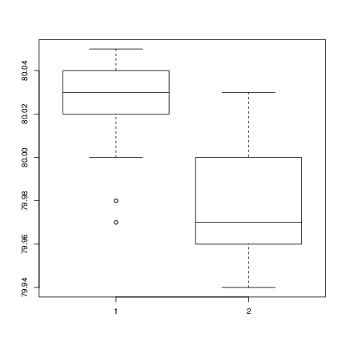
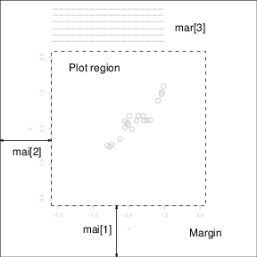
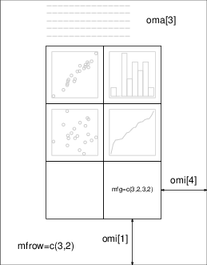

| [Top] | [Contents] | [Index] | [ ? ] |
본 문서는 통계 계산과 그래프 작성을 위한 프로그래밍 환경인 R(“GNU S”)에 대한 입문서입니다. R은 Bell 연구소에서 John Chambers 등에 의해 개발된 S 시스템과 유사합니다. S 시스템은 1998년 ACM 소프트웨어 시스템상을 수상한 시스템으로, 상세한 정보는 https://awards.acm.org/award_winners/chambers_6640862.cfm에서 확인할 수 있습니다. R은 선형 및 비선형 모델링, 통계 검정, 시계열 분석, 분류, 클러스터링 등 다양한 통계 및 그래픽 기술을 제공합니다.
본 매뉴얼은 데이터 타입, 프로그래밍 요소, 통계 모델링 및 그래프 작성에 대한 정보를 제공합니다.
본 매뉴얼은 R 버전 4.3.0 한글을 위한 것입니다.
Copyright © 1990 W. N. Venables
Copyright © 1992 W. N. Venables & D. M. Smith
Copyright © 1997 R. Gentleman & R. Ihaka
Copyright © 1997, 1998 M. Maechler
Copyright © 1999–2023 R Core Team
Permission is granted to make and distribute verbatim copies of this manual provided the copyright notice and this permission notice are preserved on all copies.
Permission is granted to copy and distribute modified versions of this manual under the conditions for verbatim copying, provided that the entire resulting derived work is distributed under the terms of a permission notice identical to this one.
Permission is granted to copy and distribute translations of this manual into another language, under the above conditions for modified versions, except that this permission notice may be stated in a translation approved by the R Core Team.
| [ < ] | [ > ] | [ << ] | [ Up ] | [ >> ] | [Top] | [Contents] | [Index] | [ ? ] |
본 R 입문서는 1990-2년 당시 Adelaide 대학에서 작성된 S과 S-PLUS 환경을 설명하는 원래의 노트에서 파생되었습니다. R과 S 프로그램 간의 차이를 반영하기 위해 일부 수정을 가했으며 일부 내용은 확장하였습니다.
본 매뉴얼을 이런 방식으로 수정하여 배포할 수 있는 권한을 부여해준 빌 베너블스 (그리고 데이비드 스미스)에게 감사의 말씀을 전합니다. 그들은 예전부터 R을 지지하는 역할을 해왔습니다.
의견 및 정정 사항은 언제나 환영합니다. 이메일을 통해 R-help@R-project.org로 보내주시기 바랍니다.
대부분의 R 초보자는 부록 A의 입문 세션에서 시작합니다. 이를 통해 R 세션의 스타일에 익숙해지고, 더 중요한 것은 실제로 무엇이 일어나는지에 대한 즉각적인 피드백을 받을 수 있습니다.
많은 사용자들은 R의 그래픽 기능을 주로 사용합니다. See section 그래픽 프로시저에서는 대부분의 섹션을 소화하기 전에도 읽을 수 있으며 기다릴 필요가 없습니다.
| 1. 소개 및 기초 지식 |
| [ < ] | [ > ] | [ << ] | [ Up ] | [ >> ] | [Top] | [Contents] | [Index] | [ ? ] |
| 1.1 R 환경 | ||
| 1.2 관련 소프트웨어 및 문서 | ||
| 1.3 R과 통계 | ||
| 1.4 R과 윈도우 시스템 | ||
| 1.5 R 대화형 사용하기 | ||
| 1.7 함수와 기능에 대한 도움말 얻기 | ||
| 1.8 R 명령어; 대소문자 구분 등 | ||
| 1.9 이전 명령어 재실행 및 수정 | ||
| 1.10 파일로부터 명령 실행 또는 출력 방향 변경 | ||
| 1.11 데이터 영속성 및 객체 제거 |
| [ < ] | [ > ] | [ << ] | [ Up ] | [ >> ] | [Top] | [Contents] | [Index] | [ ? ] |
R는 데이터 조작, 계산 및 그래픽 표시를 위한 통합 소프트웨어 패키지입니다. 그 중 일부는 다음과 같습니다.
R은 데이터 조작, 계산 및 그래픽 표시를 위한 통합 소프트웨어 시스템입니다. 그 중에서도,
"환경"이라는 용어는 다른 데이터 분석 소프트웨어와 달리 매우 구체적이고 융통성이 없는 도구들의 점증적인 축적이 아니라 전체적으로 계획된 일관된 시스템으로 특징화하고자 합니다.
R는 대화형 데이터 분석 방법의 신규 개발을 위한 도구입니다. 빠르게 발전하여 많은 패키지들이 확장되어왔습니다. 그러나 R로 작성된 대부분의 프로그램은 사실상 단일 데이터 분석을 위해 작성된 일회성 코드입니다.
| [ < ] | [ > ] | [ << ] | [ Up ] | [ >> ] | [Top] | [Contents] | [Index] | [ ? ] |
R은 Bell 연구소의 Rick Becker, John Chambers, Allan Wilks에 의해 개발된 S 언어의 구현체로 볼 수 있으며 S-PLUS 시스템의 기초도 됩니다.
S 언어의 발전은 John Chambers와 공동 저자들이 쓴 네 권의 책으로 특징 지어집니다. R에서는 Richard A. Becker, John M. Chambers 및 Allan R. Wilks가 저술했으며 The New S Language: A Programming Environment for Data Analysis and 그래픽스라는 제목입니다. S의 1991 릴리스(S 버전 3)의 새로운 기능은 John M. Chambers와 Trevor J. Hastie가 편집한 Statistical Models in S에서 다루고 있습니다. methods 패키지의 형식 및 클래스는 John M. Chambers가 저술했으며 Programming with Data에서 설명한 것을 기반으로 합니다. 자세한 참조는 See section 참조를 참고하세요.
지금은 R을 사용한 데이터 분석 및 통계에 대한 설명서가 많이 있으며, S/S-PLUS 문서는 일반적으로 R에서도 사용할 수 있습니다. 차이점을 고려하여 사용하면 됩니다. See (R-FAQ)What documentation exists for R? section ‘What documentation exists for R?’ in The R statistical system FAQ.
| [ < ] | [ > ] | [ << ] | [ Up ] | [ >> ] | [Top] | [Contents] | [Index] | [ ? ] |
R 환경 소개에서는 통계를 언급하지 않았습니다. 그러나 많은 사람들이 R을 통계 시스템으로 사용합니다. 우리는 많은 고전적이고 현대적인 통계 기법들이 구현된 환경으로 생각합니다. 이 중 일부는 기본 R 환경에 내장되어 있지만, 많은 기능들은 패키지로 제공됩니다. 약 25개의 패키지가 R와 함께 제공되며(표준 및 권장 패키지라고 함), 인터넷 사이트(https://CRAN.R-project.org) 및 기타곳에서 CRAN 패밀리를 통해 많은 패키지들을 사용할 수 있습니다. 패키지에 대한 자세한 내용은 (see section 패키지)에서 설명합니다.
대부분의 고전적인 통계 기법과 최신 방법론들이 R과 함께 사용할 수 있지만, 사용자들은 조금의 노력을 기울여야 할 수도 있습니다.
S (따라서 R)와 다른 주요 통계 시스템 간에는 철학적인 중요한 차이가 있습니다. S에서는 통계 분석을 일련의 단계로 수행하며, 중간 결과는 객체에 저장됩니다. 따라서 SAS와 SPSS는 회귀 분석이나 판별 분석에서 많은 출력을 제공하지만, R은 최소한의 출력을 제공하고 결과를 fit 객체에 저장하여 후속 R 함수에서 쿼리할 수 있도록 합니다.
| [ < ] | [ > ] | [ << ] | [ Up ] | [ >> ] | [Top] | [Contents] | [Index] | [ ? ] |
R를 사용하는 가장 편리한 방법은 윈도우 시스템을 실행하는 그래픽 워크스테이션에서 사용하는 것입니다. 이 가이드는 이러한 시설을 가진 사용자를 대상으로합니다. 특히, 때로는 X 윈도우 시스템에서 R을 사용하는 것을 언급 할 것이지만, 말하는 대부분의 내용은 R 환경의 어떤 구현에도 일반적으로 적용됩니다.
대부분의 사용자는 컴퓨터의 운영 체제와 직접 상호 작용해야 할 필요성을 느낄 것입니다. 이 가이드에서는 주로 UNIX 기계에서 운영 체제와 상호 작용하는 것을 다룹니다. Windows 또는 macOS에서 R을 실행하는 경우 일부 작은 조정이 필요합니다.
R의 사용자 정의 기능을 최대한 활용하기 위해 워크스테이션을 설정하는 것은 간단하지만 다소 지루한 절차이며, 여기에서는 자세히 다루지 않습니다. 어려움을 겪는 사용자는 지역 전문가의 도움을 받아야합니다.
| [ < ] | [ > ] | [ << ] | [ Up ] | [ >> ] | [Top] | [Contents] | [Index] | [ ? ] |
R 프로그램을 사용할 때 입력 명령을 예상할 때는 프롬프트(prompt)가 발생합니다. 기본 프롬프트는 ‘>’이며, UNIX에서는 셸 프롬프트와 동일할 수 있으므로 아무 일도 일어나지 않는 것처럼 보일 수 있습니다. 그러나 우리가 나중에 볼 것처럼, 원한다면 다른 R 프롬프트로 쉽게 변경할 수 있습니다. 우리는 UNIX 셸 프롬프트가 ‘$’라고 가정합니다.
UNIX에서 R을 사용하는 경우 첫 번째 경우를 위한 제안된 절차는 다음과 같습니다:
$ mkdir work $ cd work |
$ R |
> q() |
이 시점에서 R 세션의 데이터를 저장할 것인지 물어보게 됩니다. 일부 시스템에서는 대화 상자가 나타나고, 다른 시스템에서는 yes, no, cancel 중 하나로 응답할 수 있는 텍스트 프롬프트가 표시됩니다. 저장하고 종료할지, 저장하지 않고 종료할지, 또는 R 세션으로 돌아갈지 선택할 수 있습니다. 저장된 데이터는 이후 R 세션에서 사용할 수 있습니다.
이후의 R 세션은 간단합니다.
$ cd work $ R |
q() 명령을 사용하여 프로그램을 종료합니다.
Windows에서 R을 사용하려면 기본적으로 동일한 절차를 따릅니다. 작업 디렉토리로 폴더를 만들고 R 바로 가기에서 "시작 위치" 필드로 설정하십시오. 그런 다음 아이콘을 두 번 클릭하여 R을 시작하십시오.
| [ < ] | [ > ] | [ << ] | [ Up ] | [ >> ] | [Top] | [Contents] | [Index] | [ ? ] |
진행하기 전에 컴퓨터에서 R을 체험해 보고 싶어하는 독자들은 강력하게 권장되는 예제 세션의 입문 세션을 실습해 보기 바랍니다.
| [ < ] | [ > ] | [ << ] | [ Up ] | [ >> ] | [Top] | [Contents] | [Index] | [ ? ] |
R에는 UNIX의 man 기능과 유사한 내장 도움말 기능이 있습니다. 예를 들어 solve와 같은 특정한 명명된 함수에 대한 더 많은 정보를 얻으려면 다음 명령을 사용합니다.
> help(solve) |
다른 방법은 다음과 같습니다.
> ?solve |
특수 문자로 지정된 기능의 경우, 인수는 큰따옴표 또는 작은따옴표로 묶어서 "문자열"로 만들어야 합니다. 이는 구문상 의미가 있는 몇 개의 단어(예: if, for, function 등)에 대해서도 필요합니다.
> help("[[")
|
따옴표 중 어느 쪽을 사용해도 다른 따옴표를 이스케이프하는 데 사용할 수 있습니다. 예를 들어 "It's important"와 같은 문자열입니다. 우리는 일반적으로 이중 인용부호를 우선 사용하는 것을 권장합니다.
대부분의 R 설치에서는 다음 명령을 실행하여 HTML 형식의 도움말을 사용할 수 있습니다.
> help.start() |
이 명령은 웹 브라우저를 시작하여 하이퍼링크로 도움말 페이지를 탐색할 수 있게 합니다. UNIX에서는 이후의 도움말 요청이 HTML 기반 도움말 시스템으로 전송됩니다. help.start()로 로드된 페이지에서 ‘Search Engine and Keywords’ 링크는 사용 가능한 함수를 검색하는 고수준 개념 목록을 포함하여 특히 유용합니다. 이것은 빠르게 지표를 잡고 R의 다양한 기능을 이해하는 데 큰 도움이 될 수 있습니다.
help.search 명령어 (대체로 ??) 는 다양한 방식으로 도움말을 검색할 수 있게 합니다. 예를 들어,
> ??solve |
자세한 내용과 더 많은 예제를 보려면 ?help.search를 사용해보세요.
도움말 주제에 대한 예제는 보통 다음과 같이 실행할 수 있습니다.
> example(topic) |
Windows 버전의 R에는 다른 선택적 도움말 시스템이 있습니다. 다음 명령어를 사용하여
> ?help |
이에 대한 자세한 내용을 확인하십시오.
| [ < ] | [ > ] | [ << ] | [ Up ] | [ >> ] | [Top] | [Contents] | [Index] | [ ? ] |
기술적으로 R은 매우 간단한 구문을 가진 표현 언어(expression language)입니다. 대소문자를 구분하기 때문에 대부분의 UNIX 기반 패키지와 같이 대소문자 구분이 적용됩니다. 따라서 A와 a는 서로 다른 심볼로 간주되며 서로 다른 변수를 참조합니다. R 이름에서 사용할 수 있는 기호 집합은 운영 체제 및 실행되는 국가(실제로는 사용 중인 로캘(locale)에 따라)에 따라 다릅니다. 보통은 모든 알파벳과 숫자 기호가 허용됩니다(1)(일부 국가에서는 강세 기호가 있는 문자도 포함됩니다) 그리고 ‘.’와 ‘_’가 허용됩니다. 이름은 ‘.’ 또는 문자로 시작해야 하며 ‘.’로 시작하는 경우 두 번째 문자는 숫자가 될 수 없습니다. 이름의 길이는 효과적으로 무제한입니다.
기본 명령은 식(expressions) 또는 할당(assignments)으로 구성됩니다. 식이 명령으로 주어지면 계산되고 출력되며(특별히 숨기지 않은 경우), 값은 손실됩니다. 할당은 식을 계산하고 값을 변수에 전달하지만 결과는 자동으로 인쇄되지 않습니다.
명령은 세미콜론(‘’) 또는 개행으로 구분됩니다. 기본 명령은 중괄호(‘{’와 ‘}’)로 하나의 복합식으로 묶일 수 있습니다. 주석은 줄 끝에서 시작하는 샵 기호(‘#’)로 작성할 수 있습니다. 문자열 내부나 함수 정의 인수 목록 안에서는 주석을 사용할 수 없습니다.
명령이 줄 끝에서 완료되지 않은 경우 R은 다른 프롬프트를 제공합니다. 기본적으로
+ |
이전 명령어를 다시 실행하려면 단순히 엔터 키를 누르면 됩니다. 이전 명령어를 수정하려면 커서를 해당 명령어에 이동시켜 수정할 수 있습니다.
콘솔에서 입력한 명령행은 약 4095바이트로 제한됩니다. ((2))
| [ < ] | [ > ] | [ << ] | [ Up ] | [ >> ] | [Top] | [Contents] | [Index] | [ ? ] |
UNIX의 대부분 버전과 Windows에서 R은 이전 명령어를 회상하고 재실행할 수 있는 메커니즘을 제공합니다. 키보드의 수직 화살표 키를 사용하여 명령어 기록을 앞뒤로 스크롤할 수 있습니다. 명령이 이렇게 발견되면 수평 화살표 키를 사용하여 명령 내에서 커서를 이동하고 다른 키를 사용하여 문자를 추가하거나 <DEL> 키를 사용하여 문자를 제거할 수 있습니다. 자세한 내용은 나중에 설명합니다. see section 명령행 편집기.
UNIX에서 회상 및 편집 기능은 매우 맞춤 가능합니다. 이를 위해 readline 라이브러리에 대한 매뉴얼 항목을 읽어보세요.
또한 Emacs 텍스트 편집기는 R과 상호 작용하면서 보다 일반적인 지원 메커니즘을 제공하며, (ESS, Emacs Speaks Statistics을 통해) 알아볼 수 있습니다. See (R-FAQ)R and Emacs section ‘R and Emacs’ in The R statistical system FAQ.
| [ < ] | [ > ] | [ << ] | [ Up ] | [ >> ] | [Top] | [Contents] | [Index] | [ ? ] |
명령어들이 무제한으로 저장된 외부 파일이 작업 디렉토리 ‘work’에 있다면, 예를 들어 ‘commands.R’ 이라고 한다면, 다음 명령어를 사용하여 언제든지 R 세션에서 실행할 수 있습니다.
source("commands.R")
|
Windows에서는 Source도 사용 가능합니다. 이것은 File 메뉴에 있습니다. 함수 sink는
sink("record.lis")
|
모든 이후 콘솔 출력을 외부 파일 ‘record.lis’로 이동시킵니다. 명령어
sink() |
이것을 다시 콘솔로 복원합니다.
| [ < ] | [ > ] | [ << ] | [ Up ] | [ >> ] | [Top] | [Contents] | [Index] | [ ? ] |
R에서 생성하고 조작하는 엔티티를 객체라고 합니다. 이들은 변수, 숫자 배열, 문자열, 함수 또는 이러한 구성 요소에서 구축된 더 일반적인 구조물일 수 있습니다.
R 세션 중에는 객체가 이름에 의해 생성되고 저장됩니다(이 프로세스에 대해서는 다음 섹션에서 논의합니다). R 명령어
> objects() |
(또는 ls())를 사용하여 R에 현재 저장된 대부분의 객체의 이름을 표시할 수 있습니다. 현재 저장된 객체의 컬렉션을 작업공간라고합니다.
객체를 제거하기 위해서는 rm 함수를 사용할 수 있습니다.
> rm(x, y, z, ink, junk, temp, foo, bar) |
R 세션 중에 생성된 모든 객체는 미래 R 세션에서 사용하기 위해 영구적으로 파일에 저장할 수 있습니다. 각 R 세션이 끝나면 현재 사용 가능한 모든 객체를 저장할 수 있는 기회가 주어집니다. 이를 지정하면 객체가 현재 디렉토리의 ‘.RData’라는 파일에 쓰여지고, 세션에서 사용된 명령 라인은 ‘.Rhistory’라는 파일에 저장됩니다.
R이 같은 디렉토리에서 나중에 시작될 때 이 파일에서 작업 공간을 다시 불러옵니다. 동시에 관련된 명령어 기록도 다시 불러옵니다.
R로 수행한 분석에 대해 별도의 작업 디렉토리를 사용하는 것이 좋습니다. 분석 중에 이름이 x와 y인 객체가 생성되는 경우가 많습니다. 이러한 이름은 단일 분석의 맥락에서 종종 의미가 있지만, 동일한 디렉토리에서 여러 분석을 수행한 경우 그것들이 무엇인지 결정하기가 상당히 어려울 수 있습니다.
| [ < ] | [ > ] | [ << ] | [ Up ] | [ >> ] | [Top] | [Contents] | [Index] | [ ? ] |
| 2.1 벡터와 할당 | ||
| 2.2 벡터 연산 | ||
| 2.3 규칙적인 수열 생성 | ||
| 2.4 논리 벡터 | ||
| 2.5 결측값 | ||
| 2.6 문자 벡터 | ||
| 2.7 색인 벡터; 데이터 세트의 하위 집합 선택 및 수정 | ||
| 2.8 기타 객체 유형 |
| [ < ] | [ > ] | [ << ] | [ Up ] | [ >> ] | [Top] | [Contents] | [Index] | [ ? ] |
R은 명명된 데이터 구조를 조작합니다. 가장 간단한 구조는 숫자 벡터로, 숫자의 순차적인 모음으로 구성된 단일 객체입니다. 예를 들어, 10.4, 5.6, 3.1, 6.4, 21.7로 구성된 5개의 숫자를 가진 벡터 x를 설정하려면 R 명령을 사용하십시오.
> x <- c(10.4, 5.6, 3.1, 6.4, 21.7) |
이것은 함수인 c()를 사용한 할당 구문입니다. 이 문맥에서는 임의의 개수의 벡터 인수를 사용할 수 있고, 그 값은 인수를 끝에서 끝까지 연결하여 얻은 벡터입니다.(3)
표현식에서 스스로 나타나는 숫자는 길이가 하나인 벡터로 간주됩니다.
할당 연산자(‘<-’)에 주목하십시오. 이 연산자는 ‘<’ (작다”)와 ‘-’ (빼기”) 두 문자가 엄격하게 나란히 배치되어 있으며, 표현식의 값을 받는 객체를 ‘가리키고’ 있습니다. 대부분의 상황에서 ‘=’ 연산자를 대안으로 사용할 수 있습니다.
할당은 함수 assign()를 사용하여 할당할 수도 있습니다. 위와 동일한 할당을 다음과 같이 만드는 것과 동일합니다.
> assign("x", c(10.4, 5.6, 3.1, 6.4, 21.7))
|
평소에 사용하는 연산자인 <-는 이에 대한 구문적 단축키로 생각할 수 있습니다.
할당은 다른 방향으로도 할당 연산자의 명확한 변경을 사용하여 수행할 수 있습니다. 따라서 같은 할당을 다음과 같이 할 수 있습니다.
> c(10.4, 5.6, 3.1, 6.4, 21.7) -> x |
표현식이 완전한 명령어로 사용되면 값이 인쇄되고 사라집니다(4). 따라서 이제 다음 명령을 사용하면
> 1/x |
다섯 값의 역수가 터미널에 출력됩니다(물론 x의 값은 변경되지 않음).
다음과 같은 추가 할당
> y <- c(x, 0, x) |
는 중간에 0이 있는 두 개의 x 복사본으로 구성된 11개 항목의 벡터 y를 생성합니다.
| [ < ] | [ > ] | [ << ] | [ Up ] | [ >> ] | [Top] | [Contents] | [Index] | [ ? ] |
벡터는 산술 표현식에서 사용할 수 있으며, 이 경우 연산은 요소별로 수행됩니다. 동일한 표현식에서 나타나는 벡터는 모두 같은 길이일 필요가 없습니다. 길이가 다른 경우, 표현식의 값은 표현식에서 나타나는 가장 긴 벡터와 길이가 같은 벡터입니다. 표현식의 더 짧은 벡터는 가장 긴 벡터의 길이와 일치할 때까지 필요한 만큼(아마도 부분적으로) 재사용됩니다. 특히 상수는 단순히 반복됩니다. 그래서 위의 할당을 사용하여 명령을 실행하면
> v <- 2*x + y + 1 |
이는 요소별로 2*x를 2.2번 반복하고, y를 한 번 반복하고, 1을 11번 반복하여 합한 결과로 구성된 길이가 11인 새 벡터 v를 생성합니다.
기본 산술 연산자는 일반적인 +, -, *, / 및 거듭제곱을 위한 ^입니다.
또한 모든 일반 산술 함수를 사용할 수 있습니다.
log, exp, sin, cos, tan, sqrt 등은 모두 일반적인 의미를 가지고 있습니다.
max와 min은 각각 벡터의 가장 큰 요소와 가장 작은 요소를 선택합니다.
range는 값이 길이가 두 개인 벡터인 함수로, c(min(x), max(x))입니다.
length(x)는 x의 요소 개수입니다.
sum(x)는 x의 요소 합계를 제공합니다.
그리고 prod(x)는 그들의 곱입니다.
두 가지 통계 함수인 mean(x)는 표본 평균을 계산하며, 이는 sum(x)/length(x)와 동일합니다.
그리고 var(x)는
sum((x-mean(x))^2)/(length(x)-1) |
또는 표본 분산입니다. var()에 대한 인수가 n-by-p 행렬이면 값은 독립적인
p-변량 표본 벡터로 행을 간주하여 얻은 p-by-p 표본 공분산 행렬입니다.
sort(x)는 요소가 증가하는 순서로 배열된 x와 같은 크기의 벡터를 반환하지만, 더 유연한 정렬 기능도 사용할 수 있습니다(order() 또는 정렬을 수행하는 순열을 생성하는 sort.list() 참조).
max와 min은 인수 중 가장 큰 값과 가장 작은 값을 선택한다는 점에 유의하세요. 심지어 여러 개의 벡터가 주어져도 마찬가지입니다. 병렬 최대값 및 최소값 함수 pmax와 pmin은 가장 긴 인수와 길이가 같은 벡터를 반환하며, 각 요소에는 입력 벡터 중 해당 위치의 가장 큰(가장 작은) 요소가 포함됩니다.
대부분의 경우 사용자는 숫자 벡터의 "숫자"가 정수, 실수 또는 복소수인지 여부에 관심이 없을 것입니다. 내부적으로 계산은 배정밀도 실수 또는 입력 데이터가 복소수인 경우 배정밀도 복소수로 수행됩니다.
복소수로 작업하려면 명시적인 복소 부분을 제공하세요. 따라서
sqrt(-17) |
는 NaN과 경고를 출력하지만,
sqrt(-17+0i) |
는 복소수로 계산을 수행합니다.
| 2.3 규칙적인 수열 생성 |
| [ < ] | [ > ] | [ << ] | [ Up ] | [ >> ] | [Top] | [Contents] | [Index] | [ ? ] |
R은 일반적으로 사용되는 일련의 숫자를 생성하는 여러 가지 기능을 가지고 있습니다. 예를 들어 1:30은 벡터 c(1, 2, …, 29, 30)입니다.
콜론 연산자는 표현식 내에서 높은 우선 순위를 가지므로, 예를 들어 2*1:15는 벡터 c(2, 4, …, 28, 30)입니다. n <- 10을 입력하고 시퀀스 1:n-1과 1:(n-1)을 비교하세요.
30:1 구조를 사용하여 역순으로 시퀀스를 생성할 수 있습니다.
함수 seq()는 일련의 숫자를 생성하는 더 일반적인 기능입니다. 이 함수는 다섯 개의 인수를 가지며, 한 번의 호출에서 일부만 지정할 수 있습니다. 첫 번째와 두 번째 인수(있는 경우)는 시퀀스의 시작과 끝을 지정하며, 이 두 인수만 주어진 경우 결과는 콜론 연산자와 동일합니다. 즉, seq(2,10)은 2:10과 동일한 벡터입니다.
seq()의 인수와 다른 많은 R 함수의 인수는 명명된 형식으로도 제공될 수 있으며, 이 경우 인수가 나타나는 순서는 중요하지 않습니다. 처음 두 인수는 from=value와 to=value로 명명될 수 있습니다. 따라서 seq(1,30), seq(from=1, to=30) 및 seq(to=30, from=1)은 모두 1:30과 동일합니다. seq()의 다음 두 인수는 각각 by=value와 length=value로 명명될 수 있으며, 이는 각각 시퀀스의 단계 크기와 길이를 지정합니다. 이 둘 중 어느 것도 주어지지 않으면 기본값 by=1이 가정됩니다.
예를 들면
> seq(-5, 5, by=.2) -> s3 |
는 s3에서 벡터 c(-5.0, -4.8, -4.6, …, 4.6, 4.8, 5.0)를 생성합니다. 마찬가지로
> s4 <- seq(length=51, from=-5, by=.2) |
는 s4에서 동일한 벡터를 생성합니다.
다섯 번째 인수는 along=vector로 명명될 수 있으며, 일반적으로 시퀀스 1, 2, …, length(vector)를 생성하는 데 사용되거나 벡터가 비어 있는 경우 (그렇게 될 수 있음) 빈 시퀀스가 됩니다.
관련 함수로 rep()가 있습니다.
이는 다양한 복잡한 방법으로 객체를 복제하는 데 사용할 수 있습니다.
가장 간단한 형태는 다음과 같습니다.
> s5 <- rep(x, times=5) |
는 s5에 x의 다섯 개 복사본을 차례로 놓습니다. 또 다른 유용한 버전은 다음과 같습니다.
> s6 <- rep(x, each=5) |
는 다음 요소로 넘어가기 전에 x의 각 요소를 다섯 번 반복합니다.
| [ < ] | [ > ] | [ << ] | [ Up ] | [ >> ] | [Top] | [Contents] | [Index] | [ ? ] |
숫자 벡터뿐만 아니라 R은 논리 양의 조작을 허용합니다. 논리 벡터의 요소는 TRUE, FALSE, NA (“사용할 수 없음” 참조) 값을 가질 수 있습니다. 처음 두 개는 종종 각각 T 및 F로 축약됩니다. 그러나 T와 F는 기본적으로 TRUE와 FALSE로 설정된 변수이지만 예약어가 아니므로 사용자가 덮어쓸 수 있습니다. 따라서 항상 TRUE와 FALSE를 사용해야 합니다.
논리 벡터는 조건에 의해 생성됩니다. 예를 들면
temp <- x > 13 |
는 조건이 충족되지 않은 x의 요소에 해당하는 값이 FALSE이고 충족되는 경우 값이 TRUE인, x와 동일한 길이의 벡터 temp를 설정합니다.
논리 연산자는 <, <=, >, >=, 정확한 동등을 위한 == 및 불일치를 위한 != 입니다.
또한 c1과 c2가 논리 표현식인 경우, c1 & c2는 그들의 교집합 (“and”), c1 | c2는 그들의 합집합 (“or”), 그리고 !c1은 c1의 부정입니다.
논리 벡터는 일반 산술에 사용될 수 있으며, 이 경우 FALSE는 0이 되고 TRUE는 1이 되는 숫자 벡터로 강제 변환됩니다. 그러나 논리 벡터와 강제 변환된 숫자 벡터가 동일하지 않은 경우가 있습니다. 예를 들어 다음 하위 섹션을 참조하십시오.
| [ < ] | [ > ] | [ << ] | [ Up ] | [ >> ] | [Top] | [Contents] | [Index] | [ ? ] |
어떤 경우에는 벡터의 구성 요소가 완전히 알려지지 않을 수 있습니다. 요소 또는 값이 통계적 의미에서 "사용할 수 없거나" "결측값"인 경우, 벡터 내에 해당 값에 대한 공간을 특수 값 NA를 할당함으로써 예약할 수 있습니다.
일반적으로 NA에서 수행되는 모든 작업은 NA가 됩니다. 이 규칙의 동기는 단순히 작업의 명세가 불완전한 경우 결과를 알 수 없으므로 사용할 수 없기 때문입니다.
함수 is.na(x)는 x와 크기가 같은 논리 벡터를 제공하며, 해당 요소가 NA인 경우에만 값이 TRUE입니다.
> z <- c(1:3,NA); ind <- is.na(z) |
논리 표현식 x == NA는 is.na(x)와는 매우 다르다는 것에 유의하십시오. 왜냐하면 NA는 실제 값이 아니라 사용할 수 없는 수량을 표시하는 마커이기 때문입니다. 따라서 x == NA는 논리 표현식 자체가 완전하지 않고 따라서 결정할 수 없으므로 x와 길이가 같은 벡터이며 그 값은 모두 NA입니다.
또한 수치 계산으로 생성되는 두 번째 종류의 "결측값"이 있으며, 이를 Not a Number 즉, NaN이라고 합니다.
예시는 다음과 같습니다.
> 0/0 |
또는
> Inf - Inf |
둘 다 결과가 합리적으로 정의될 수 없기 때문에 NaN를 반환합니다.
요약하면, is.na(xx)는 NA와 NaN 값 모두에 대해 TRUE입니다. 이를 구별하기 위해, is.nan(xx)는 NaN에 대해서만 TRUE입니다.
결측값은 때때로 따옴표 없이 문자 벡터를 인쇄할 때 <NA>로 인쇄됩니다.
| [ < ] | [ > ] | [ << ] | [ Up ] | [ >> ] | [Top] | [Contents] | [Index] | [ ? ] |
문자 수량과 문자 벡터는 R에서 자주 사용되며, 예를 들어 플롯 라벨로 사용됩니다. 필요한 경우 두 개의 따옴표로 구분된 문자열로 표시됩니다. 예를 들어, "x-values", "New iteration results"와 같습니다.
문자열은 일치하는 두 개의 (") 또는 하나의 (') 따옴표를 사용하여 입력되지만, 두 개의 따옴표를 사용하여 인쇄되거나(또는 때때로 따옴표 없이 인쇄됩니다). C 스타일 이스케이프 시퀀스를 사용하며 를 이스케이프 문자로 사용합니다. 따라서 는 \로 입력되고 인쇄되며, 두 개의 따옴표 안에서 "는 "로 입력됩니다. 다른 유용한 이스케이프 시퀀스는 \n(줄 바꿈), \t(탭) 및 \b(백스페이스)입니다. 전체 목록은 ?Quotes를 참조하십시오.
문자 벡터는 c() 함수를 사용하여 벡터로 연결할 수 있으며, 그 사용 예시는 자주 나타납니다.
paste() 함수는 임의의 개수의 인수를 가져와 문자열로 하나씩 연결합니다. 인수 중에서 주어진 숫자는 분명한 방법으로 문자열로 변환되며, 즉 인쇄되는 경우와 동일한 방법으로 변환됩니다. 기본적으로 인수는 결과에서 하나의 공백 문자로 구분되지만, 명명된 인수인 sep=string을 사용하여 string(빈 문자열일 수 있음)으로 변경할 수 있습니다.
예를 들어,
labs <- paste(c("X","Y"), 1:10, sep="")
|
은 labs를 다음과 같은 문자 벡터로 만듭니다.
c("X1", "Y2", "X3", "Y4", "X5", "Y6", "X7", "Y8", "X9", "Y10")
|
특히 여기서 짧은 목록의 재활용이 발생함에 유의하십시오. 따라서 c("X", "Y")는 시퀀스 1:10과 일치하도록 5번 반복됩니다.
(5)
| [ < ] | [ > ] | [ << ] | [ Up ] | [ >> ] | [Top] | [Contents] | [Index] | [ ? ] |
벡터의 요소 하위 집합은 대괄호 안에 있는 색인 벡터를 벡터 이름에 추가하여 선택할 수 있습니다. 보다 일반적으로 벡터로 평가되는 모든 표현식은 표현식 바로 뒤에 대괄호 안에 있는 색인 벡터를 추가하여 이와 유사한 요소의 하위 집합을 선택할 수 있습니다.
이러한 색인 벡터는 4가지 고유한 유형 중 하나가 될 수 있습니다.
TRUE에 해당하는 값이 선택되고 FALSE에 해당하는 값은 생략됩니다. 예를 들어
> y <- x[!is.na(x)] |
는 객체 y를 생성(또는 다시 생성)하고, x의 누락되지 않은 값들을 동일한 순서대로 포함합니다. x에 결측값이 있으면 y는 x보다 짧을 것입니다.
또한
> (x+1)[(!is.na(x)) & x>0] -> z |
는 객체 z를 생성하고 x의 해당 값이 누락되지 않고 양수인 경우 벡터 x+1의 값을 그 안에 넣습니다.
length(x)} 집합에 있어야 합니다. 벡터의 해당 요소가 선택되고 결과에 그 순서대로 연결됩니다. 색인 벡터는 어떤 길이든 될 수 있으며 결과는 색인 벡터와 같은 길이입니다. 예를 들어, x[6]은 x의 여섯 번째 구성 요소이며,
> x[1:10] |
는 x의 처음 10개 요소를 선택합니다 (length(x)가 10 미만이 아닌 경우). 또한,
> c("x","y")[rep(c(1,2,2,1), times=4)]
|
(약간 이례적인 작업이긴 하지만) 4번 반복된 "x", "y", "y", "x"로 구성된 길이가 16인 문자 벡터를 생성합니다.
> y <- x[-(1:5)] |
는 x의 처음 다섯 개 요소를 제외한 모든 요소를 y에 저장합니다.
names 속성이 있는 경우에만 적용됩니다. 이 경우 이름 벡터의 하위 벡터를 위의 항목 2에서와 같이 양의 정수 레이블과 동일한 방식으로 사용할 수 있습니다.
> fruit <- c(5, 10, 1, 20)
> names(fruit) <- c("orange", "banana", "apple", "peach")
> lunch <- fruit[c("apple","orange")]
|
이 방법의 장점은 영숫자 이름이 숫자 인덱스보다 기억하기 쉽다는 것입니다. 이 옵션은 특히 데이터 프레임과 관련하여 나중에 살펴볼 것입니다.
색인이 지정된 표현식은 할당의 수신측에도 나타날 수 있으며, 이 경우 할당 작업은 벡터의 해당 요소에만 수행됩니다. 표현식은 vector[index_vector] 형식이어야 하며 벡터 이름 대신 임의의 표현식을 사용하는 것은 여기서 큰 의미가 없습니다.
예를 들어,
x[is.na(x)] <- 0 |
는 x의 누락된 값들을 0으로 대체하며,
y[y < 0] <- -y[y < 0] |
는 다음과 같은 효과를 갖습니다.
y <- abs(y) |
| [ < ] | [ > ] | [ << ] | [ Up ] | [ >> ] | [Top] | [Contents] | [Index] | [ ? ] |
벡터는 R에서 가장 중요한 객체 유형이지만, 나중에 더 자세히 살펴볼 몇 가지 다른 유형이 있습니다.
| [ < ] | [ > ] | [ << ] | [ Up ] | [ >> ] | [Top] | [Contents] | [Index] | [ ? ] |
| 3.1 내재적 속성 모드와 길이 | ||
| 3.2 객체의 길이 변경 | ||
| 3.3 속성 가져오기 및 설정 | ||
| 3.4 객체의 클래스 |
| [ < ] | [ > ] | [ << ] | [ Up ] | [ >> ] | [Top] | [Contents] | [Index] | [ ? ] |
R이 작업하는 개체는 기술적으로 객체라고 알려져 있습니다. 예로 들어, 숫자(실수) 또는 복소수 값의 벡터, 논리 값의 벡터 및 문자열 벡터가 있습니다. 이들은 컴포넌트가 모두 동일한 유형 또는 모드인 "원자" 구조로 알려져 있습니다. 즉, 숫자(6), 복소수, 논리, 문자 및 원시입니다.
벡터는 값이 동일한 모드여야 합니다. 따라서 주어진 벡터는 논리, 숫자, 복소수, 문자 또는 원시 중 명확하게 하나여야 합니다. (이 규칙의 유일한 예외처럼 보이는 것은 사용할 수 없는 수량에 대해 나열된 NA라는 특수한 "값"이지만, 사실 NA의 여러 유형이 있습니다.) 벡터는 비어 있을 수도 있고 여전히 모드를 가질 수 있습니다. 예를 들어, 빈 문자열 벡터는 character(0)로 나열되고 빈 숫자 벡터는 numeric(0)로 나열됩니다.
R은 또한 리스트라고 불리는 객체를 처리하며, 이들은 list 모드입니다. 이들은 개별적으로 어떤 모드든 될 수 있는 객체의 순차적인 시퀀스입니다. 리스트는 컴포넌트가 그 자체로 리스트일 수 있기 때문에 원자 구조가 아닌 "재귀적" 구조로 알려져 있습니다.
다른 재귀적 구조는 function과 expression 모드의 구조입니다. 함수는 R 시스템의 일부분을 구성하는 객체이며 나중에 자세히 다루게 될 사용자 작성 함수와 유사합니다. 객체로서의 표현식은 이 가이드에서 논의되지 않을 R의 고급 부분을 형성하지만, R에서 모델링에 사용되는 식을 논의할 때 간접적으로 다룰 것입니다.
객체의 모드란 그 기본 구성 요소의 기본 유형을 의미합니다. 이것은 객체의 "속성"의 특수한 경우입니다. 모든 객체의 또 다른 속성은 길이입니다. 함수 mode(object)와 length(object)는 정의된 구조의 모드와 길이를 알아낼 때 사용할 수 있습니다(7).
객체의 추가 속성은 보통 attributes(object)에 의해 제공됩니다. 이를 참조하십시오 속성 가져오기 및 설정. 이 때문에, mode와 length는 객체의 "내재적 속성"이라고도 불립니다.
예를 들어, z가 길이가 100인 복소수 벡터인 경우, 표현식에서 mode(z)는 문자열 "complex"이고 length(z)는 100입니다.
R은 다음과 같은 예에서처럼 합리적으로 고려될 수 있는 거의 모든 경우에 모드 변경을 처리합니다(그리고 몇 가지는 아닐 수도 있습니다).
> z <- 0:9 |
우리는 다음과 같이 할 수 있습니다.
> digits <- as.character(z) |
이후에 digits는 문자 벡터 c("0", "1", "2", …, "9")가 됩니다. 추가적인 강제 변환 또는 모드 변경으로 수치 벡터를 다시 구성할 수 있습니다.
> d <- as.integer(digits) |
이제 d와 z는 동일합니다.(8) 모드 간의 강제 변환 또는 객체에 아직 가지고 있지 않은 다른 속성을 부여하기 위한 as.something() 형식의 함수가 많이 있습니다. 독자는 이들 함수에 익숙해지기 위해 다양한 도움말 파일을 참조해야 합니다.
| [ < ] | [ > ] | [ << ] | [ Up ] | [ >> ] | [Top] | [Contents] | [Index] | [ ? ] |
"빈" 객체는 여전히 모드를 가질 수 있습니다. 예를 들어,
> e <- numeric() |
은 e를 숫자 모드의 빈 벡터 구조로 만듭니다. 비슷하게 character()는 빈 문자 벡터이며 등등입니다. 어떤 크기의 객체라도 생성되면 이전 범위를 벗어난 인덱스 값을 제공함으로써 그 객체에 새로운 구성 요소를 추가할 수 있습니다. 따라서
> e[3] <- 17 |
이제 e는 길이가 3인 벡터가 되며 (이 시점에서 처음 두 구성 요소는 모두 NA입니다). 이것은 추가 구성 요소의 모드가 처음에 객체의 모드와 일치하는 한 모든 구조에 적용됩니다.
이러한 객체 길이의 자동 조정은 scan() 입력 함수에서 자주 사용됩니다. (see section scan() 함수.)
반대로 객체의 크기를 줄이려면 할당만으로 충분합니다. 따라서 alpha가 길이가 10인 객체라면
> alpha <- alpha[2 * 1:5] |
이제 짝수 인덱스를 가진 이전 구성 요소만으로 구성된 길이가 5인 객체가 됩니다. (물론 이전 인덱스는 유지되지 않습니다.) 그런 다음 첫 번째 세 개의 값을 유지하려면
> length(alpha) <- 3 |
을 사용하고 벡터는 동일한 방식으로 확장할 수 있습니다(누락된 값으로).
| [ < ] | [ > ] | [ << ] | [ Up ] | [ >> ] | [Top] | [Contents] | [Index] | [ ? ] |
함수 attributes(object)는 해당 객체에 대해 현재 정의된 모든 비 내재적 속성 목록을 반환합니다. 함수 attr(object, name)는 특정 속성을 선택하는 데 사용할 수 있습니다. 이러한 함수는 특정 목적으로 새로운 속성을 생성하는 경우나 R 객체와 생성 날짜 또는 연산자를 연결하는 등 특수한 상황에서 사용됩니다. 그러나 이 개념은 매우 중요합니다.
주의를 기울여 속성을 할당하거나 삭제해야 합니다. 속성은 R에서 사용되는 객체 시스템의 일부분이기 때문입니다.
할당의 왼쪽에 사용되면 object와 새로운 속성을 연결하거나 기존 속성을 변경하는 데 사용할 수 있습니다. 예를 들어
> attr(z, "dim") <- c(10,10) |
은 R이 z를 마치 10x10 행렬인 것처럼 취급하게 합니다.
| [ < ] | [ > ] | [ << ] | [ Up ] | [ >> ] | [Top] | [Contents] | [Index] | [ ? ] |
R의 모든 객체에는 함수 class로 보고되는 클래스가 있습니다. 단순한 벡터의 경우 이것은 단지 모드일 뿐이며, 예를 들어 "numeric", "logical", "character" 또는 "list"이지만, "matrix", "array", "factor" 및 "data.frame"과 같은 다른 가능한 값이 있습니다.
객체의 클래스로 알려진 특별한 속성은 R에서 객체 지향 스타일(9) 프로그래밍을 가능하게 합니다. 예를 들어, 객체가 클래스가 "data.frame"이면, 특정한 방식으로 출력되고, plot() 함수는 그래픽적으로 특정한 방식으로 표시하며, summary()와 같은 기타 일반적인 함수는 그것의 클래스에 민감한 방식으로 인수로 반응합니다.
클래스의 영향을 일시적으로 제거하려면 unclass() 함수를 사용하십시오.
예를 들어, winter가 클래스 "data.frame"인 경우
> winter |
는 데이터 프레임 형식으로 출력되며, 행렬과 비슷합니다. 반면에
> unclass(winter) |
는 일반적인 목록으로 출력됩니다. 이 기능을 사용해야 하는 상황은 특별하지만, 클래스와 일반 함수 개념을 배우는 과정에서 이 기능이 필요한 경우가 있습니다.
일반 함수와 클래스에 대해서는 클래스, 일반 함수 및 객체 지향에서 더 자세히 설명하겠지만, 간단하게만 다룰 것입니다.
| [ < ] | [ > ] | [ << ] | [ Up ] | [ >> ] | [Top] | [Contents] | [Index] | [ ? ] |
요인은 동일한 길이의 다른 벡터의 구성 요소에 대한 이산 분류(그룹화)를 지정하는 데 사용되는 벡터 객체입니다. R은 순서가 있는 요인과 순서가 없는 요인을 모두 제공합니다. 요인의 실제적인 용도는 모델 공식(see section 대조)과 관련이 있지만, 여기서는 구체적인 예를 살펴볼 것입니다.
| [ < ] | [ > ] | [ << ] | [ Up ] | [ >> ] | [Top] | [Contents] | [Index] | [ ? ] |
예를 들어, 호주의 모든 주와 준주로부터 30명의 세무 회계사를 뽑았다고 가정합니다. (10) 개별 주 출신 상태는 주 별 약어로 이루어진 문자 벡터로 지정됩니다.
> state <- c("tas", "sa", "qld", "nsw", "nsw", "nt", "wa", "wa",
"qld", "vic", "nsw", "vic", "qld", "qld", "sa", "tas",
"sa", "nt", "wa", "vic", "qld", "nsw", "nsw", "wa",
"sa", "act", "nsw", "vic", "vic", "act")
|
문자 벡터의 경우 "정렬된"이라는 것은 알파벳순으로 정렬된 것을 의미합니다.
요인 역시 factor() 함수를 사용하여 생성할 수 있습니다:
> statef <- factor(state) |
print() 함수는 요인을 다른 객체와 약간 다르게 처리합니다:
> statef [1] tas sa qld nsw nsw nt wa wa qld vic nsw vic qld qld sa [16] tas sa nt wa vic qld nsw nsw wa sa act nsw vic vic act Levels: act nsw nt qld sa tas vic wa |
요인의 레벨을 알아보려면 levels() 함수를 사용할 수 있습니다.
> levels(statef) [1] "act" "nsw" "nt" "qld" "sa" "tas" "vic" "wa" |
4.2 tapply() 함수와 불규칙 배열 | ||
| 4.3 순서가 있는 요인 |
| [ < ] | [ > ] | [ << ] | [ Up ] | [ >> ] | [Top] | [Contents] | [Index] | [ ? ] |
tapply() 함수와 불규칙 배열이전 예시를 계속하면, 동일한 세무 회계사들의 소득이 또 다른 벡터에 있다고 가정합니다 (적절하게 큰 금액 단위로).
> incomes <- c(60, 49, 40, 61, 64, 60, 59, 54, 62, 69, 70, 42, 56,
61, 61, 61, 58, 51, 48, 65, 49, 49, 41, 48, 52, 46,
59, 46, 58, 43)
|
각 주의 평균 소득을 계산하기 위해 이제 특수 함수 tapply()를 사용할 수 있습니다:
> incmeans <- tapply(incomes, statef, mean) |
레벨로 구성 요소가 레이블이 지정된 평균 벡터를 생성합니다
act nsw nt qld sa tas vic wa 44.500 57.333 55.500 53.600 55.000 60.500 56.000 52.250 |
tapply() 함수는 함수를 적용하는 데 사용됩니다. 여기서는
mean(), 첫 번째 인수의 각 구성 요소 그룹에, 여기서는
incomes, 두 번째 구성 요소의 레벨에 의해 정의됩니다. 여기서는
statef(11), 마치 별도의 벡터 구조처럼. 결과는 요인의 레벨 속성과 동일한 길이의 구조를 포함합니다. 독자는 도움말 문서를 참조하여 자세한 내용을 확인해야 합니다.
이제 주별 소득 평균의 표준 오차를 계산해야 한다고 가정합니다. 이를 위해 주어진 벡터에 대해 표준 오차를 계산하는 R 함수를 작성해야 합니다. 표본 분산을 계산하는 var() 내장 함수가 있으므로, 이러한 함수는 매우 간단한 한 줄 짜리 함수입니다. 할당을 통해 지정됩니다:
> stdError <- function(x) sqrt(var(x)/length(x)) |
(함수 작성은 나중에 직접 함수 작성하기에서 다룰 예정입니다. R의 내장 함수 sd()는 다른 것임에 주의하세요.)
이러한 할당 후, 표준 오차는 다음과 같이 계산됩니다.
> incster <- tapply(incomes, statef, stdError) |
그런 다음 계산된 값은 다음과 같습니다.
> incster act nsw nt qld sa tas vic wa 1.5 4.3102 4.5 4.1061 2.7386 0.5 5.244 2.6575 |
주 평균 소득에 대한 일반적인 95% 신뢰 구간을 찾는 연습을 해볼 수 있습니다. 이를 위해 length() 함수를 사용하여 표본 크기를 찾고, 적절한 t 분포의 백분위수를 찾기 위해 qt() 함수를 사용하여 tapply()를 한 번 더 사용할 수 있습니다. (R의 t 검정 기능도 조사해 볼 수 있습니다.)
tapply() 함수는 벡터를 여러 카테고리로 복잡하게 인덱싱하는 데도 사용할 수 있습니다. 예를 들어, 세무사를 주와 성별로 나누고 싶을 수 있습니다. 그러나 이 간단한 예시에서는 (요인이 하나뿐인 경우) 벡터의 값이 요인의 고유 항목과 일치하는 그룹으로 모이게 됩니다. 그런 다음 함수가 이러한 각 그룹에 개별적으로 적용됩니다. 값은 함수 결과의 벡터이며, 요인의 levels 속성에 의해 레이블이 지정됩니다.
벡터와 레이블링 요인의 조합은 하위 클래스 크기가 불규칙할 수 있는 불규칙 배열이라고도 하는 것의 한 예입니다. 하위 클래스 크기가 모두 같은 경우 인덱싱은 암시적으로 이루어지고 훨씬 효율적으로 이루어집니다. 다음 섹션에서 이에 대해 알아보겠습니다.
| [ < ] | [ > ] | [ << ] | [ Up ] | [ >> ] | [Top] | [Contents] | [Index] | [ ? ] |
요인의 레벨은 알파벳순으로 저장되거나 명시적으로 지정된 경우 factor에 지정된 순서대로 저장됩니다.
때때로 레벨에는 기록하고 통계 분석에서 사용하려는 자연스러운 순서가 있을 수 있습니다. ordered() 함수는 이러한 순서가 있는 요인을 생성하지만, 그렇지 않으면 factor와 동일합니다. 대부분의 경우, 순서가 있는 요인과 순서가 없는 요인의 차이는 전자가 레벨의 순서를 보여주는 것으로 인쇄되는 것이지만, 선형 모델을 적합할 때 생성되는 대조는 다릅니다.
| [ < ] | [ > ] | [ << ] | [ Up ] | [ >> ] | [Top] | [Contents] | [Index] | [ ? ] |
| 5.1 배열 | ||
| 5.2 배열 인덱싱. 배열의 하위섹션 | ||
| 5.3 색인 행렬 | ||
5.4 array() 함수 | ||
| 5.5 두 배열의 외적 | ||
| 5.6 배열의 일반화된 전치 | ||
| 5.7 행렬 기능 | ||
5.8 분할 행렬 만들기, cbind()와 rbind() | ||
5.9 배열과 함께 사용되는 연결 함수, c() | ||
| 5.10 요인으로부터의 빈도표 |
| [ < ] | [ > ] | [ << ] | [ Up ] | [ >> ] | [Top] | [Contents] | [Index] | [ ? ] |
배열은 데이터 항목의 곱하기로 적용된 인덱스 컬렉션으로 간주될 수 있으며 예를 들어 숫자가 될 수 있습니다. R에서는 배열을 생성하고 처리하기 위한 간단한 기능을 제공하며, 특히 행렬의 특별한 경우를 제공합니다.
차원 벡터는 음이 아닌 정수의 벡터입니다. 그 길이가 k이면 배열이 k차원이 됩니다. 예를 들어 행렬은 2차원 배열입니다. 차원은 차원 벡터에서 주어진 값까지 1부터 인덱싱됩니다.
R에서 벡터는 차원 벡터가 그것의 dim 속성으로 있는 경우에만 배열로 사용될 수 있습니다. 예를 들어, z가 1500개의 요소를 가진 벡터라고 가정합니다. 할당
> dim(z) <- c(3,5,100) |
은 3 x 5 x 100 배열로 취급할 수 있게 해주는 dim 속성을 부여합니다.
matrix() 및 array()와 같은 다른 함수는 array() 함수에서 볼 수 있듯이 더 간단하고 자연스러운 할당을 위해 사용할 수 있습니다.
데이터 벡터의 값은 배열의 값을 FORTRAN과 같은 순서로 제공합니다. 즉, "열 우선 순서"로 첫 번째 첨자가 가장 빠르게 움직이고 마지막 첨자가 가장 느립니다.
예를 들어 배열의 차원 벡터가 c(3,4,2)이면 a에 3 * 4 * 2 = 24 항목이 있고 데이터 벡터는 순서대로 a[1,1,1], a[2,1,1], …, a[2,4,2], a[3,4,2] 값을 가집니다.
배열은 일차원일 수 있습니다: 이러한 배열은 일반적으로 벡터와 동일한 방식으로 처리되지만(인쇄 포함), 예외가 혼동을 일으킬 수 있습니다.
| [ < ] | [ > ] | [ << ] | [ Up ] | [ >> ] | [Top] | [Contents] | [Index] | [ ? ] |
I배열의 개별 요소는 배열 이름 다음에 쉼표로 구분된 대괄호 안에 첨자를 제공함으로써 참조할 수 있습니다.
더 일반적으로, 배열의 하위 섹션은 첨자 대신 일련의 색인 벡터를 제공하여 지정할 수 있습니다. 그러나 어떤 인덱스 위치에도 빈 인덱스 벡터가 주어지면 해당 첨자의 전체 범위가 사용됩니다.
이전 예제를 계속해서, a[2,,]는 차원 벡터 c(4,2)와 값을 포함하는 데이터 벡터가 있는 4 * 2 배열입니다.
c(a[2,1,1], a[2,2,1], a[2,3,1], a[2,4,1], a[2,1,2], a[2,2,2], a[2,3,2], a[2,4,2]) |
이 순서대로입니다. a[,,]는 전체 배열을 나타내며, 이는 첨자를 완전히 생략하고 a만 사용하는 것과 같습니다.
어떤 배열이든, 예를 들어 Z라고 하면, 차원 벡터는 dim(Z)(할당의 양쪽에서)로 명시적으로 참조할 수 있습니다.
또한, 배열 이름이 단일 첨자 또는 색인 벡터로만 주어지면 데이터 벡터의 해당 값만 사용됩니다. 이 경우 차원 벡터는 무시됩니다. 그러나 단일 인덱스가 벡터가 아니라 배열 자체인 경우는 다음에서 설명하는 것처럼 그렇지 않습니다.
| 5.3 색인 행렬 | ||
5.4 array() 함수 |
| [ < ] | [ > ] | [ << ] | [ Up ] | [ >> ] | [Top] | [Contents] | [Index] | [ ? ] |
어떤 첨자 위치에서 인덱스 벡터뿐만 아니라 행렬을 사용하여 배열의 불규칙한 요소 집합에 양의 벡터를 할당하거나 불규칙한 요소 집합을 벡터로 추출하기 위해 단일 색인 행렬을 사용할 수 있습니다.
행렬 예제는 프로세스를 명확하게 합니다. 두 번 인덱싱된 배열의 경우 색인 행렬은 두 개의 열과 원하는 만큼의 행으로 구성될 수 있습니다. 색인 행렬의 항목은 두 번 인덱싱된 배열의 행과 열 인덱스입니다. 예를 들어, 4 x 5 배열 X가 있고 다음 작업을 수행하려고 한다고 가정해 보겠습니다.
X[1,3], X[2,2] 및 X[3,1]를 추출하고
X의 해당 항목을 0으로 대체합니다.
이 경우 3 x 2 첨자 배열이 필요합니다. 다음 예제와 같습니다.
> x <- array(1:20, dim=c(4,5)) # 4 x 5 배열 생성.
> x
[,1] [,2] [,3] [,4] [,5]
[1,] 1 5 9 13 17
[2,] 2 6 10 14 18
[3,] 3 7 11 15 19
[4,] 4 8 12 16 20
> i <- array(c(1:3,3:1), dim=c(3,2))
> i # |
색인 행렬에는 음수 인덱스가 허용되지 않습니다. NA와 0 값은 허용됩니다. 색인 행렬의 0을 포함하는 행은 무시되며, NA를 포함하는 행은 결과에 NA를 생성합니다.
덜 중요한 예를 들어, blocks(b 수준)와 varieties(v 수준) 인자에 의해 정의된 블록 설계에 대한 (축소되지 않은) 설계 행렬을 생성하려고 한다고 가정합니다. 또한 실험에 n개의 구획이 있다고 가정해 봅시다. 다음과 같이 진행할 수 있습니다:
Xb <- matrix(0, n, b) Xv <- matrix(0, n, v) ib <- cbind(1:n, blocks) iv <- cbind(1:n, varieties) Xb[ib] <- 1 Xv[iv] <- 1 X <- cbind(Xb, Xv) |
인시던스 행렬, N을 구성하려면 다음을 사용할 수 있습니다.
N <- crossprod(Xb, Xv) |
그러나 이 행렬을 생성하는 더 간단한 직접적인 방법은 table()을 사용하는 것입니다.
N <- table(blocks, varieties) |
색인 행렬은 숫자형이어야 합니다. 행렬로 제공되는 다른 형태의 행렬(예: 논리 또는 문자 행렬)은 색인 벡터로 취급됩니다.
| [ < ] | [ > ] | [ << ] | [ Up ] | [ >> ] | [Top] | [Contents] | [Index] | [ ? ] |
array() 함수벡터 구조에 dim 속성을 부여하는 것 외에도 배열은 array 함수를 사용하여 벡터에서 구성할 수 있습니다. 이 함수는 다음과 같은 형태를 가집니다.
Z <- array(data_vector, dim_vector) |
예를 들어, 벡터 h가 24개 또는 그 이하의 숫자를 포함하고 있다면 명령
Z <- array(h, dim=c(3,4,2)) |
는 h를 사용하여 Z에서 3 x 4 x 2 배열을 설정합니다. h의 크기가 정확히 24인 경우 결과는 다음과 같습니다.
Z <- h ; dim(Z) <- c(3,4,2) |
그러나 h가 24보다 작으면 크기가 24가 되도록 처음부터 다시 값을 재활용합니다(see section 벡터와 배열 혼합 산술. 재활용 규칙).
그러나 dim(h) <- c(3,4,2)는 길이 불일치에 대한 오류를 발생시킵니다.
극단적이지만 일반적인 예로
> Z <- array(0, c(3,4,2)) |
는 Z를 모두 0인 배열로 만듭니다.
이 시점에서 dim(Z)는 차원 벡터 c(3,4,2)를 나타내고, Z[1:24]는 h에서의 데이터 벡터를 나타내며, 빈 첨자가 있는 Z[] 또는 첨자가 없는 Z는 배열 전체를 배열로 나타냅니다.
배열은 산술 표현식에서 사용될 수 있으며 결과는 데이터 벡터에 대한 요소별 연산에 의해 형성된 배열입니다. 피연산자의 dim 속성은 일반적으로 동일해야 하며 결과의 차원 벡터가 됩니다. 따라서 A, B, C가 모두 유사한 배열이라면
> D <- 2*A*B + C + 1 |
는 주어진 요소별 연산의 결과인 데이터 벡터를 가진 유사한 배열인 D를 만듭니다. 그러나 배열과 벡터 계산을 섞은 경우의 정확한 규칙은 좀 더 주의 깊게 고려해야 합니다.
| 5.4.1 벡터와 배열 혼합 산술. 재활용 규칙 |
| [ < ] | [ > ] | [ << ] | [ Up ] | [ >> ] | [Top] | [Contents] | [Index] | [ ? ] |
벡터와 배열을 혼합하여 요소별 계산을 수행하는 정확한 규칙은 다소 기묘하며 참고 자료에서 찾기 어렵습니다. 경험적으로 다음이 신뢰할 수 있는 지침이라고 생각합니다.
dim 속성을 가져야 하며 그렇지 않으면 오류가 발생합니다.
dim 속성을 가진 배열 구조입니다.
| [ < ] | [ > ] | [ << ] | [ Up ] | [ >> ] | [Top] | [Contents] | [Index] | [ ? ] |
배열에서 중요한 연산 중 하나는 외적입니다. a와 b가 두 개의 숫자 배열이라면, 그들의 외적은 두 차원 벡터를 연결하여 얻은 차원 벡터와, a의 데이터 벡터와 b의 데이터 벡터의 요소들의 모든 가능한 곱으로 얻은 데이터 벡터를 가진 배열입니다. 외적은 특수 연산자 %o%를 사용하여 형성됩니다:
> ab <- a %o% b |
다른 방법으로는
> ab <- outer(a, b, "*") |
곱셈 함수는 두 변수의 임의의 함수로 대체될 수 있습니다. 예를 들어, 함수
f(x; y) = cos(y)/(1 + x^2)
를 R 벡터 x와 y에 의해 정의된 x-와 y-좌표를 가진 정규 그리드 값에 대해 평가하려면 다음과 같이 진행할 수 있습니다:
> f <- function(x, y) cos(y)/(1 + x^2) > z <- outer(x, y, f) |
특히 두 개의 일반 벡터의 외적은 이중 첨자 배열(즉, 최대 순위 1의 행렬)입니다. 외적 연산자는 물론 비교적입니다. 자체 R 함수를 정의하는 방법은 직접 함수 작성하기에서 더 자세히 다룰 것입니다.
인위적이지만 귀여운 예로, 각 항목이 범위 0, 1, …, 9인 양의 정수인 2x2 행렬 [a, b; c, d]의 행렬식을 생각해봅시다.
이 문제의 목표는 이런 형태의 모든 가능한 행렬의 행렬식, ad - bc,를 찾고 각 값이 나타나는 빈도를 고밀도 그림으로 나타내는 것입니다. 이는 각 자릿수가 독립적으로 균일하게 무작위로 선택되는 경우 행렬식의 확률 분포를 찾는 것과 같습니다.
이 작업을 수행하는 깔끔한 방법은 outer() 함수를 두 번 사용하는 것입니다:
> d <- outer(0:9, 0:9) > fr <- table(outer(d, d, "-")) > plot(fr, xlab="Determinant", ylab="Frequency") |
여기서 plot()은 fr이 클래스 "table"임을 "본다는" 것 때문에 히스토그램과 같은 플롯 방법을 사용합니다.
이 문제를 for 루프로 처리하는 "명백한" 방법은 그룹핑, 루프 및 조건부 실행에서 논의될 예정이지만, 너무 비효율적이라 실제로 사용하기 어렵습니다.
또한 이러한 행렬 중 약 1/20이 단수행렬인 것도 놀랍게도 알 수 있습니다.
| [ < ] | [ > ] | [ << ] | [ Up ] | [ >> ] | [Top] | [Contents] | [Index] | [ ? ] |
The function aperm(a, perm)
may be used to permute an array, a. The argument perm
must be a permutation of the integers 1, …, k, where
k is the number of subscripts in a. The result of the
function is an array of the same size as a but with old dimension
given by perm[j] becoming the new j-th dimension. The
easiest way to think of this operation is as a generalization of
transposition for matrices. Indeed if A is a matrix, (that is, a
doubly subscripted array) then B given by
> B <- aperm(A, c(2,1)) |
is just the transpose of A. For this special case a simpler
function t()
is available, so we could have used B <- t(A).
| [ < ] | [ > ] | [ << ] | [ Up ] | [ >> ] | [Top] | [Contents] | [Index] | [ ? ] |
앞서 언급했듯이, 행렬은 두 개의 첨자가 있는 배열입니다. 그러나 중요한 특별한 경우이기 때문에 별도의 논의가 필요합니다. R에는 행렬에만 사용할 수 있는 많은 연산자와 함수가 포함되어 있습니다. 예를 들어, 앞서 언급했던 것처럼 t(X)는 행렬 전치 함수입니다. 함수 nrow(A)와 ncol(A)는 각각 행렬 A의 행과 열의 개수를 반환합니다.
| 5.7.1 행렬 곱셈 | ||
| 5.7.2 선형 방정식과 역행렬 | ||
| 5.7.3 고유값과 고유벡터 | ||
| 5.7.4 특이값 분해와 행렬식 | ||
| 5.7.5 최소제곱법과 QR 분해 |
| [ < ] | [ > ] | [ << ] | [ Up ] | [ >> ] | [Top] | [Contents] | [Index] | [ ? ] |
행렬 곱셈에는 연산자 %%가 사용됩니다.
n x 1 또는 1 x n 행렬은 해당 컨텍스트에서 적절한 경우 n-벡터로 사용할 수 있습니다. 반대로, 행렬 곱셈 표현식에서 나타나는 벡터들은 곱셈이 일관되게 가능한 경우 행 벡터 또는 열 벡터로 자동으로 승격됩니다(비록 이것이 항상 명확하게 가능한 것은 아닙니다, 나중에 보게 됩니다).
예를 들어, A와 B가 동일한 크기의 정사각 행렬이라면,
A * B |
는 요소별 곱셈의 행렬이고
A %*% B |
는 행렬 곱셈입니다. x가 벡터라면,
x %% A %% x |
는 이차 형태입니다.(12)
함수 crossprod()는 "크로스 프로덕트"를 형성하며, crossprod(X, y)는 t(X) %*% y와 동일하지만 연산이 더 효율적입니다. crossprod()의 두 번째 인수가 생략되면 첫 번째 인수와 동일하게 간주됩니다.
diag()의 의미는 인수에 따라 다릅니다. v가 벡터인 경우, diag(v)는 벡터의 요소를 대각선 항목으로 하는 대각 행렬을 생성합니다. 반면에 M이 행렬인 경우, diag(M)는 M의 주 대각선 항목 벡터를 반환합니다. 이 규칙은 MATLAB의 diag()에서 사용되는 것과 동일합니다. 또한 약간 혼란스럽게도, k가 단일 숫자 값인 경우 diag(k)는 k x k 항등 행렬입니다!
| [ < ] | [ > ] | [ << ] | [ Up ] | [ >> ] | [Top] | [Contents] | [Index] | [ ? ] |
선형 방정식 풀기는 행렬 곱셈의 역입니다. 다음에
b <- A %*% x |
에서 A와 b만 주어진 경우, 벡터 x는 해당 선형 방정식 시스템의 해입니다. R에서,
solve(A,b) |
는 시스템을 풀어서 x를 반환합니다(일부 정확도 손실에 따라).
선형 대수에서 공식적으로
x = A^{-1} %*% b
여기서
A^{-1}는
A의 역행렬을 나타내며, 이는 다음과 같이 계산할 수 있습니다.
solve(A) |
하지만 이것은 거의 필요하지 않습니다. 수치적으로, x <- solve(A) %*% b 대신 solve(A,b)를 계산하는 것은 비효율적이고 잠재적으로 불안정합니다.
다변량 계산에 사용되는 이차 형식 x %*% A^{-1} %*%
x 는 A의 역행렬을 계산하는 것이 아니라 x %*% solve(A,x)와 같은 것으로 계산되어야 합니다.(13)
| [ < ] | [ > ] | [ << ] | [ Up ] | [ >> ] | [Top] | [Contents] | [Index] | [ ? ] |
함수 eigen(Sm)는 대칭 행렬 Sm의 고유값과 고유벡터를 계산합니다. 이 함수의 결과는 values와 vectors라는 두 개의 구성 요소가 있는 목록입니다. 할당
> ev <- eigen(Sm) |
는 이 목록을 ev에 할당합니다. 그런 다음 ev$val은 Sm의 고유값 벡터이고 ev$vec은 해당 고유벡터의 행렬입니다. 고유값만 필요했다면 다음 할당을 사용할 수 있습니다.
> evals <- eigen(Sm)$values |
evals에는 고유값 벡터가 저장되고 두 번째 구성 요소는 버려집니다. 표현식
> eigen(Sm) |
자체가 명령어로 사용되면 두 구성 요소가 이름과 함께 인쇄됩니다. 큰 행렬의 경우 필요하지 않은 경우 고유벡터를 계산하지 않는 것이 좋습니다.
> evals <- eigen(Sm, only.values = TRUE)$values |
| [ < ] | [ > ] | [ << ] | [ Up ] | [ >> ] | [Top] | [Contents] | [Index] | [ ? ] |
함수 svd(M)는 임의의 행렬 인수인 M을 받아들이고, M의 특이값 분해를 계산합니다. 이는 M과 동일한 열 공간을 가진 직교 정규화된 열의 행렬인 U, M의 행 공간이 열 공간인 두 번째 직교 정규화된 열의 행렬인 V 및 양의 항목을 가진 대각 행렬인 D로 구성되어 있으며, M = U %*% D %*% t(V)를 만족합니다. D는 사실상 대각 요소의 벡터로 반환됩니다. svd(M)의 결과는 실제로 d, u 및 v라는 세 가지 구성 요소로 된 목록입니다.
M이 실제로 정사각형인 경우 다음과 같이 절대값 행렬식을 계산할 수 있습니다.
> absdetM <- prod(svd(M)$d) |
다양한 행렬로 이 계산이 자주 필요한 경우, R 함수로 정의할 수 있습니다.
> absdet <- function(M) prod(svd(M)$d) |
이렇게 하면 absdet()를 다른 R 함수처럼 사용할 수 있습니다.
더 간단하지만 유용한 예로, 정사각 행렬의 대각합(trace)을 계산하는 함수인 tr()을 작성하는 것을 고려해 볼 수 있습니다. [힌트: 명시적인 루프를 사용할 필요가 없습니다. 다시 diag() 함수를 살펴보세요.]
R에는 부호를 포함하여 행렬식을 계산하는 내장 함수인 det와, 부호와 크기(선택적으로 로그 스케일)를 제공하는 determinant 함수가 있습니다.
| [ < ] | [ > ] | [ << ] | [ Up ] | [ >> ] | [Top] | [Contents] | [Index] | [ ? ] |
함수 lsfit()은 최소 제곱 적합 절차의 결과를 제공하는 목록을 반환합니다. 다음과 같은 할당이 있습니다.
> ans <- lsfit(X, y) |
y는 관측치 벡터이고 X는 설계 행렬인 최소 제곱 적합의 결과를 제공합니다. 자세한 내용은 도움말 시설을 참조하고, 또한 회귀 진단을 위한 후속 함수인 ls.diag()도 확인하십시오. 대표 평균 항이 자동으로 포함되므로 X의 열로 명시적으로 포함할 필요가 없습니다. 게다가 회귀 모델링을 위해 거의 항상 lm(.) (see section 선형 모델)을 lsfit()보다 선호할 것입니다.
다른 관련된 함수는 qr() 및 그와 연관된 함수들입니다.
다음 할당을 고려해 보세요.
> Xplus <- qr(X) > b <- qr.coef(Xplus, y) > fit <- qr.fitted(Xplus, y) > res <- qr.resid(Xplus, y) |
이것들은 y의 직교 투영을 fit의 X 범위에, 직교 보완재에 대한 투영을 res에, 투영에 대한 계수 벡터를 b에 계산합니다. 즉, b는 기본적으로 MATLAB의 ’백 슬래시’ 연산자의 결과입니다.
X가 전체 열 순위를 가지고 있다고 가정하지 않습니다. 중복성이 발견되면 발견될 때마다 제거됩니다.
이 대안은 최소 제곱 계산을 수행하는 더 오래된 저수준 방법입니다. 일부 맥락에서는 여전히 유용하지만, 일반적으로 이제 R에서의 통계 모델에서 논의될 통계 모델 기능으로 대체됩니다.
| [ < ] | [ > ] | [ << ] | [ Up ] | [ >> ] | [Top] | [Contents] | [Index] | [ ? ] |
cbind()와 rbind()앞서 비공식적으로 살펴본 것처럼, 행렬은 cbind()와 rbind() 함수를 사용하여 다른 벡터와 행렬로부터 구성할 수 있습니다. 대략적으로 cbind()는 수평적으로, 또는 열별로 행렬을 결합하여 행렬을 형성하고, rbind()는 수직적으로 또는 행별로 결합합니다.
할당에서
> X <- cbind(arg_1, arg_2, arg_3, …) |
cbind()의 인수는 임의의 길이의 벡터 또는 같은 열 크기(즉 같은 행 수)의 행렬이어야 합니다. 결과는 arg_1, arg_2, …를 열로 형성한 이어 붙인 인수가 있는 행렬입니다.
cbind()에 대한 인수 중 일부가 벡터인 경우, 현재 있는 행렬의 열 크기보다 작을 수 있으며, 이 경우 행렬 열 크기(또는 행렬이 주어지지 않은 경우 가장 긴 벡터의 길이)와 일치하도록 순환적으로 확장됩니다.
함수 rbind()는 행에 대한 해당 작업을 수행합니다. 이 경우 벡터 인수는 가능한 순환적으로 확장되며, 당연히 행 벡터로 간주됩니다.
X1과 X2가 동일한 행 수를 가지고 있다고 가정해 보겠습니다. 이들을 1의 초기 열과 함께 열별로 행렬 X에 결합하려면 다음을 사용할 수 있습니다.
> X <- cbind(1, X1, X2) |
rbind() 또는 cbind()의 결과는 항상 행렬 상태를 가집니다. 따라서 cbind(x) 및 rbind(x)는 벡터 x를 각각 열 또는 행 행렬로 처리할 수 있는 가장 간단한 방법일 수 있습니다.
| [ < ] | [ > ] | [ << ] | [ Up ] | [ >> ] | [Top] | [Contents] | [Index] | [ ? ] |
c()다음과 같이 언급되어야 합니다. cbind()와 rbind()는
dim 속성을 고려하는 연결 함수이지만, 기본적인
c() 함수는 그렇지 않으며, 오히려 모든 숫자 객체의
dim 및 dimnames 속성을 제거합니다. 이것은 때때로 유용하게 사용됩니다.
배열을 간단한 벡터 객체로 다시 변환하는 공식적인 방법은
as.vector()를 사용하는 것입니다.
> vec <- as.vector(X) |
그러나 한 가지 인수를 사용하는 c()로 비슷한 결과를 얻을 수 있습니다.
이 부수효과를 위해서만 사용합니다.
> vec <- c(X) |
두 가지 사이에는 약간의 차이가 있지만, 결국 둘 중 어느 것을 선택할 것인지는 대부분 스타일의 문제입니다 (전자가 선호됩니다).
| [ < ] | [ > ] | [ << ] | [ Up ] | [ >> ] | [Top] | [Contents] | [Index] | [ ? ] |
요인은 그룹으로의 분할을 정의합니다. 마찬가지로 두 개의 요인은 양방향 교차 분류를 정의하고, 그리고 이어집니다.
함수 table()은 동일한 길이의 요인들로부터 빈도 표를 계산할 수 있게 합니다. k개의 요인 인수가 있으면,
결과는 k-way 배열의 빈도입니다.
예를 들어, statef가 데이터 벡터의 각 항목에 대한 상태 코드를 제공하는 요인이라고 가정합니다. 할당
> statefr <- table(statef) |
은 샘플에서 각 상태의 빈도를 statefr에 나타내는 테이블로 나타납니다. 빈도는 요인의 levels 속성에 의해 정렬되고 레이블이 지정됩니다. 이 간단한 경우는 다음과 동일하지만 더 편리합니다.
> statefr <- tapply(statef, statef, length) |
더 나아가, incomef는 데이터 벡터의 각 항목에 대해 적절하게 정의된 "소득 계층"을 제공하는 요인이라고 가정해봅시다. 예를 들어 cut() 함수를 사용하여:
> factor(cut(incomes, breaks = 35+10*(0:7))) -> incomef |
그런 다음 빈도의 이원 테이블을 계산하려면:
> table(incomef,statef)
statef
incomef act nsw nt qld sa tas vic wa
(35,45] 1 1 0 1 0 0 1 0
(45,55] 1 1 1 1 2 0 1 3
(55,65] 0 3 1 3 2 2 2 1
(65,75] 0 1 0 0 0 0 1 0
|
더 높은 차원의 빈도 테이블로의 확장은 즉각적입니다.
| [ < ] | [ > ] | [ << ] | [ Up ] | [ >> ] | [Top] | [Contents] | [Index] | [ ? ] |
| 6.1 리스트 | ||
| 6.2 리스트 생성과 수정 | ||
| 6.3 데이터 프레임 |
| [ < ] | [ > ] | [ << ] | [ Up ] | [ >> ] | [Top] | [Contents] | [Index] | [ ? ] |
R의 리스트는 그것의 구성 요소로 알려진 객체의 순서가 지정된 컬렉션으로 구성된 객체입니다.
구성 요소가 동일한 모드 또는 유형일 필요는 없으며, 예를 들어, 리스트는 숫자 벡터, 논리 값, 행렬, 복소수 벡터, 문자 배열, 함수 등으로 구성될 수 있습니다. 다음은 리스트를 만드는 방법에 대한 간단한 예입니다:
> Lst <- list(name="Fred", wife="Mary", no.children=3,
child.ages=c(4,7,9))
|
구성 요소는 항상 번호가 지정되어 있으며, 이를 통해 참조할 수 있습니다. 따라서 Lst가 네 개의 구성 요소를 가진 리스트의 이름이면, 이들은 각각 Lst[[1]], Lst[[2]], Lst[[3]] 및 Lst[[4]]로 개별적으로 참조할 수 있습니다. 더 나아가, Lst[[4]]가 첨자가 지정된 배열이면, Lst[[4]][1]은 그 첫 번째 항목입니다.
Lst가 리스트인 경우, 함수 length(Lst)는 (상위 수준의) 구성 요소의 수를 제공합니다.
리스트의 구성 요소는 또한 이름이 지정될 수 있으며, 이 경우 구성 요소는 이름이 지정된 경우 더블 대괄호 안의 숫자 대신 문자열로 구성 요소 이름을 제공하거나, 더 편리하게는 다음 형식의 표현식을 제공하여 참조할 수 있습니다.
> name$component_name |
같은 것을 위한 것입니다.
이것은 매우 유용한 관례입니다. 왜냐하면 번호를 잊어버렸을 때 올바른 구성 요소를 얻기가 더 쉬워지기 때문입니다.
따라서 위에서 제공한 간단한 예에서:
Lst$name은 Lst[[1]]과 동일하며 문자열 "Fred"입니다.
Lst$wife은 Lst[[2]]와 동일하며 문자열 "Mary"입니다.
Lst$child.ages[1]은 Lst[[4]][1]과 동일하며 숫자 4입니다.
게다가, 리스트 구성 요소의 이름을 이중 대괄호 안에서도 사용할 수 있습니다. 즉, Lst[["name"]]은 Lst$name와 동일합니다. 이는 구성 요소의 이름이 다른 변수에 저장되어 추출되어야 할 경우에 특히 유용합니다.
> x <- "name"; Lst[[x]] |
Lst[[1]]과 Lst[1]을 구분하는 것이 매우 중요합니다. ‘[[…]]’는 단일 요소를 선택하는 데 사용되는 연산자이며, ‘[…]’는 일반적인 첨자 연산자입니다. 따라서 전자는 리스트 Lst의 첫 번째 객체이며, 명명된 리스트인 경우 이름은 포함되지 않습니다. 후자는 첫 번째 항목만 포함하는 리스트 Lst의 하위 리스트입니다. 명명된 리스트인 경우, 이름이 하위 리스트로 전송됩니다.
구성 요소의 이름은 고유하게 식별할 수 있는 최소한의 문자 수로 축약될 수 있습니다. 따라서 Lst$coefficients는 최소한으로 Lst$coe로 지정될 수 있고 Lst$covariance는 Lst$cov로 지정됩니다.
이름 벡터는 실제로 다른 속성과 마찬가지로 리스트의 속성일 뿐이며, 그대로 처리될 수 있습니다. 물론 리스트 이외의 다른 구조에도 마찬가지로 names 속성을 부여할 수 있습니다.
| [ < ] | [ > ] | [ << ] | [ Up ] | [ >> ] | [Top] | [Contents] | [Index] | [ ? ] |
기존 객체에서 새 리스트를 만들려면 list() 함수를 사용합니다. 다음과 같은 할당을 사용합니다.
> Lst <- list(name_1=object_1, …, name_m=object_m) |
여기서는 object_1, …, object_m를 구성 요소로 사용하여 m개의 구성 요소가 있는 리스트 Lst를 설정하고 인수 이름에 지정된 이름을 부여합니다(이름은 자유롭게 선택할 수 있음). 이러한 이름이 생략되면 구성 요소는 번호로만 지정됩니다. 리스트를 형성하는 데 사용된 구성 요소는 새 리스트를 형성할 때 복사되며 원본에는 영향을 주지 않습니다.
첨자가 지정된 객체와 마찬가지로, 리스트도 추가 구성 요소를 지정하여 확장할 수 있습니다. 예를 들면,
> Lst[5] <- list(matrix=Mat) |
| 6.2.1 리스트 결합하기 |
| [ < ] | [ > ] | [ << ] | [ Up ] | [ >> ] | [Top] | [Contents] | [Index] | [ ? ] |
연결 함수 c()에 리스트 인수가 주어지면 결과는 구성 요소가 인수 리스트가 순차적으로 결합된 모드 리스트인 객체입니다.
> list.ABC <- c(list.A, list.B, list.C) |
벡터 객체가 인수로 주어진 경우, 연결 함수는 마찬가지로 모든 인수를 하나의 벡터 구조로 결합했습니다. 이 경우, dim 속성과 같은 모든 기타 속성이 삭제됩니다.
| [ < ] | [ > ] | [ << ] | [ Up ] | [ >> ] | [Top] | [Contents] | [Index] | [ ? ] |
데이터 프레임은 클래스가 "data.frame"인 리스트입니다. 데이터 프레임으로 만들 수 있는 리스트에는 제한이 있으며, 다음과 같습니다.
데이터 프레임은 많은 목적으로 열이 다른 모드와 속성을 가진 행렬로 간주할 수 있습니다. 행렬 형태로 표시할 수 있으며 행렬 색인 규칙을 사용하여 행과 열을 추출할 수 있습니다.
| 6.3.1 데이터 프레임 만들기 | ||
6.3.2 attach() 함수와 detach() 함수 | ||
| 6.3.3 데이터 프레임과 작업하기 | ||
| 6.3.4 임의의 목록 첨부하기 | ||
| 6.3.5 검색 경로 관리하기 |
| [ < ] | [ > ] | [ << ] | [ Up ] | [ >> ] | [Top] | [Contents] | [Index] | [ ? ] |
데이터 프레임의 열(구성 요소)에 대해 제한을 만족하는 객체는 data.frame 함수를 사용하여 하나를 형성하는 데 사용할 수 있습니다.
> accountants <- data.frame(home=statef, loot=incomes, shot=incomef) |
데이터 프레임의 제한을 준수하는 구성 요소가 있는 리스트는 함수 as.data.frame()을 사용하여 데이터 프레임으로 강제 변환할 수 있습니다.
데이터 프레임을 처음부터 만드는 가장 간단한 방법은 read.table() 함수를 사용하여 외부 파일에서 전체 데이터 프레임을 읽는 것입니다. 이에 대해서는 파일에서 데이터 읽기에서 더 자세히 설명하겠습니다.
| [ < ] | [ > ] | [ << ] | [ Up ] | [ >> ] | [Top] | [Contents] | [Index] | [ ? ] |
attach() 함수와 detach() 함수$ 표기법, 예를 들어 accountants$home과 같은 리스트 구성 요소는 항상 편리하지는 않습니다. 리스트나 데이터 프레임의 구성 요소를 구성 요소 이름에 따라 변수로서 임시로 표시할 수 있는 유용한 기능이 있으면 좋겠습니다.
attach() 함수는 리스트 또는 데이터 프레임과 같은 ’데이터베이스’를 인수로 취합니다. 따라서 lentils이 변수 lentils$u, lentils$v, lentils$w가 있는 데이터 프레임이라고 가정하면, 첨부
attach(lentils) |
검색 경로에서 위치 2에 데이터 프레임을 배치하고, 위치 1에 변수 u, v, w가 없는 경우 데이터 프레임에서 변수로 사용할 수 있습니다. 이 시점에서 다음과 같은 할당이 있으면
u <- v+w |
데이터 프레임의 구성 요소 u를 대체하지 않고, 검색 경로의 위치 1에 있는 작업 디렉토리에서 다른 변수 u로 마스킹합니다. 데이터 프레임 자체에 영구적인 변경을 만들려면, 다시 한번 $ 표기법을 사용하는 것이 가장 간단한 방법입니다.
lentils$u <- v+w |
그러나 구성 요소 u의 새로운 값은 데이터 프레임이 분리되어 다시 연결될 때까지 표시되지 않습니다.
데이터 프레임을 분리하려면 다음 함수를 사용하십시오.
detach() |
보다 정확하게는, 이 문장은 검색 경로의 위치 2에 있는 개체를 분리합니다. 따라서 현재 상황에서 변수 u, v, w는 lentils$u 등의 목록 표기법으로만 표시되지 않습니다. 검색 경로의 위치 2보다 큰 위치에 있는 개체는 detach에 번호를 주어 분리할 수 있지만, detach(lentils) 또는 detach("lentils")와 같이 항상 이름을 사용하는 것이 훨씬 안전합니다.
참고: R에서 리스트와 데이터 프레임은 위치 2 이상에서만 첨부할 수 있으며, 첨부되는 것은 원래 객체의 복사본입니다. 첨부된 값을
assign을 통해 변경할 수 있지만, 원래의 리스트 또는 데이터 프레임은 변경되지 않습니다.
| [ < ] | [ > ] | [ << ] | [ Up ] | [ >> ] | [Top] | [Contents] | [Index] | [ ? ] |
같은 작업 디렉토리에서 여러 다른 문제를 편안하게 함께 작업할 수 있는 유용한 관례는 다음과 같습니다.
$ 형태의 할당을 사용하여 데이터 프레임에 추가한 다음 detach() 합니다.
이런 방식으로 같은 디렉토리에서 여러 문제를 처리하는 것이 꽤 간단합니다. 예를 들어, 모든 문제에서 변수가 x, y, z로 명명되어 있습니다.
| [ < ] | [ > ] | [ << ] | [ Up ] | [ >> ] | [Top] | [Contents] | [Index] | [ ? ] |
attach()는 검색 경로에 디렉토리와 데이터 프레임뿐만 아니라 다른 클래스의 객체도 첨부할 수 있는 일반적인 함수입니다. 특히, 모드가 "list"인 모든 객체는 동일한 방식으로 첨부할 수 있습니다.
> attach(any.old.list) |
첨부된 모든 것은 위치 번호 또는 선호하는 이름으로 detach를 사용하여 분리할 수 있습니다.
| [ < ] | [ > ] | [ << ] | [ Up ] | [ >> ] | [Top] | [Contents] | [Index] | [ ? ] |
함수 search는 현재 검색 경로를 보여주므로 첨부 및 분리된 데이터 프레임과 목록(및 패키지)을 추적하는 데 매우 유용합니다. 초기에는 다음과 같습니다.
> search() [1] ".GlobalEnv" "Autoloads" "package:base" |
여기서 .GlobalEnv는 작업 공간입니다.(14)
lentils이 첨부된 후에는 다음과 같습니다.
> search() [1] ".GlobalEnv" "lentils" "Autoloads" "package:base" > ls(2) [1] "u" "v" "w" |
그리고 보이는대로 ls(또는 objects)를 사용하여 검색 경로의 위치를 검사할 수 있습니다.
마지막으로 데이터 프레임을 분리하고 검색 경로에서 제거되었음을 확인합니다.
> detach("lentils")
> search()
[1] ".GlobalEnv" "Autoloads" "package:base"
|
| [ < ] | [ > ] | [ << ] | [ Up ] | [ >> ] | [Top] | [Contents] | [Index] | [ ? ] |
대규모 데이터 객체는 일반적으로 외부 파일에서 값을 읽어올 것이며, 키보드에서 R 세션 중에 입력되지 않을 것입니다. R 입력 기능은 간단하며 요구 사항이 상당히 엄격하고 심지어 유연하지 않습니다. R의 설계자들은 파일 편집기나 Perl(15)과 같은 다른 도구를 사용하여 입력 파일을 수정하여 R의 요구 사항에 맞추어 질 수 있다는 명백한 가정이 있습니다. 일반적으로 이 작업은 매우 간단합니다.
변수가 주로 데이터 프레임에 저장될 것이라면, 우리가 강력하게 제안하는 것처럼, 전체 데이터 프레임은 read.table() 함수를 사용하여 직접 읽을 수 있습니다. 또한 더 원시적인 입력 함수인 scan()을 직접 호출할 수도 있습니다.
R에서 데이터를 가져오는 방법과 데이터를 내보내는 방법에 대한 자세한 내용은 R Data Import/Export 설명서를 참조하십시오.
7.1 read.table() 함수 | ||
7.2 scan() 함수 | ||
| 7.3 내장 데이터셋에 접근하기 | ||
| 7.4 데이터 편집하기 |
| [ < ] | [ > ] | [ << ] | [ Up ] | [ >> ] | [Top] | [Contents] | [Index] | [ ? ] |
read.table() 함수전체 데이터 프레임을 직접 읽으려면 외부 파일은 일반적으로 특수한 형태를 가지고 있어야 합니다.
파일의 첫 번째 줄에 두 번째 줄보다 하나 적은 항목이 있는 경우, 이러한 배치가 시행되고 있다고 가정합니다. 따라서 데이터 프레임으로 읽힐 파일의 처음 몇 줄은 다음과 같습니다.
이름과 행 레이블이 있는 입력 파일 형식: Price Floor Area Rooms Age Cent.heat 01 52.00 111.0 830 5 6.2 no 02 54.75 128.0 710 5 7.5 no 03 57.50 101.0 1000 5 4.2 no 04 57.50 131.0 690 6 8.8 no 05 59.75 93.0 900 5 1.9 yes ...
기본적으로 숫자 항목(행 레이블 제외)은 숫자 변수로 읽히고, 예제의 Cent.heat와 같은 비숫자 변수는 문자 변수로 읽힙니다. 필요한 경우 이를 변경할 수 있습니다.
함수 read.table()을 사용하여 데이터 프레임을 직접 읽을 수 있습니다.
HousePrice <- read.table("houses.data")
|
종종 행 레이블을 직접 포함하지 않고 기본 레이블을 사용하려고 할 것입니다. 이 경우 파일에서 행 레이블 열을 생략할 수 있습니다.
행 레이블 없는 입력 파일 형식: Price Floor Area Rooms Age Cent.heat 52.00 111.0 830 5 6.2 no 54.75 128.0 710 5 7.5 no 57.50 101.0 1000 5 4.2 no 57.50 131.0 690 6 8.8 no 59.75 93.0 900 5 1.9 yes ...
그런 다음 데이터 프레임은 다음과 같이 읽을 수 있습니다.
HousePrice <- read.table("houses.data", header=TRUE)
|
여기서 header=TRUE 옵션은 첫 번째 줄이 제목 행임을 지정하고, 따라서 파일 형식에서 암시하는 것처럼 명시적인 행 레이블이 주어지지 않습니다.
7.2 scan() 함수 |
| [ < ] | [ > ] | [ << ] | [ Up ] | [ >> ] | [Top] | [Contents] | [Index] | [ ? ] |
scan() 함수데이터 벡터가 길이가 같고 병렬로 읽혀야 한다고 가정해 보겠습니다. 또한 첫 번째 벡터는 문자 모드이고 나머지 두 개의 벡터는 숫자 모드이며 파일은 ‘input.dat’입니다. 첫 번째 단계는 scan()을 사용하여 세 개의 벡터를 리스트로 읽어 들이는 것입니다.
> inp <- scan("input.dat", list("",0,0))
|
두 번째 인수는 읽을 세 개의 벡터 모드를 결정하는 더미 리스트 구조입니다. 결과는 inp에 저장되는데, 이는 읽은 세 개의 벡터가 있는 리스트입니다. 데이터 항목을 세 개의 별도의 벡터로 분리하려면 다음과 같은 할당을 사용합니다.
> label <- inp[[1]]; x <- inp[[2]]; y <- inp[[3]] |
더 편리하게는 더미 리스트에 이름이 지정된 구성 요소가 있을 수 있으며, 이 경우 읽어들인 벡터에 접근하는 데 이름을 사용할 수 있습니다. 예를 들면,
> inp <- scan("input.dat", list(id="", x=0, y=0))
|
변수를 따로 사용하려면 작업 프레임의 변수에 다시 할당할 수 있습니다.
> label <- inp$id; x <- inp$x; y <- inp$y |
또는 검색 경로의 위치 2에 목록이 첨부될 수 있습니다 (see section 임의의 목록 첨부하기).
두 번째 인수가 단일 값이고 목록이 아닌 경우, 하나의 벡터가 읽히며, 이 벡터의 모든 구성 요소는 더미 값과 동일한 모드여야 합니다.
> X <- matrix(scan("light.dat", 0), ncol=5, byrow=TRUE)
|
더 정교한 입력 기능들이 있으며, 이러한 기능들은 메뉴얼에 자세히 설명되어 있습니다.
| [ < ] | [ > ] | [ << ] | [ Up ] | [ >> ] | [Top] | [Contents] | [Index] | [ ? ] |
약 100개의 데이터셋이 R(패키지 datasets에 포함)과 함께 제공되며, 다른 패키지(또한 R과 함께 제공되는 권장 패키지 포함)에서도 사용할 수 있습니다. 현재 사용 가능한 데이터셋 목록을 보려면
data() |
R에 제공되는 모든 데이터셋은 이름으로 직접 사용할 수 있습니다. 그러나 많은 패키지는 data를 사용하여 R에 데이터셋을 로드하는 데 사용했던 구식 규칙을 사용합니다. 예를 들면,
data(infert) |
이 방식은 표준 패키지(이 예시와 같이)에서 여전히 사용할 수 있습니다. 대부분의 경우, 동일한 이름의 R 객체를 로드합니다. 그러나 일부 경우에는 여러 객체를 로드하므로, 어떤 것을 기대해야 할지 알려면 온라인 도움말에서 해당 객체를 확인하십시오.
| [ < ] | [ > ] | [ << ] | [ Up ] | [ >> ] | [Top] | [Contents] | [Index] | [ ? ] |
특정 패키지에서 데이터에 접근하려면 package 인수를 사용하십시오. 예를 들면,
data(package="rpart") data(Puromycin, package="datasets") |
library에 의해 패키지가 첨부되면 해당 패키지의 데이터셋이 검색에 자동으로 포함됩니다.
사용자가 제공한 패키지는 데이터셋의 풍부한 출처가 될 수 있습니다.
| [ < ] | [ > ] | [ << ] | [ Up ] | [ >> ] | [Top] | [Contents] | [Index] | [ ? ] |
데이터 프레임이나 행렬에서 호출될 때 edit는 편집을 위한 별도의 스프레드시트와 같은 환경을 제공합니다. 이는 데이터 세트를 읽은 후 작은 변경사항을 적용할 때 유용합니다. 다음 명령어를 사용하면
xnew <- edit(xold) |
데이터 세트 xold를 편집할 수 있으며 완료되면 변경된 객체가 xnew에 할당됩니다. 원래 데이터셋 xold를 변경하려면 fix(xold)를 사용하는 것이 가장 간단한 방법이며, 이는 xold <- edit(xold)와 동일합니다.
다음을 사용하여
xnew <- edit(data.frame()) |
스프레드시트 인터페이스를 통해 새 데이터를 입력할 수 있습니다.
| [ < ] | [ > ] | [ << ] | [ Up ] | [ >> ] | [Top] | [Contents] | [Index] | [ ? ] |
| 8.1 통계표 집합으로서의 R | ||
| 8.2 데이터 집합의 분포 검사 | ||
| 8.3 일표본 및 이표본 검정 |
| [ < ] | [ > ] | [ << ] | [ Up ] | [ >> ] | [Top] | [Contents] | [Index] | [ ? ] |
R의 편리한 용도 중 하나는 통계 표를 포괄적으로 제공하는 것입니다. 누적 분포 함수 P(X <= x), 확률 밀도 함수, 및 분위수 함수(주어진 q에 대해 P(X <= x) > q를 만족하는 가장 작은 x)를 평가하고 분포에서 시뮬레이션하는 함수가 제공됩니다.
betashape1, shape2, ncpbinomsize, probcauchylocation, scalechisqdf, ncpexpratefdf1, df2, ncpgammashape, scalegeomprobhyperm, n, klnormmeanlog, sdloglogislocation, scalenbinomsize, probnormmean, sdpoislambdasignrankntdf, ncpunifmin, maxweibullshape, scalewilcoxm, n
여기에 주어진 이름 앞에 ‘d’를 붙여 밀도, ‘p’를 붙여 누적 분포 함수(CDF), ‘q’를 붙여 분위수 함수, ‘r’을 붙여 시뮬레이션(random deviates)을 사용합니다. 첫 번째 인수는 dxxx에 대한 x, pxxx에 대한 q, qxxx에 대한 p 및 rxxx에 대한 n(단, rhyper, rsignrank 및 rwilcox의 경우 nn임)입니다. 아직 모든 경우에 비중심성 매개변수 ncp를 사용할 수는 없습니다. 자세한 내용은 온라인 도움말을 참조하십시오.
pxxx 및 qxxx 함수는 모두 논리 인수 lower.tail과 log.p를 가지며, dxxx 함수는 log를 가집니다. 이를 통해 누적(또는 "통합된") 위험 함수를 H(t) = - log(1 - F(t))와 같이 얻을 수 있습니다.
- pxxx(t, ..., lower.tail = FALSE, log.p = TRUE) |
또는 더 정확한 로그 가능도를 (dxxx(..., log = TRUE)를 사용하여) 직접 얻을 수 있습니다.
추가로, 정규 분포에서 추출한 표본의 학생화 범위 분포에 대한 함수 ptukey와 qtukey 그리고 다항 분포에 대한 dmultinom 및 rmultinom 함수가 있습니다. 더 많은 분포는 기여된 패키지에 있으며, 특히 SuppDists를 참조하십시오.
다음은 몇 가지 예입니다.
> ## t 분포의 2-꼬리 p 값 > 2*pt(-2.43, df = 13) > ## F(2, 7) 분포의 상위 1% 지점 > qf(0.01, 2, 7, lower.tail = FALSE) |
R에서 난수 생성이 어떻게 이루어지는지에 대한 정보는 온라인 도움말의 RNG를 참조하십시오.
| [ < ] | [ > ] | [ << ] | [ Up ] | [ >> ] | [Top] | [Contents] | [Index] | [ ? ] |
(단변량) 데이터 집합이 주어지면 다양한 방법으로 분포를 살펴볼 수 있습니다. 가장 간단한 방법은 숫자를 검토하는 것입니다. summary와 fivenum에 의해 약간 다른 요약이 제공됩니다.
그리고 숫자를 표시하는 stem (“줄기와 잎” 플롯)이 있습니다.
> attach(faithful) > summary(eruptions) Min. 1st Qu. Median Mean 3rd Qu. Max. 1.600 2.163 4.000 3.488 4.454 5.100 > fivenum(eruptions) [1] 1.6000 2.1585 4.0000 4.4585 5.1000 > stem(eruptions) 소수점은 |의 왼쪽에 1 자리 있습니다. 16 | 070355555588 18 | 000022233333335577777777888822335777888 20 | 00002223378800035778 22 | 0002335578023578 24 | 00228 26 | 23 28 | 080 30 | 7 32 | 2337 34 | 250077 36 | 0000823577 38 | 2333335582225577 40 | 0000003357788888002233555577778 42 | 03335555778800233333555577778 44 | 02222335557780000000023333357778888 46 | 0000233357700000023578 48 | 00000022335800333 50 | 0370 |
줄기와 잎 플롯은 히스토그램과 비슷하며, R에는 히스토그램을 그리는 함수인 hist가 있습니다.
> hist(eruptions) ## 구간을 작게 만들고 밀도 플롯을 그립니다 > hist(eruptions, seq(1.6, 5.2, 0.2), prob=TRUE) > lines(density(eruptions, bw=0.1)) > rug(eruptions) # 실제 데이터 포인트를 표시합니다 |
보다 세련된 밀도 플롯은 density를 사용하여 만들 수 있으며, 이 예에서는 density에 의해 생성된 선을 추가했습니다. 대역폭 bw는 기본값이 너무 많은 평활화를 제공하기 때문에 시행착오를 통해 선택되었습니다(일반적으로 "흥미로운" 밀도에 대해서는 그렇습니다). (더 나은 자동 대역폭 선택 방법이 사용 가능하며, 이 예에서는 bw = "SJ"이 좋은 결과를 제공합니다.)

우리는 함수 ecdf를 사용하여 경험적 누적 분포 함수를 그릴 수 있습니다.
> plot(ecdf(eruptions), do.points=FALSE, verticals=TRUE) |
이 분포는 명백하게 표준 분포와 거리가 멉니다. 오른쪽 모드, 즉 3분 이상의 분출에 대해서는 어떨까요? 정규 분포를 적합하고 적합한 CDF를 겹쳐 그립니다.
> long <- eruptions[eruptions > 3] > plot(ecdf(long), do.points=FALSE, verticals=TRUE) > x <- seq(3, 5.4, 0.01) > lines(x, pnorm(x, mean=mean(long), sd=sqrt(var(long))), lty=3) |
분위수-분위수(Q-Q) 그림은 이를 더 자세히 검토하는 데 도움이 됩니다.
par(pty="s") # 정사각형 그림 영역 배열 qqnorm(long); qqline(long) |
이는 합리적인 적합도를 보여주지만, 정규 분포에서 기대할 수 있는 것보다 오른쪽 꼬리가 짧습니다. 이를 t 분포에서 시뮬레이션한 데이터와 비교해 봅시다.

x <- rt(250, df = 5) qqnorm(x); qqline(x) |
이는 보통(랜덤 샘플인 경우) 정규분포에서 기대하는 것보다 긴 꼬리를 보여줍니다. 생성 분포에 대한 Q-Q 그림을 그리려면 다음과 같이 합니다.
qqplot(qt(ppoints(250), df = 5), x, xlab = "Q-Q plot for t dsn") qqline(x) |
마지막으로, 정규성과의 더 정식적인 일치 여부를 검증하려면 다음과 같이 합니다. R는 Shapiro-Wilk 검정을 제공합니다.
> shapiro.test(long)
Shapiro-Wilk normality test
data: long
W = 0.9793, p-value = 0.01052
|
그리고 Kolmogorov-Smirnov 검정도 제공합니다.
> ks.test(long, "pnorm", mean = mean(long), sd = sqrt(var(long)))
One-sample Kolmogorov-Smirnov test
data: long
D = 0.0661, p-value = 0.4284
alternative hypothesis: two.sided
|
(여기서 분포 이론은 유효하지 않습니다. 왜냐하면 동일한 표본에서 정규 분포의 매개 변수를 추정했기 때문입니다.)
| [ < ] | [ > ] | [ << ] | [ Up ] | [ >> ] | [Top] | [Contents] | [Index] | [ ? ] |
지금까지 하나의 표본을 정규 분포와 비교했습니다. 두 개의 표본의 측면을 비교하는 것이 훨씬 더 일반적인 작업입니다. R에서는 아래에서 사용되는 모든 "고전적인" 검정을 포함하여 일반적으로 로드되는 stats 패키지에 있습니다.
Rice (1995, p.490)에서 빙상의 잠재열(cal/gm)에 대한 다음 데이터 세트를 고려해 보십시오.
방법 A: 79.98 80.04 80.02 80.04 80.03 80.03 80.04 79.97
80.05 80.03 80.02 80.00 80.02
방법 B: 80.02 79.94 79.98 79.97 79.97 80.03 79.95 79.97
|
상자 그림은 두 표본의 간단한 그래픽 비교를 제공합니다.
A <- scan() 79.98 80.04 80.02 80.04 80.03 80.03 80.04 79.97 80.05 80.03 80.02 80.00 80.02 B <- scan() 80.02 79.94 79.98 79.97 79.97 80.03 79.95 79.97 boxplot(A, B) |
이것은 첫 번째 그룹이 두 번째 그룹보다 높은 결과를 주는 경향이 있음을 나타냅니다.
두 예제의 평균이 동일한지 검정하기 위해, 짝이 맞지 않는 t-검정을 사용할 수 있습니다.
> t.test(A, B)
Welch Two Sample t-test
data: A and B
t = 3.2499, df = 12.027, p-value = 0.00694
alternative hypothesis: true difference in means is not equal to 0
95 percent confidence interval:
0.01385526 0.07018320
sample estimates:
mean of x mean of y
80.02077 79.97875
|
이는 정규성을 가정할 때 유의한 차이를 나타냅니다. 기본적으로 R 함수는 두 표본에서 분산의 동일성을 가정하지 않습니다. 두 표본이 정규 모집단에서 나온 경우, F 검정을 사용하여 분산의 동일성을 검정할 수 있습니다.
> var.test(A, B)
F test to compare two variances
data: A and B
F = 0.5837, num df = 12, denom df = 7, p-value = 0.3938
alternative hypothesis: true ratio of variances is not equal to 1
95 percent confidence interval:
0.1251097 2.1052687
sample estimates:
ratio of variances
0.5837405
|
이 결과는 유의한 차이가 없음을 보여주며, 따라서 분산이 동일하다고 가정하는 고전적인 t-검정을 사용할 수 있습니다.
> t.test(A, B, var.equal=TRUE)
Two Sample t-test
data: A and B
t = 3.4722, df = 19, p-value = 0.002551
alternative hypothesis: true difference in means is not equal to 0
95 percent confidence interval:
0.01669058 0.06734788
sample estimates:
mean of x mean of y
80.02077 79.97875
|
이러한 모든 검정은 두 표본의 정규성을 가정합니다. 이표본 Wilcoxon(또는 Mann-Whitney) 검정은 귀무 가설 하에서 공통 연속 분포만을 가정합니다.
> wilcox.test(A, B)
Wilcoxon rank sum test with continuity correction
data: A and B
W = 89, p-value = 0.007497
alternative hypothesis: true location shift is not equal to 0
Warning message:
Cannot compute exact p-value with ties in: wilcox.test(A, B)
|
주의사항: 각 표본에 여러 개의 동점이 있으며, 이는 이러한 데이터가 이산 분포(반올림으로 인한 가능성이 높음)에서 나온 것을 강력하게 제안합니다.
두 표본을 그래픽으로 비교하는 여러 가지 방법이 있습니다. 우리는 이미 상자 그림 쌍을 보았습니다. 다음과 같은 작업을 수행하면
> plot(ecdf(A), do.points=FALSE, verticals=TRUE, xlim=range(A, B)) > plot(ecdf(B), do.points=FALSE, verticals=TRUE, add=TRUE) |
두 경험적 CDF를 보여주며, qqplot은 두 표본의 Q-Q 플롯을 수행합니다. Kolmogorov-Smirnov 검정은 두 ecdf 사이의 최대 수직 거리를 공통 연속 분포를 가정하여 검정합니다:
> ks.test(A, B)
Two-sample Kolmogorov-Smirnov test
data: A and B
D = 0.5962, p-value = 0.05919
alternative hypothesis: two-sided
Warning message:
cannot compute correct p-values with ties in: ks.test(A, B)
|
| [ < ] | [ > ] | [ << ] | [ Up ] | [ >> ] | [Top] | [Contents] | [Index] | [ ? ] |
| 9.1 그룹화된 표현 | ||
| 9.2 제어문 |
| [ < ] | [ > ] | [ << ] | [ Up ] | [ >> ] | [Top] | [Contents] | [Index] | [ ? ] |
R은 결과를 반환하는 함수 또는 식이 유일한 명령 유형인 의미에서 표현 언어입니다. 할당조차도 할당된 값이 결과인 식이며, 어떤 식이든 사용될 수 있는 곳에서 사용할 수 있습니다. 특히 여러 할당이 가능합니다.
명령어는 중괄호, {expr_1; …; expr_m} 안에 함께 그룹화 될 수 있으며, 이 경우 그룹의 값은 그룹 내에서 평가된 마지막 표현식의 결과입니다. 이러한 그룹도 식이므로 예를 들어 괄호 안에 포함되어 더 큰 식의 일부로 사용될 수 있습니다.
| [ < ] | [ > ] | [ << ] | [ Up ] | [ >> ] | [Top] | [Contents] | [Index] | [ ? ] |
9.2.1 조건부 실행: if 문 | ||
9.2.2 반복적 실행: for 루프, repeat 및 while |
| [ < ] | [ > ] | [ << ] | [ Up ] | [ >> ] | [Top] | [Contents] | [Index] | [ ? ] |
if 문이 언어는 다음 형식의 조건부 구문을 사용할 수 있습니다.
> if (expr_1) expr_2 else expr_3 |
여기서 expr_1은 단일 논리 값으로 평가되어야 하며 전체 식의 결과는 그 다음 명확해집니다.
"단락 평가(short-circuit)" 연산자인 &&와 ||은 종종 if 문의 조건 부분에 사용됩니다. &와 |는 벡터에 원소별로 적용되는 반면, &&와 ||는 길이가 1인 벡터에 적용되며 필요한 경우에만 두 번째 인수를 평가합니다.
if/else 구조의 벡터화된 버전인 ifelse 함수가 있습니다. 이 함수는 ifelse(condition, a, b) 형식을 가지며, condition과 같은 길이의 벡터를 반환합니다. condition[i]가 참인 경우 요소는 a[i]이고, 그렇지 않으면 b[i]입니다(여기서 a와 b는 필요에 따라 재사용됩니다).
| [ < ] | [ > ] | [ << ] | [ Up ] | [ >> ] | [Top] | [Contents] | [Index] | [ ? ] |
for 루프, repeat 및 while또한 for 루프 구문이 있으며 형식은 다음과 같습니다.
> for ( |
여기서 name은 루프 변수입니다. expr_1은 벡터 표현식이며(대개 1:20과 같은 시퀀스가 사용됩니다), expr_2는 종종 더미 name 관련하여 작성된 하위 표현식을 가진 그룹화된 표현식입니다. expr_2는 name이 expr_1의 벡터 결과 값들을 순회하며 반복적으로 평가됩니다.
예를 들어, ind가 클래스 지시자의 벡터이고 클래스 내에서 y 대 x의 별도의 플롯을 생성하려고 한다고 가정해 봅시다. 여기서 사용할 수 있는 한 가지 방법은 coplot()을 사용하는 것입니다. 이렇게 하면 요소의 각 레벨에 해당하는 플롯 배열이 생성됩니다. 이제 모든 플롯을 하나의 디스플레이에 놓는 또 다른 방법은 다음과 같습니다:
> xc <- split(x, ind)
> yc <- split(y, ind)
> for (i in 1:length(yc)) {
plot(xc[[i]], yc[[i]])
abline(lsfit(xc[[i]], yc[[i]]))
}
|
(split() 함수에 유의하세요. 이 함수는 인수에 의해 지정된 클래스에 따라 더 큰 벡터를 분할하여 벡터 목록을 생성합니다. 이 함수는 주로 상자 그림과 관련하여 사용되며 유용한 함수입니다. 자세한 내용은 help 기능을 참조하세요.)
경고:
for()루프는 R 코드에서 컴파일된 언어보다 훨씬 덜 사용됩니다. ’전체 객체’ 관점을 취하는 코드는 R에서 더 명확하고 빠를 가능성이 높습니다.
기타 루핑 기능에는
> repeat expr |
문과
> while (condition) expr |
문이 포함됩니다.
break 문을 사용하여 모든 루프를 종료할 수 있으며, 이는 비정상적으로 종료될 수 있습니다. 이것은 repeat 루프를 종료하는 유일한 방법입니다.
next 문을 사용하여 특정 사이클을 중단하고 "다음"으로 건너뛸 수 있습니다.
제어문은 주로 직접 함수 작성하기에서 논의되는 함수와 관련하여 사용되며 여기에서 더 많은 예제가 나타납니다.
| [ < ] | [ > ] | [ << ] | [ Up ] | [ >> ] | [Top] | [Contents] | [Index] | [ ? ] |
우리가 지금까지 비공식적으로 살펴본 바와 같이, R 언어는 사용자가 모드 function의 객체를 생성할 수 있습니다. 이것들은 특수한 내부 형식으로 저장되는 진정한 R 함수이며, 추가 표현식 등에서 사용할 수 있습니다. 이 과정에서 언어는 힘, 편리성 및 우아함에서 엄청난 발전을 이루며, 유용한 함수를 작성하는 방법을 배우는 것은 R 사용을 편안하고 생산적으로 만드는 주요 방법 중 하나입니다.
R 시스템의 일부로 제공되는 대부분의 함수(예: mean(), var(), postscript() 등)는 R에서 작성되었으므로 사용자가 작성한 함수와 본질적으로 다르지 않다는 점을 강조할 필요가 있습니다.
함수는 다음과 같은 형식의 할당으로 정의됩니다.
> name <- function(arg_1, arg_2, …) expression |
expression은 인수 arg_i를 사용하여 값을 계산하는 R 표현식입니다(일반적으로 그룹화된 표현식). 표현식의 값은 함수의 반환 값입니다.
그런 다음 함수 호출은 일반적으로 name(expr_1, expr_2, …) 형식을 취하며 함수 호출이 합당한 어디에서나 발생할 수 있습니다.
| 10.1 간단한 예제 | ||
| 10.2 새로운 이진 연산자 정의하기 | ||
| 10.3 이름 지정 인자와 기본값 | ||
| 10.4 ‘…’ 인자 | ||
| 10.5 함수 내 할당 | ||
| 10.6 더 고급 예제들 | ||
| 10.7 영역 | ||
| 10.8 환경 사용자 정의하기 | ||
| 10.9 클래스, 일반 함수 및 객체 지향 |
| [ < ] | [ > ] | [ << ] | [ Up ] | [ >> ] | [Top] | [Contents] | [Index] | [ ? ] |
첫 번째 예로, 두 표본의 t-통계량을 계산하는 함수를 생각해 보세요. 이것은 인위적인 예제입니다. 왜냐하면 같은 목적을 달성하는 더 간단한 방법이 있기 때문입니다.
함수는 다음과 같이 정의됩니다:
> twosam <- function(y1, y2) {
n1 <- length(y1); n2 <- length(y2)
yb1 <- mean(y1); yb2 <- mean(y2)
s1 <- var(y1); s2 <- var(y2)
s <- ((n1-1)*s1 + (n2-1)*s2)/(n1+n2-2)
tst <- (yb1 - yb2)/sqrt(s*(1/n1 + 1/n2))
tst
}
|
이 함수가 정의되면 다음과 같은 호출을 사용하여 두 표본의 t-검정을 수행할 수 있습니다.
> tstat <- twosam(data$male, data$female); tstat |
두 번째 예로, MATLAB 백슬래시 명령을 직접 에뮬레이션하는 함수를 고려해 보십시오. 이 명령은 벡터 y의 정사영을 행렬 X의 열 공간에 대한 계수를 반환합니다. (이것은 일반적으로 회귀 계수의 최소 제곱 추정값이라고 합니다.) 이것은 일반적으로 qr() 함수로 수행되지만, 때로는 이것을 직접 사용하는 것이 조금 까다롭기 때문에 다음과 같은 간단한 함수를 사용하는 것이 좋습니다.
따라서 n by 1 벡터 y와 n by p 행렬 X가 주어지면 X \ y는 (X’X)^{-}X’y, 여기서 (X’X)^{-} 은 X’X의 일반화된 역행렬입니다.
> bslash <- function(X, y) {
X <- qr(X)
qr.coef(X, y)
}
|
이 객체가 생성된 후에는 다음과 같은 문장에서 사용할 수 있습니다.
> regcoeff <- bslash(Xmat, yvar) |
등등.
클래식한 R 함수인 lsfit()은 이 작업을 상당히 잘 수행하며, 더 많은 작업을 수행합니다(16). 이 함수는 앞에서 언급한 약간 직관에 어긋나는 방식으로 함수 qr() 및 qr.coef()를 사용하여 계산의 이 부분을 수행합니다. 따라서 자주 사용할 경우 간단한 사용 함수에서 이 부분만 분리하는 것이 어느 정도 가치가 있을 것입니다. 그렇다면 이를 행렬 이진 연산자로 만들어 더 편리하게 사용할 수 있을 것입니다.
| [ < ] | [ > ] | [ << ] | [ Up ] | [ >> ] | [Top] | [Contents] | [Index] | [ ? ] |
bslash() 함수에 다른 이름을 지정했다면, 즉 다음 형식의 이름을 지정했다면
%anything% |
이 함수는 함수 형식이 아닌 표현식에서 이진 연산자로 사용할 수 있었습니다. 예를 들어 내부 문자로 !을 선택한다고 가정해 봅시다. 그러면 함수 정의는 다음과 같이 시작됩니다.
> "%!%" <- function(X, y) { … }
|
(따옴표 사용에 주목하세요.) 그러면 함수를 X %!% y로 사용할 수 있습니다. (역 슬래시 기호 자체는 이 문맥에서 특별한 문제를 제기하기 때문에 편리한 선택이 아닙니다.)
행렬 곱셈 연산자 %*%와 외적 행렬 연산자 %o%는 이와 같은 방식으로 정의된 이진 연산자의 다른 예입니다.
| [ < ] | [ > ] | [ << ] | [ Up ] | [ >> ] | [Top] | [Contents] | [Index] | [ ? ] |
규칙적인 수열 생성에서 처음으로 언급했듯이, 호출된 함수에 대한 인수가 "name=object" 형식으로 주어진 경우에는 임의의 순서로 제공될 수 있습니다. 더욱이 인수 시퀀스는 이름이 지정되지 않은 위치 형식으로 시작하여 위치 인수 뒤에 명명된 인수를 지정할 수 있습니다.
따라서 다음과 같이 정의된 함수 fun1이 있다면
> fun1 <- function(data, data.frame, graph, limit) {
[function body omitted]
}
|
그런 다음 함수는 여러 가지 방법으로 호출될 수 있습니다. 예를 들어
> ans <- fun1(d, df, TRUE, 20) > ans <- fun1(d, df, graph=TRUE, limit=20) > ans <- fun1(data=d, limit=20, graph=TRUE, data.frame=df) |
모두 동일합니다.
많은 경우 인수에 일반적으로 적절한 기본값을 지정할 수 있으며, 이 경우 기본값이 적절할 때 호출에서 완전히 생략할 수 있습니다. 예를 들어, fun1이 다음과 같이 정의된 경우
> fun1 <- function(data, data.frame, graph=TRUE, limit=20) { … }
|
다음과 같이 호출할 수 있습니다.
> ans <- fun1(d, df) |
이제 위의 세 가지 경우와 동일하거나 다음과 같이 호출할 수 있습니다.
> ans <- fun1(d, df, limit=10) |
기본값 중 하나를 변경합니다.
중요한 것은 기본값이 상수로만 제한되지 않고 임의의 표현식이 될 수 있다는 것입니다. 여기에 나온 간단한 예제처럼 다른 함수의 인수로 사용되기도 합니다.
| [ < ] | [ > ] | [ << ] | [ Up ] | [ >> ] | [Top] | [Contents] | [Index] | [ ? ] |
다른 일반적인 요구 사항은 하나의 함수가 인수 설정을 다른 함수에 전달하도록 허용하는 것입니다. 예를 들어, 많은 그래픽 함수는 par() 함수를 사용하고 plot()과 같은 함수들은 사용자가 그래픽 출력을 제어하기 위해 par()에 그래픽 매개변수를 전달할 수 있도록 합니다. (See section Permanent changes: The par() function에서 par() 함수에 대한 자세한 내용을 확인할 수 있습니다.) 이것은 함수에 추가 인수, 문자 그대로 ‘…’,를 포함시켜 전달할 수 있습니다. 아래에 개요 예제가 있습니다.
fun1 <- function(data, data.frame, graph=TRUE, limit=20, ...) {
[omitted statements]
if (graph)
par(pch="*", ...)
[more omissions]
}
|
덜 자주 사용되지만, 함수가 ‘…’의 구성 요소를 참조해야 하는 경우가 있습니다. 표현식 list(...)는 모든 해당 인수를 평가하고 이름이 있는 목록으로 반환하며, ..1, ..2 등은 한 번에 하나씩 평가합니다. ‘..n’은 n 번째 매치되지 않은 인수를 반환합니다.
| [ < ] | [ > ] | [ << ] | [ Up ] | [ >> ] | [Top] | [Contents] | [Index] | [ ? ] |
함수 내에서 수행되는 일반적인 할당은 지역적이고 일시적이며 함수에서 종료 후 사라집니다. 따라서 X <- qr(X)와 같은 할당은 호출 프로그램의 인수 값에 영향을 주지 않습니다.
R 할당의 범위를 지배하는 규칙을 완전히 이해하려면 독자가 평가 프레임 개념에 익숙해야 합니다. 이것은 다소 고급이지만 어렵지 않은 주제이며 여기서는 더 이상 다루지 않습니다.
함수 내에서 전역적이고 영구적인 할당이 의도된 경우, "슈퍼 할당" 연산자인 <<- 또는 함수 assign()을 사용할 수 있습니다. 자세한 내용은 help 문서를 참조하십시오.
| [ < ] | [ > ] | [ << ] | [ Up ] | [ >> ] | [Top] | [Contents] | [Index] | [ ? ] |
| 10.6.1 블록 설계에서의 효율성 요소 | ||
| 10.6.2 출력된 배열에서 모든 이름 삭제하기 | ||
| 10.6.3 재귀적 수치 적분 |
| [ < ] | [ > ] | [ << ] | [ Up ] | [ >> ] | [Top] | [Contents] | [Index] | [ ? ] |
블록 디자인의 효율성 요소를 찾는 것을 고려해 함수의 좀 더 완전한 예시를 살펴보겠습니다. (이 문제의 일부 측면은 이미 색인 행렬에서 논의되었습니다.)
블록 디자인은 두 요인, 즉 blocks (b 수준)과 varieties (v 수준)에 의해 정의됩니다. R과 K가 각각 v x v 및 b x b 복제 및 블록 크기 행렬이고 N이 b x v 발생 행렬이라면, 효율성 요소는 다음과 같이 정의됩니다.
E = I_v - R^{-1/2}N’K^{-1}NR^{-1/2} = I_v - A’A, where
A = K^{-1/2}NR^{-1/2}.
함수를 작성하는 한 가지 방법은 아래와 같습니다.
> bdeff <- function(blocks, varieties) {
blocks <- as.factor(blocks) # minor safety move
b <- length(levels(blocks))
varieties <- as.factor(varieties) # minor safety move
v <- length(levels(varieties))
K <- as.vector(table(blocks)) # remove dim attr
R <- as.vector(table(varieties)) # remove dim attr
N <- table(blocks, varieties)
A <- 1/sqrt(K) * N * rep(1/sqrt(R), rep(b, v))
sv <- svd(A)
list(eff=1 - sv$d^2, blockcv=sv$u, varietycv=sv$v)
}
|
이번 경우에는 고유값 루틴보다 특이값 분해를 사용하는 것이 수치적으로 약간 더 좋습니다.
함수의 결과는 첫 번째 구성 요소로 효율성 요소뿐만 아니라 블록과 다양한 대수 변환도 제공하는 리스트입니다. 이 정보들은 때때로 추가적인 유용한 질적 정보를 제공하기 때문입니다.
| [ < ] | [ > ] | [ << ] | [ Up ] | [ >> ] | [Top] | [Contents] | [Index] | [ ? ] |
큰 행렬이나 배열을 다룰 때 인쇄 목적으로, 배열 이름이나 번호 없이 밀집된 블록 형태로 인쇄하는 것이 종종 유용합니다. dimnames 속성을 제거하면 이 효과를 얻을 수 없습니다. 대신 배열에 빈 문자열로 구성된 dimnames 속성을 지정해야 합니다. 예를 들어 행렬 X를 인쇄하려면
> temp <- X
> dimnames(temp) <- list(rep("", nrow(X)), rep("", ncol(X)))
> temp; rm(temp)
|
이것은 함수 no.dimnames()를 사용하여 훨씬 더 편리하게 수행할 수 있으며, 아래에 나와 있는 것처럼 동일한 결과를 얻기 위한 "래핑"으로 사용됩니다. 또한 몇 가지 효과적이고 유용한 사용자 함수가 꽤 짧을 수 있다는 것을 보여줍니다.
no.dimnames <- function(a) {
배열에서 모든 차원 이름을 제거하여 압축된 인쇄를 가능하게 함.
d <- list()
l <- 0
for(i in dim(a)) {
d[[l <- l + 1]] <- rep("", i)
}
dimnames(a) <- d
a
}
|
이 함수가 정의되면, 배열을 밀집 형식으로 인쇄할 수 있습니다.
no.dimnames(X) |
이는 특히 값보다 패턴에 관심이 있는 큰 정수 배열에 유용합니다.
| [ < ] | [ > ] | [ << ] | [ Up ] | [ >> ] | [Top] | [Contents] | [Index] | [ ? ] |
함수는 재귀적일 수 있고, 함수 내부에서 자체 함수를 정의할 수도 있습니다. 그러나 이러한 함수나 변수는 검색 경로에 있을 경우처럼 상위 평가 프레임에서 호출된 함수로 상속되지 않습니다.
아래 예제는 일차원 수치 적분을 수행하는 간단한 방법을 보여줍니다. 피적분 함수는 범위의 끝점과 중간에서 평가됩니다. 한 패널의 사다리꼴 규칙 대답이 충분히 가깝다면, 후자가 값으로 반환됩니다. 그렇지 않으면 각 패널에 대해 동일한 프로세스가 재귀적으로 적용됩니다. 결과적으로 적분 함수가 선형에서 가장 멀리 떨어진 영역에서 함수 평가를 집중하는 적응 적분 프로세스가 생성됩니다. 그러나 무거운 오버헤드가 있고, 피적분 함수가 매끄럽고 평가하기 매우 어려울 때만 다른 알고리즘과 경쟁력이 있습니다.
이 예제는 또한 R 프로그래밍에서 약간의 퍼즐처럼 제공됩니다.
area <- function(f, a, b, eps = 1.0e-06, lim = 10) {
fun1 <- function(f, a, b, fa, fb, a0, eps, lim, fun) {
## 함수 fun1'은 area' 내부에서만 볼 수 있습니다.
d <- (a + b)/2
h <- (b - a)/4
fd <- f(d)
a1 <- h * (fa + fd)
a2 <- h * (fd + fb)
if(abs(a0 - a1 - a2) < eps || lim == 0)
return(a1 + a2)
else {
return(fun(f, a, d, fa, fd, a1, eps, lim - 1, fun) +
fun(f, d, b, fd, fb, a2, eps, lim - 1, fun))
}
}
fa <- f(a)
fb <- f(b)
a0 <- ((fa + fb) * (b - a))/2
fun1(f, a, b, fa, fb, a0, eps, lim, fun1)
}
|
| 10.7 영역 | ||
| 10.9 클래스, 일반 함수 및 객체 지향 |
| [ < ] | [ > ] | [ << ] | [ Up ] | [ >> ] | [Top] | [Contents] | [Index] | [ ? ] |
이 문서의 다른 부분에 비해 이 섹션의 논의는 약간 더 기술적입니다. 그러나 이것은 S-PLUS와 R 사이의 주요 차이점 중 하나를 상세하게 설명합니다.
함수 본문에 나타나는 기호는 세 가지 클래스로 나눌 수 있습니다; 형식 매개변수, 지역 변수 및 자유 변수입니다. 함수의 형식 매개변수는 함수 인수 목록에 나타나는 변수들입니다. 이들의 값은 실제 함수 인수를 형식 매개변수에 바인딩하는 과정에 의해 결정됩니다. 지역 변수는 함수 본문의 표현식을 평가함으로써 결정되는 값입니다. 형식 매개변수 또는 지역 변수가 아닌 변수를 자유 변수라고 합니다. 자유 변수는 그것들에게 할당되면 지역 변수가 됩니다. 다음 함수 정의를 고려하십시오.
f <- function(x) {
y <- 2*x
print(x)
print(y)
print(z)
}
|
이 함수에서 x는 형식 매개변수, y는 지역 변수, z는 자유 변수입니다.
R에서 자유 변수 바인딩은 함수가 생성된 환경에서 먼저 찾아보도록 결정됩니다. 이것을 어휘 범위라고 합니다. 먼저 cube라는 함수를 정의합니다.
cube <- function(n) {
sq <- function() n*n
n*sq()
}
|
함수 sq의 변수 n은 해당 함수의 인수가 아닙니다. 따라서 자유 변수이며, 유효 범위 규칙을 사용하여 그것과 관련된 값을 확인해야 합니다. 정적 범위(S-PLUS)에서 값은 전역 변수 n에 연결된 값입니다. 어휘 범위(R)에서는 함수 sq가 정의된 시점에 변수 n에 대한 활성 바인딩인 함수 cube의 매개변수입니다. R에서 평가와 S-PLUS에서 평가의 차이점은 S-PLUS가 n이라는 전역 변수를 찾는 반면, R은 먼저 cube가 호출될 때 생성된 환경에서 n이라는 변수를 찾습니다.
S에서의 첫 번째 평가 S> cube(2) Error in sq(): 객체 "n"을 찾을 수 없음 Dumped S> n <- 3 S> cube(2) [1] 18 그런 다음 R에서 동일한 함수 평가 R> cube(2) [1] 8 |
어휘 범위는 또한 함수에 가변 상태를 제공하는 데 사용할 수 있습니다. 다음 예제에서는 R이 은행 계좌를 모방하는 방법을 보여줍니다. 정상적인 은행 계좌는 잔액 또는 총액, 인출을 위한 함수, 입금을 위한 함수, 그리고 현재 잔액을 알려주는 함수가 필요합니다. 우리는 account 내에서 세 가지 함수를 생성한 다음 그것들을 포함하는 목록을 반환함으로써 이를 달성합니다. account가 호출되면 숫자 인수 total을 사용하고 세 가지 함수를 포함하는 목록을 반환합니다. 이 함수들은 total을 포함하는 환경에서 정의되므로 해당 값에 액세스할 수 있습니다.
특별한 할당 연산자 <<-는 total과 관련된 값을 변경하는 데 사용됩니다. 이 연산자는 total이라는 기호가 포함된 환경을 찾을 때까지 상위 환경을 검색하고 그러한 환경을 찾으면 해당 환경의 값을 오른쪽 값으로 대체합니다. total이라는 기호를 찾지 못한 채 전역 또는 최상위 환경에 도달하면 해당 변수가 생성되고 할당됩니다. 대부분의 사용자들에게 <<-는 전역 변수를 생성하고 오른쪽 값으로 할당합니다(17). 다른 함수의 값으로 반환된 함수에서 <<-를 사용했을 때만 여기서 설명한 특별한 동작이 발생합니다.
open.account <- function(total) {
list(
deposit = function(amount) {
if(amount <= 0)
stop("Deposits must be positive!\n")
total <<- total + amount
cat(amount, "deposited. Your balance is", total, "\n\n")
},
withdraw = function(amount) {
if(amount > total)
stop("You don't have that much money!\n")
total <<- total - amount
cat(amount, "withdrawn. Your balance is", total, "\n\n")
},
balance = function() {
cat("Your balance is", total, "\n\n")
}
)
}
ross <- open.account(100)
robert <- open.account(200)
ross$withdraw(30)
ross$balance()
robert$balance()
ross$deposit(50)
ross$balance()
ross$withdraw(500)
|
| [ < ] | [ > ] | [ << ] | [ Up ] | [ >> ] | [Top] | [Contents] | [Index] | [ ? ] |
사용자는 여러 가지 방법으로 환경을 사용자 정의할 수 있습니다. 사이트 초기화 파일이 있고 모든 디렉토리에는 고유한 특수 초기화 파일이 있을 수 있습니다. 마지막으로 특수 함수인 .First와 .Last를 사용할 수 있습니다.
사이트 초기화 파일의 위치는 R_PROFILE 환경 변수의 값에서 가져옵니다. 해당 변수가 설정되지 않은 경우, R 홈 서브디렉토리 ‘etc’의 ‘Rprofile.site’ 파일이 사용됩니다. 이 파일에는 시스템에서 R을 시작할 때마다 실행하려는 명령어를 포함해야 합니다. 두 번째 개인 프로필 파일인 ‘.Rprofile’(18)는 모든 디렉토리에 위치할 수 있습니다. 해당 디렉토리에서 R이 호출되면 해당 파일이 로드됩니다. 이 파일은 개별 사용자가 작업 공간을 제어할 수 있게 해주며, 다른 작업 디렉토리에서 다른 시작 프로시저를 허용합니다. 시작 디렉토리에서 ‘.Rprofile’ 파일을 찾을 수 없는 경우, R은 사용자의 홈 디렉토리에서 ‘.Rprofile’ 파일을 찾고 해당 파일이 있으면 사용합니다. R_PROFILE_USER 환경 변수가 설정된 경우, 해당 변수가 가리키는 파일이 ‘.Rprofile’ 파일 대신 사용됩니다.
두 프로필 파일이나 ‘.RData’ 이미지에 있는 .First()라는 함수는 특별한 지위를 가지고 있습니다. 이 함수는 R 세션 시작 시 자동으로 수행되며 환경을 초기화하는 데 사용됩니다. 예를 들어, 아래 예제에서의 정의는 프롬프트를 $로 변경하고 세션의 나머지 부분에서 당연하게 간주할 수 있는 다양한 유용한 것들을 설정합니다.
따라서 파일이 실행되는 순서는 다음과 같습니다. ‘Rprofile.site’, 사용자 프로필, ‘.RData’, 그리고 나서 .First(). 후속 파일에서의 정의는 이전 파일에서의 정의를 가리게 됩니다.
> .First <- function() {
options(prompt="$ ", continue="+\t") # |
마찬가지로 정의된 경우 함수 .Last()는 (보통) 세션의 맨 끝에서 실행됩니다. 아래에 예제가 나와 있습니다.
> .Last <- function() {
graphics.off() # 작은 안전 조치.
cat(paste(date(),"\n안녕히 가세요\n")) # 점심시간인가요?
}
|
| [ < ] | [ > ] | [ << ] | [ Up ] | [ >> ] | [Top] | [Contents] | [Index] | [ ? ] |
객체의 클래스는 일반 함수로 알려진 것이 어떻게 처리될지 결정합니다. 반대로 말하면, 일반 함수는 인수의 클래스에 따라 인수에 대한 작업이나 동작을 수행합니다. 인수에 class 속성이 없거나, 해당 일반 함수에서 특별히 처리되지 않는 클래스가 있으면 항상 기본 동작이 제공됩니다.
예를 들어 명확하게 하자면, 클래스 메커니즘은 사용자에게 특별한 목적을 위해 일반 함수를 설계하고 작성할 수 있는 기능을 제공합니다. 다른 일반 함수로는 객체를 그래픽으로 표시하는 plot(), 다양한 유형의 분석을 요약하는 summary(), 통계 모델을 비교하는 anova()가 있습니다.
특정 방식으로 클래스를 처리할 수 있는 일반 함수의 수는 꽤 많을 수 있습니다. 예를 들어, 클래스 "data.frame"의 객체를 어떤 방식으로든 수용할 수 있는 함수에는 다음과 같은 것들이 포함됩니다.
[ [[<- any as.matrix [<- mean plot summary |
현재 완전한 목록은 methods() 함수를 사용하여 얻을 수 있습니다.
> methods(class="data.frame") |
반대로 일반 함수가 처리할 수 있는 클래스의 수도 꽤 많을 수 있습니다. 예를 들어 plot() 함수는 기본 메서드와 클래스 "data.frame", "density", "factor" 등의 객체에 대한 변형이 있습니다. 완전한 목록을 다시 얻으려면 methods() 함수를 사용하십시오.
> methods(plot) |
많은 일반 함수의 경우 함수 본문이 꽤 짧습니다. 예를 들어
> coef
function (object, ...)
UseMethod("coef")
|
UseMethod의 존재는 이것이 일반 함수임을 나타냅니다.
어떤 메서드들이 사용 가능한지 확인하기 위해 methods()를 사용할 수 있습니다.
> methods(coef) [1] coef.aov* coef.Arima* coef.default* coef.listof* [5] coef.nls* coef.summary.nls* 보이지 않는 함수는 별표로 표시되어 있음 |
이 예에서는 이름을 입력하여 볼 수 없는 6개의 메서드가 있습니다. 이들을 읽는 방법은 다음 중 하나를 사용합니다.
> getAnywhere("coef.aov")
A single object matching 'coef.aov' was found
It was found in the following places
registered S3 method for coef from namespace stats
namespace:stats
with value
function (object, ...)
{
z <- object$coef
z[!is.na(z)]
}
> getS3method("coef", "aov")
function (object, ...)
{
z <- object$coef
z[!is.na(z)]
}
|
함수의 이름이 gen.cl로 지정되면 일반 함수 gen에 클래스 cl에 대해 호출되므로, 메서드가 아닌 경우 이러한 스타일로 함수를 명명하지 마십시오.
더 완전한 이 메커니즘에 대한 논의는 R 언어 정의를 참조하십시오.
| [ < ] | [ > ] | [ << ] | [ Up ] | [ >> ] | [Top] | [Contents] | [Index] | [ ? ] |
이 섹션에서는 독자가 통계 방법론, 특히 회귀 분석 및 분산 분석에 대해 어느 정도 친숙하다고 가정합니다. 나중에는 조금 더 야심 찬 가정을 합니다. 즉, 일반화 선형 모델 및 비선형 회귀에 대해 알려진 것이 있다고 가정합니다.
통계 모델을 적합시키기 위한 요구 사항은 충분히 잘 정의되어 넓은 범위의 문제에 적용되는 일반 도구를 구축할 수 있습니다.
R은 통계 모델을 매우 간단하게 적합시키는 기능들이 서로 결합된 일련의 시설을 제공합니다. 서론에서 언급했듯이 기본 출력은 최소하며, 세부 사항을 추출 함수를 호출하여 요청해야 합니다.
| 11.1 통계 모델 정의하기; 공식 | ||
| 11.2 선형 모델 | ||
| 11.3 모델 정보 추출을 위한 일반 함수 | ||
| 11.4 분산 분석 및 모델 비교 | ||
| 11.5 적합된 모델 업데이트 | ||
| 11.6 일반화 선형 모델 | ||
| 11.7 비선형 최소 제곱 및 최대 우도 모델 | ||
| 11.8 일부 비-표준 모델 |
| [ < ] | [ > ] | [ << ] | [ Up ] | [ >> ] | [Top] | [Contents] | [Index] | [ ? ] |
통계 모델의 템플릿은 독립적이고 등분산 오차를 가진 선형 회귀 모델입니다.
y_i = sum_{j=0}^p beta_j x_{ij} + e_i, i = 1, …, n,
|
여기서 e_i는 NID(0, sigma^2)입니다. 행렬 용어로는 다음과 같이 작성됩니다.
y = X beta + e |
여기서 y는 응답 벡터, X는 모델 행렬 또는 디자인 행렬로서 x_0, x_1, …, x_p 열을 가지며, 이는 결정 변수입니다. 매우 자주 x_0 는 절편 항을 정의하는 열로 사용됩니다.
정식 명세를 제공하기 전에 몇 가지 예가 유용하게 그림을 그릴 수 있습니다.
y, x, x0, x1, x2, …이 숫자 변수이고, X는 행렬이며, A, B, C, …은 요인이라고 가정합니다. 아래 왼쪽에 있는 다음 수식은 오른쪽에 설명된 통계 모델을 지정합니다.
y ~ xy ~ 1 + x둘 다 y와 x에 대한 동일한 단순 선형 회귀 모델을 의미합니다. 첫 번째는 암시적 절편 항을 가지고 있고, 두 번째는 명시적 절편 항을 가지고 있습니다.
y ~ 0 + xy ~ -1 + xy ~ x - 1원점을 지나는 y와 x에 대한 단순 선형 회귀(즉, 절편 항 없음).
log(y) ~ x1 + x2변환된 변수에 대한 다중 회귀, log(y), x1 및 x2에 대해 (암시적 절편 항 포함).
y ~ poly(x,2)y ~ 1 + x + I(x^2)y에 대한 2차 다항 회귀 분석. 첫 번째 형식은 직교 다항식을 사용하고 두 번째 형식은 명시적 제곱을 사용하여 기저를 형성합니다.
y ~ X + poly(x,2)행렬 X와 x의 2차 다항식 항을 포함하는 모델 행렬로 이루어진 다중 회귀 y.
y ~ AA에 의해 결정된 클래스로 y의 단일 분류 분산 분석 모델.
y ~ A + xA에 의해 결정된 클래스와 공변량 x를 가진 y의 단일 분류 공분산 분석 모델.
y ~ A*By ~ A + B + A:By ~ B %in% Ay ~ A/BA와 B에 대한 y의 두 요인 비첨가 모델. 처음 두 개는 교차 분류를 지정하고 두 번째 두 개는 중첩 분류를 지정합니다. 추상적인 용어로 모든 네 개는 동일한 모델 부분 공간을 지정합니다.
y ~ (A + B + C)^2y ~ A*B*C - A:B:C주 효과와 두 요인 간 상호 작용만을 포함하는 모델로서의 세 요인 실험. 두 가지 공식 모두 같은 모델을 지정합니다.
y ~ A * xy ~ A/xy ~ A/(1 + x) - 1A의 수준 내에서 y와 x에 대한 별도의 단순 선형 회귀 모델, 서로 다른 코딩이 있습니다. 마지막 형식은 A의 수준에 따라 서로 다른 절편과 기울기의 명시적 추정치를 생성합니다.
y ~ A*B + Error(C)처리 요인 A와 B와 오차 계층이 요인 C에 의해 결정되는 실험. 예를 들어, 전체 플롯(따라서 서브 플롯도)이 요인 C에 의해 결정되는 분할 플롯 실험.
연산자 ~는 R에서 모델 수식을 정의하는 데 사용됩니다.
일반적인 선형 모델의 형태는 다음과 같습니다.
response ~ op_1 term_1 op_2 term_2 op_3 term_3 … |
여기서
응답 변수를 정의하는 벡터 또는 행렬입니다(또는 벡터 또는 행렬로 평가되는 표현식).
항을 모델에 포함시키거나 제외시키는 것을 의미하는 연산자로, + 또는 - 중 하나입니다(첫 번째는 선택 사항입니다).
다음 중 하나입니다.
1,
모든 경우 각 항은 모델 행렬에 추가되거나 제거될 열의 모음을 정의합니다. 1은 절편 열을 나타내며 명시적으로 제거되지 않는 한 모델 행렬에 기본적으로 포함됩니다.
공식 연산자는 Glim과 Genstat과 같은 프로그램에서 사용되는 Wilkinson과 Rogers 표기법과 유사한 효과를 가집니다. 하나의 필연적인 변화는 R에서 기간이 유효한 이름 문자이기 때문에 ‘.’ 연산자가 ‘:’로 바뀌는 것입니다.
아래에 표기법이 요약되어 있습니다 (Chambers & Hastie, 1992, p.29를 기반으로):
Y ~ MY는 M으로 모델링됩니다.
M_1 + M_2M_1과 M_2를 포함합니다.
M_1 - M_2M_2의 항을 제외한 M_1을 포함합니다.
M_1 : M_2M_1과 M_2의 텐서 곱입니다. 두 항이 모두 요인인 경우, "하위 클래스" 요인입니다.
M_1 %in% M_2M_1:M_2와 유사하지만, 다른 코딩이 있습니다.
M_1 * M_2M_1 + M_2 + M_1:M_2.
M_1 / M_2M_1 + M_2 %in% M_1.
M^nM 내의 모든 항과 최대 n차까지의 "상호 작용"
I(M)M을 격리시킵니다. M 내부에서 모든 연산자는 일반적인 산술 의미를 가지며, 해당 항이 모델 행렬에 나타납니다.
함수 인수를 일반적으로 둘러싸는 괄호 안에서 모든 연산자는 일반적인 산술 의미를 갖는다는 점에 유의하세요. 함수 I()는 산술 연산자를 사용하여 모델 수식에서 항을 정의할 수 있도록 허용하는 항등 함수입니다.
특히 모델 수식이 모델 행렬의 열을 지정하며, 매개변수의 명세는 암시적입니다. 이는 다른 맥락에서, 예를 들어 비선형 모델을 지정할 때는 그렇지 않습니다.
| 11.1.1 대조 |
| [ < ] | [ > ] | [ << ] | [ Up ] | [ >> ] | [Top] | [Contents] | [Index] | [ ? ] |
모델 수식이 모델 행렬의 열을 어떻게 지정하는지에 대한 최소한의 아이디어가 필요합니다. 연속 변수가 있는 경우에는 간단하게 각 변수가 모델 행렬의 한 열을 제공합니다(그리고 절편이 모델에 포함되어 있다면 1로 이루어진 열을 제공합니다).
k-레벨 요인 A는 어떨까요? 정렬되지 않은 요인과 정렬된 요인에 대한 답변이 다릅니다. 정렬되지 않은 요인의 경우 요인의 두 번째, …, k번째 레벨의 지표를 나타내는 k - 1 열이 생성됩니다(따라서 암시적인 매개변수화는 각 레벨에서의 응답과 첫 번째 레벨에서의 응답을 대조하는 것입니다). 정렬된 요인의 경우 k - 1 열은 1, …, k에서의 직교 다항식으로, 상수항을 생략합니다.
답변이 이미 복잡하지만, 전체 이야기는 아닙니다. 첫째, 절편이 요인 항이 포함된 모델에서 생략되면, 이러한 항 중 첫 번째는 모든 레벨에 대한 지표를 제공하는 k 열로 인코딩됩니다. 둘째, 전체 행동은 contrasts에 대한 options 설정에 의해 변경될 수 있습니다. R에서의 기본 설정은 다음과 같습니다.
options(contrasts = c("contr.treatment", "contr.poly"))
|
이를 언급하는 주요 이유는 R과 S이 정렬되지 않은 요인에 대해 다른 기본값을 사용하고 있으며, S은 Helmert 대조를 사용합니다. 따라서 S-PLUS를 사용한 교과서나 논문의 결과와 비교해야 할 경우 다음을 설정해야 합니다.
options(contrasts = c("contr.helmert", "contr.poly"))
|
이 차이는 고의적인 차이로, 처리 대조(R의 기본값)는 초보자가 해석하기에 더 쉽다고 여겨집니다.
아직 끝나지 않았습니다. 대조 방식은 모델 내 각 항에 대해 contrasts와 C 함수를 사용하여 설정할 수 있습니다.
아직 상호 작용 항을 고려하지 않았습니다. 이들은 구성 항목에 대해 도입된 열의 곱을 생성합니다.
세부 사항은 복잡하지만, R에서의 모델 공식은 일반적으로 전문 통계학자가 예상하는 모델을 생성할 것입니다. 단, 주변성이 유지되어야 합니다. 예를 들어, 상호 작용은 있는데 해당 주요 효과가 없는 모델을 적합시키면 일반적으로 놀라운 결과를 얻게 되며, 전문가만이 사용할 수 있습니다.
| [ < ] | [ > ] | [ << ] | [ Up ] | [ >> ] | [Top] | [Contents] | [Index] | [ ? ] |
기본적인 일반 다중 모델 적합 함수는 lm()이며, 간소화된 호출 버전은 다음과 같습니다:
> fitted.model <- lm(formula, data = data.frame) |
예를 들어
> fm2 <- lm(y ~ x1 + x2, data = production) |
은 y를 x1과 x2에 대한 다중 회귀 모델로 적합시킵니다(암시적 절편 항 포함).
중요한(하지만 기술적으로 선택 사항인) 매개변수 data = production은 모델 구성에 필요한 변수가 우선적으로 production 데이터 프레임에서 가져와야 함을 지정합니다. 데이터 프레임 production이 검색 경로에 연결되어 있든 아니든 상관없이 이 경우가 적용됩니다.
| [ < ] | [ > ] | [ << ] | [ Up ] | [ >> ] | [Top] | [Contents] | [Index] | [ ? ] |
lm()의 값은 적합된 모델 객체입니다. 기술적으로는 "lm" 클래스의 결과 목록입니다. 적합된 모델에 대한 정보는 "lm" 클래스의 객체를 대상으로하는 일반 함수를 사용하여 표시, 추출, 그리기 등이 가능합니다. 이러한 함수에는 다음이 포함됩니다.
add1 deviance formula predict step alias drop1 kappa print summary anova effects labels proj vcov coef family plot residuals |
아래에 가장 일반적으로 사용되는 함수들에 대한 간단한 설명이 제공됩니다.
anova(object_1, object_2)하위 모델과 외부 모델을 비교하고 분산 분석 표를 생성합니다.
coef(object)회귀 계수(행렬)를 추출합니다.
긴 형태: coefficients(object).
deviance(object)적절한 경우 가중치가 적용된 잔차 제곱합입니다.
formula(object)모델 공식을 추출합니다.
plot(object)잔차, 적합 값 및 일부 진단을 보여주는 네 개의 그림을 생성합니다.
predict(object, newdata=data.frame)제공된 데이터 프레임은 원래와 동일한 레이블로 지정된 변수를 가져야 합니다. 값은 data.frame의 결정 변수 값에 대응하는 예측 값 벡터 또는 행렬입니다.
print(object)객체의 간결한 버전을 출력합니다. 대부분 암시적으로 사용됩니다.
residuals(object)적절하게 가중된 잔차(행렬)를 추출합니다.
짧은 형태: resid(object).
step(object)용어를 추가하거나 삭제하고 계층 구조를 유지함으로써 적합한 모델을 선택합니다. 단계별 검색에서 발견된 AIC (아카이케 정보 기준)의 가장 작은 값의 모델이 반환됩니다.
summary(object)회귀 분석 결과에 대한 포괄적인 요약을 출력합니다.
vcov(object)적합된 모델 객체의 주요 파라미터의 공분산 행렬을 반환합니다.
| [ < ] | [ > ] | [ << ] | [ Up ] | [ >> ] | [Top] | [Contents] | [Index] | [ ? ] |
모델 적합 함수 aov(formula, data=data.frame)
는 가장 간단한 수준에서 함수 lm()과 매우 유사한 방식으로 작동하며, 모델 정보 추출을 위한 일반 함수의 표에 나열된 대부분의 일반 함수가 적용됩니다.
또한 aov()는 분할 플롯 실험 또는 블록 간 정보 회복을 포함한 균형 잡힌 불완전 블록 설계와 같은 여러 오차 계층을 가진 모델을 분석할 수 있습니다. 모델 공식은
response ~ mean.formula + Error(strata.formula) |
에서 오차 계층이 strata.formula에 의해 정의된 다 계층 실험을 지정합니다. 가장 간단한 경우 strata.formula는 단순히 요인이고, 이는 요인 수준 간 및 내에서 두 계층 실험을 정의합니다.
예를 들어, 모든 결정 변수가 요인인 경우 다음과 같은 모델 공식을 사용합니다:
> fm <- aov(yield ~ v + n*p*k + Error(farms/blocks), data=farm.data) |
일반적으로 평균 모델 v + n*p*k와 세 개의 오차 계층, 즉 "농장 간", "농장 내, 블록 간" 및 "블록 내"의 실험을 설명하는 데 사용됩니다.
| 11.4.1 ANOVA 표 |
| [ < ] | [ > ] | [ << ] | [ Up ] | [ >> ] | [Top] | [Contents] | [Index] | [ ? ] |
분산분석 표(또는 표)는 적합된 모델들의 순서에 대한 것이라는 점에 유의하십시오. 표시된 제곱합은 모델에 해당 용어가 포함되어 순서에 따라 잔차 제곱합이 감소합니다. 따라서 서로 직교하는 실험에서만 포함 순서가 중요하지 않습니다.
다 계층 실험의 경우 먼저 오차 계층에 응답을 투영한 다음, 순서대로 각 투영에 평균 모델을 적합시킵니다. 자세한 내용은 Chambers & Hastie (1992)를 참조하십시오.
기본 전체 ANOVA 표보다 더 유연한 대안은 anova() 함수를 사용하여 두 개 이상의 모델을 직접 비교하는 것입니다.
> anova(fitted.model.1, fitted.model.2, …) |
그런 다음 표시는 순서대로 적합된 모델 간의 차이를 보여주는 ANOVA 표입니다. 비교되는 적합된 모델은 일반적으로 계층적 순서일 것입니다. 이것은 기본값과 다른 정보를 제공하지 않고, 이해하고 제어하기 쉽게 합니다.
| [ < ] | [ > ] | [ << ] | [ Up ] | [ >> ] | [Top] | [Contents] | [Index] | [ ? ] |
update() 함수는 대부분 편의 기능으로, 이전에 적합된 것과 약간 다른 몇 가지 추가 또는 제거된 항목이 있는 모델을 적합할 수 있습니다. 형식은 다음과 같습니다.
> new.model <- update(old.model, new.formula) |
new.formula에서 기간, 즉 ‘.’로만 구성된 특수한 이름을 사용하여 "이전 모델 공식의 해당 부분"을 나타낼 수 있습니다. 예를 들면,
> fm05 <- lm(y ~ x1 + x2 + x3 + x4 + x5, data = production) > fm6 <- update(fm05, . ~ . + x6) > smf6 <- update(fm6, sqrt(.) ~ .) |
데이터 프레임 production에서 변수(무리지어)로 구성된 다변량 회귀분석을 적합시키고, 여섯 번째 회귀 변수를 포함하는 추가 모델을 적합시키고, 응답에 제곱근 변환을 적용한 모델의 변형을 적합시킵니다.
특히 원래 모델 적합 함수에 data= 인수가 지정된 경우, 이 정보는 적합된 모델 객체를 통해 update() 및 그 동료에게 전달됩니다.
‘.’ 이름은 다른 맥락에서도 사용할 수 있지만, 의미는 약간 다릅니다. 예를 들면
> fmfull <- lm(y ~ . , data = production) |
응답 변수가 y이고 회귀 변수가 데이터 프레임 production의 모든 다른 변수인 모델을 적합시킵니다.
모델의 점진적인 시퀀스를 탐색하기 위한 다른 함수로는 add1(), drop1() 및 step()가 있습니다.
이들의 이름은 그 목적에 대한 좋은 단서를 제공하지만, 자세한 내용은 온라인 도움말을 참조하십시오.
| [ < ] | [ > ] | [ << ] | [ Up ] | [ >> ] | [Top] | [Contents] | [Index] | [ ? ] |
일반화 선형 모델링은 선형 모델을 발전시켜 비정규 응답 분포와 선형성 변환을 깔끔하고 직접적인 방법으로 수용합니다. 일반화 선형 모델은 다음 가정 순서에 따라 설명될 수 있습니다:
eta = beta_1 x_1 + beta_2 x_2 + … + beta_p x_p, |
따라서 x_i는 beta_i가 0일 때만 y의 분포에 영향을 주지 않습니다.
f_Y(y; mu, phi) = exp((A/phi) * (y lambda(mu) - gamma(lambda(mu))) + tau(y, phi)) |
여기서 phi는 스케일 매개변수(아마 알려진 값일 수 있음)이며 모든 관측값에 대해 일정하고, A는 사전 가중치를 나타내며 알려진 값이지만 관측값에 따라 다를 수 있습니다. $\mu$는 y의 평균입니다. y. 따라서 y의 분포가 평균과 스케일 매개변수에 의해 결정된다고 가정합니다.
mu = m(eta), eta = m^{-1}(mu) = ell(mu)
|
이 역함수, ell(),은 링크 함수라고 불립니다.
이러한 가정은 통계적 실무에 유용한 광범위한 모델 클래스를 포함할 수 있을 정도로 느슨하지만, 적어도 근사적으로 추정 및 추론의 통합된 방법론 개발을 가능하게 할 정도로 타이트합니다. 독자는 이 주제에 대한 최신 참고 자료를 참고하십시오. 예를 들어 McCullagh & Nelder (1989) 또는 Dobson (1990) 등입니다.
| 11.6.1 가족 | ||
11.6.2 glm() 함수 |
| [ < ] | [ > ] | [ << ] | [ Up ] | [ >> ] | [Top] | [Contents] | [Index] | [ ? ] |
R에서 제공하는 일반화 선형 모델의 클래스에는 가우시안, 이항, 포아송, 역 가우시안 및 감마 반응 분포와 함께 반응 분포가 명시적으로 지정되지 않은 준우도 모델이 포함됩니다. 후자의 경우 분산 함수는 평균의 함수로 지정되어야 하지만, 다른 경우에는 이 함수가 반응 분포에 의해 함축됩니다.
각 반응 분포는 평균과 선형 예측 변수를 연결하는 다양한 링크 함수를 허용합니다. 자동으로 사용할 수 있는 링크 함수는 다음 표에 나와 있습니다:
가족 이름 링크 함수 binomiallogit,probit,log,clogloggaussianidentity,log,inverseGammaidentity,inverse,loginverse.gaussian1/mu^2,identity,inverse,logpoissonidentity,log,sqrtquasilogit,probit,cloglog,identity,inverse,log,1/mu^2,sqrt
응답 분포, 링크 함수 및 모델링 작업을 수행하는 데 필요한 다양한 기타 정보의 조합을 일반화 선형 모델의 가족이라고 합니다.
| [ < ] | [ > ] | [ << ] | [ Up ] | [ >> ] | [Top] | [Contents] | [Index] | [ ? ] |
glm() 함수응답의 분포가 자극 변수에 따라 단지 하나의 선형 함수를 통해 의존하기 때문에, 선형 모델에 사용된 것과 동일한 메커니즘이 일반화된 모델의 선형 부분을 지정하는 데 사용될 수 있습니다. 가족은 다른 방식으로 지정해야 합니다.
일반화 선형 모델을 맞추기 위한 R 함수는 glm()이며, 다음과 같은 형식을 사용합니다.
> fitted.model <- glm(formula, family=family.generator, data=data.frame) |
유일한 새로운 특징은 family.generator로, 가족이 설명되는 수단입니다. 이것은 모델과 추정 과정을 정의하고 제어하는 함수와 표현식의 목록을 생성하는 함수의 이름입니다. 처음에는 조금 복잡해 보일 수 있지만, 사용법은 꽤 간단합니다.
표준 공급 가족 생성기의 이름은 가족의 표에서 "가족 이름"에 나와 있습니다. 링크 선택이 있는 경우, 가족 이름과 함께 괄호 안에 매개변수로 링크 이름도 제공될 수 있습니다. quasi 가족의 경우, 이 방법으로 분산 함수도 지정할 수 있습니다.
일부 예제를 통해 과정을 명확하게 설명합니다.
gaussian 가족다음과 같은 호출은
> fm <- glm(y ~ x1 + x2, family = gaussian, data = sales) |
아래와 동일한 결과를 얻지만 효율이 훨씬 떨어집니다.
> fm <- lm(y ~ x1+x2, data=sales) |
가우시안 가족은 자동으로 링크 선택이 제공되지 않으므로 매개변수를 허용하지 않습니다. 문제가 비표준 링크를 가진 가우시안 가족을 필요로 하는 경우, 이것은 대부분 quasi 가족을 통해 나중에 볼 수 있듯이 달성할 수 있습니다.
binomial 가족Silvey (1970)에서 작은 인공 예제를 고려해봅시다.
에게해의 Kalythos 섬에서 남성 주민들은 선천적인 안질환을 앓고 있으며, 이 질환의 영향은 나이가 들수록 더욱 두드러집니다. 다양한 연령대의 섬 주민 남성들을 시험하여 실명 여부를 기록하였습니다. 아래에 데이터가 나와 있습니다:
| 나이: | 20 | 35 | 45 | 55 | 70 |
| 검사 인원: | 50 | 50 | 50 | 50 | 50 |
| 실명 인원: | 6 | 17 | 26 | 37 | 44 |
고려하는 문제는 이 데이터에 로지스틱과 프로빗 모델을 모두 적합시키고, 각 모델의 LD50, 즉 남성 주민의 실명 확률이 50%인 나이를 추정하는 것입니다.
y가 나이 x에서의 실명 인원 수이고 n이 검사한 인원 수일 때, 두 모델 모두 다음 형식을 가집니다. y ~ B(n, F(beta_0 + beta_1 x)) 여기서 프로빗 경우, F(z) = Phi(z) 는 표준 정규 분포 함수이고, 로짓 경우(기본값), F(z) = e^z/(1+e^z). 두 경우 모두 LD50은 LD50 = - beta_0/beta_1 즉, 분포 함수의 인수가 0인 지점입니다.
첫 번째 단계는 데이터를 데이터 프레임으로 설정하는 것입니다.
> kalythos <- data.frame(x = c(20,35,45,55,70), n = rep(50,5), y = c(6,17,26,37,44)) |
glm()을 사용하여 이항 모델을 적합시키려면 응답에 대해 세 가지 가능성이 있습니다.
여기서는 이러한 관례 중 두 번째가 필요하므로 데이터 프레임에 행렬을 추가합니다.
> kalythos$Ymat <- cbind(kalythos$y, kalythos$n - kalythos$y) |
모델을 적합시키기 위해 다음을 사용합니다.
> fmp <- glm(Ymat ~ x, family = binomial(link=probit), data = kalythos) > fml <- glm(Ymat ~ x, family = binomial, data = kalythos) |
로짓 링크가 기본값이므로 두 번째 호출에서 매개변수를 생략할 수 있습니다. 각 적합 결과를 보려면 다음을 사용할 수 있습니다.
> summary(fmp) > summary(fml) |
두 모델 모두 (너무나도) 잘 적합됩니다. LD50 추정치를 찾으려면 간단한 함수를 사용할 수 있습니다.
> ld50 <- function(b) -b[1]/b[2] > ldp <- ld50(coef(fmp)); ldl <- ld50(coef(fml)); c(ldp, ldl) |
이 데이터로부터 실제 추정치는 각각 43.663년과 43.601년입니다.
포아송 가족에서 기본 링크는 log이며, 이 가족의 주요 사용처는 실제 분포가 종종 다항 분포인 빈도 데이터에 대한 대체 포아송 로그 선형 모델을 적합하는 것입니다. 이것은 여기서 더 이상 논의하지 않을 큰 그리고 중요한 주제입니다. 실제로 비가우시안 일반화 모델 전체의 주요 사용 부분을 차지하고 있습니다.
가끔 포아송 데이터가 실제로 발생하고 과거에는 로그 또는 제곱근 변환 후 가우시안 데이터로 분석되곤 했습니다. 후자에 대한 우아한 대안으로, 다음 예제와 같이 포아송 일반화 선형 모델을 적합할 수 있습니다.
fmod <- glm(y ~ A + B + x, family = poisson(link=sqrt), data = worm.counts) |
모든 가족에 대해 응답의 분산은 평균에 따라 달라지며 스케일 매개변수가 곱수로 작용합니다. 분산이 평균에 따라 어떻게 달라지는지는 응답 분포의 특성입니다. 예를 들어, 포아송 분포의 경우 Var(y) = mu입니다.
준우도 추정 및 추론에서는 정확한 응답 분포가 지정되지 않고, 대신 링크 함수와 평균에 따른 분산 함수의 형태만 지정됩니다. 준우도 추정은 가우시안 분포에 대한 기법과 형식적으로 동일한 기법을 사용하므로, 이 가족은 비표준 링크 함수 또는 분산 함수가 있는 가우시안 모델을 적합하는 방법을 제공합니다.
예를 들어, 다음과 같은 비선형 회귀를 적합해 보겠습니다. y = theta_1 z_1 / (z_2 - theta_2) + e 이는 다음과 같이 다르게 작성할 수 있습니다. y = 1 / (beta_1 x_1 + beta_2 x_2) + e where x_1 = z_2/z_1, x_2 = -1/z_1, beta_1 = 1/theta_1, and beta_2 = theta_2/theta_1. 절한 데이터 프레임이 설정되었다고 가정하면, 이 비선형 회귀를 다음과 같이 적합시킬 수 있습니다.
> nlfit <- glm(y ~ x1 + x2 - 1,
family = quasi(link=inverse, variance=constant),
data = biochem)
|
필요한 경우 독자는 매뉴얼과 도움말 문서를 참조하시기 바랍니다.
| [ < ] | [ > ] | [ << ] | [ Up ] | [ >> ] | [Top] | [Contents] | [Index] | [ ? ] |
비선형 모델의 특정 형태는 일반화 선형 모델(glm())로 적합할 수 있습니다. 그러나 대부분의 경우 비선형 곡선 적합 문제를 비선형 최적화 문제로 접근해야 합니다. R의 비선형 최적화 루틴은 optim(), nlm() 및 nlminb()입니다.
우리는 적합성 부족의 어떤 지수를 최소화하는 매개변수 값을 찾고자 합니다. 이것들은 반복적으로 다양한 매개변수 값을 시도함으로써 이를 수행합니다. 예를 들어 선형 회귀와 달리 절차가 만족스러운 추정치에 수렴할 것이라는 보장이 없습니다. 모든 방법들은 시도할 매개변수 값에 대한 초기 추측이 필요하며, 수렴은 시작 값의 품질에 대해 결정적으로 의존할 수 있습니다.
| 11.7.1 최소 제곱 | ||
| 11.7.2 최대 우도 |
| [ < ] | [ > ] | [ << ] | [ Up ] | [ >> ] | [Top] | [Contents] | [Index] | [ ? ] |
비선형 모델을 적합시키는 한 가지 방법은 제곱된 오차(SSE) 또는 잔차의 합을 최소화하는 것입니다. 이 방법은 관측된 오차가 정규 분포에서 발생할 수 있다고 타당하게 생각되는 경우에 의미가 있습니다.
다음은 Bates & Watts (1988), 51페이지의 예제입니다. 데이터는 다음과 같습니다.
> x <- c(0.02, 0.02, 0.06, 0.06, 0.11, 0.11, 0.22, 0.22, 0.56, 0.56,
1.10, 1.10)
> y <- c(76, 47, 97, 107, 123, 139, 159, 152, 191, 201, 207, 200)
|
최소화할 적합 기준은 다음과 같습니다.
> fn <- function(p) sum((y - (p[1] * x)/(p[2] + x))^2) |
적합을 위해 매개변수의 초기 추정치가 필요합니다. 데이터를 그래프로 그리고 매개변수 값을 추측한 다음 해당 값으로 모델 곡선을 겹쳐 그리는 것이 좋습니다.
> plot(x, y) > xfit <- seq(.02, 1.1, .05) > yfit <- 200 * xfit/(0.1 + xfit) > lines(spline(xfit, yfit)) |
더 나은 결과를 얻을 수 있지만, 200과 0.1의 시작 값은 적절해 보입니다. 이제 적합을 수행합니다.
> out <- nlm(fn, p = c(200, 0.1), hessian = TRUE) |
Aft적합 후, out$minimum은 SSE이고, out$estimate는 매개변수의 최소 제곱 추정치입니다.
추정치의 근사 표준 오차(SE)를 구하려면 다음을 수행합니다.
> sqrt(diag(2*out$minimum/(length(y) - 2) * solve(out$hessian))) |
위 코드에서 빼는 2는 매개변수의 수를 나타냅니다. 95% 신뢰 구간은 매개변수 추정치에 +/- 1.96 SE를 더하거나 뺀 값입니다. 새 그래프에 최소 제곱 적합을 겹쳐 그릴 수 있습니다.
> plot(x, y) > xfit <- seq(.02, 1.1, .05) > yfit <- 212.68384222 * xfit/(0.06412146 + xfit) > lines(spline(xfit, yfit)) |
표준 패키지 stats는 최소 제곱에 의한 비선형 모델 적합을 위한 훨씬 더 광범위한 기능을 제공합니다. 우리가 방금 적합한 모델은 Michaelis-Menten 모델이므로 다음을 사용할 수 있습니다.
> df <- data.frame(x=x, y=y)
> fit <- nls(y ~ SSmicmen(x, Vm, K), df)
> fit
Nonlinear regression model
model: y ~ SSmicmen(x, Vm, K)
data: df
Vm K
212.68370711 0.06412123
residual sum-of-squares: 1195.449
> summary(fit)
Formula: y ~ SSmicmen(x, Vm, K)
Parameters:
Estimate Std. Error t value Pr(>|t|)
Vm 2.127e+02 6.947e+00 30.615 3.24e-11
K 6.412e-02 8.281e-03 7.743 1.57e-05
Residual standard error: 10.93 on 10 degrees of freedom
Correlation of Parameter Estimates:
Vm
K 0.7651
|
| [ < ] | [ > ] | [ << ] | [ Up ] | [ >> ] | [Top] | [Contents] | [Index] | [ ? ] |
최대 우도는 오차가 정규분포가 아닌 경우에도 적용되는 비선형 모델 적합 방법입니다. 이 방법은 로그 우도를 최대화하거나 동등하게 음의 로그 우도를 최소화하는 매개변수 값을 찾습니다. 다음은 Dobson (1990), pp. 108-111에서 가져온 예입니다. 이 예제는 용량-반응 데이터에 로지스틱 모델을 적합시키며, 분명히 glm()을 사용하여 적합할 수 있습니다. 데이터는 다음과 같습니다.
> x <- c(1.6907, 1.7242, 1.7552, 1.7842, 1.8113,
1.8369, 1.8610, 1.8839)
> y <- c( 6, 13, 18, 28, 52, 53, 61, 60)
> n <- c(59, 60, 62, 56, 63, 59, 62, 60)
|
최소화할 음의 로그 우도는:
> fn <- function(p)
sum( - (y*(p[1]+p[2]*x) - n*log(1+exp(p[1]+p[2]*x))
+ log(choose(n, y)) ))
|
합리적인 시작 값들을 선택하고 적합을 진행합니다:
> out <- nlm(fn, p = c(-50,20), hessian = TRUE) |
A적합 후에, out$minimum은 음의 로그 우도이고, out$estimate은 매개변수의 최대 우도 추정값입니다. 추정값의 근사적인 표준 오차를 구하기 위해 다음을 수행합니다:
> sqrt(diag(solve(out$hessian))) |
95% 신뢰 구간은 매개변수 추정값 +/- 1.96 표준 오차입니다.
| [ < ] | [ > ] | [ << ] | [ Up ] | [ >> ] | [Top] | [Contents] | [Index] | [ ? ] |
이 장을 특수 회귀 및 데이터 분석 문제에 대한 R에서 사용 가능한 다른 기능들에 대한 간단한 언급으로 마칩니다.
lme()와 nlme()를 제공합니다.
즉, 일부 계수가 무작위 효과에 대응하는 선형 및 비선형 회귀입니다. 이러한 함수는 모델을 지정하기 위해 공식을 많이 사용합니다.
loess()
함수는 지역 가중 회귀를 사용하여 비모수 회귀를 적합합니다. 이러한 회귀는 지저분한 데이터에서 추세를 강조하거나 큰 데이터 집합에 대한 통찰력을 제공하기 위한 데이터 축소에 유용합니다.
함수 loess는 표준 패키지 stats에 있으며, 그곳에서 projection pursuit regression 코드와 함께 제공됩니다.
lqs
는 매우 저항력 있는 적합을 위한 최첨단 알고리즘을 제공합니다. 저항력이 덜하지만 통계적으로 더 효율적인 방법은 패키지에서 사용할 수 있으며, 예를 들어 패키지 MASS의 함수 rlm이 있습니다.
avas와 ace와
패키지 mda의 함수 bruto와 mars에서
R의 사용자 기여 패키지에서 이러한 기법의 몇 가지 예를 확인할 수 있습니다. 확장된 개념인 일반화 가산 모델은 사용자 기여 패키지 gam과 mgcv에서 구현되어 있습니다.
모델은 다시 일반 선형 모델 형식으로 지정됩니다. 모델 적합 함수는 tree()입니다.
그러나 plot() 및 text()와 같은 많은 다른 일반 함수들은 그래픽 방식으로 트리 기반 모델 적합 결과를 표시하는 데 잘 적응되어 있습니다.
| [ < ] | [ > ] | [ << ] | [ Up ] | [ >> ] | [Top] | [Contents] | [Index] | [ ? ] |
그래픽 기능은 R 환경의 중요하고 매우 다양한 구성 요소입니다. 그래픽 기능을 사용하여 다양한 통계 그래프를 표시할 수 있으며, 완전히 새로운 유형의 그래프를 작성할 수도 있습니다.
그래픽 기능은 대화형 및 일괄 처리 모드에서 모두 사용할 수 있지만, 대부분의 경우 대화형 사용이 더 생산적입니다. 대화형 사용은 시작 시 R이 그래픽 디바이스 드라이버를 초기화하여 대화형 그래픽을 표시하기 위한 특별한 그래픽 창을 열기 때문에 쉽습니다. 이 작업은 자동으로 수행되지만, 사용된 명령어가 유닉스에서는 X11(), 윈도우에서는 windows(), macOS에서는 quartz()임을 알고 있으면 유용할 수 있습니다. 새로운 디바이스는 항상 dev.new()로 열 수 있습니다.
디바이스 드라이버가 실행되면 R 플로팅 명령을 사용하여 다양한 그래픽 디스플레이를 생성하고 완전히 새로운 종류의 디스플레이를 생성할 수 있습니다.
플로팅 명령은 세 가지 기본 그룹으로 나뉩니다:
또한, R은 사용자 정의 플롯을 조작할 수 있는 그래픽 파라미터 목록을 유지합니다.
이 매뉴얼에서는 ’기본’ 그래픽만 설명합니다. 패키지 grid에는 기본과 함께 사용되는 별도의 그래픽 하위 시스템이 있습니다. 이 시스템은 더 강력하지만 사용하기 어렵습니다. grid를 기반으로 한 lattice라는 추천 패키지가 있으며, 이 패키지는 S의 Trellis 시스템과 유사한 멀티 패널 플롯을 생성하는 방법을 제공합니다.
| 12.1 고수준 그래프 명령어 | ||
| 12.2 저수준 그래프 명령어 | ||
| 12.3 그래픽과 상호작용하기 | ||
| 12.4 그래픽 파라미터 사용하기 | ||
| 12.5 그래픽 파라미터 목록 | ||
| 12.6 장치 드라이버 | ||
| 12.7 동적 그래픽스 |
| [ < ] | [ > ] | [ << ] | [ Up ] | [ >> ] | [Top] | [Contents] | [Index] | [ ? ] |
고수준 플로팅 함수는 함수에 전달된 데이터의 완전한 플롯을 생성하도록 설계되었습니다. 필요한 경우, 축, 레이블 및 제목이 자동으로 생성됩니다(다른 것을 요청하지 않는 한). 고수준 그래프 명령어는 항상 새로운 플롯을 시작하며, 필요한 경우 현재 플롯을 지웁니다.
12.1.1 plot() 함수 | ||
| 12.1.2 다변량 데이터 표시 | ||
| 12.1.3 그래픽 표시 | ||
| 12.1.4 고수준 그래프 함수에 대한 인자 |
| [ < ] | [ > ] | [ << ] | [ Up ] | [ >> ] | [Top] | [Contents] | [Index] | [ ? ] |
plot() 함수R에서 가장 자주 사용되는 플로팅 함수 중 하나는 plot() 함수입니다. 이 함수는 일반 함수로, 생성되는 플롯 유형은 첫 번째 인수의 유형 또는 클래스에 따라 달라집니다.
plot(x, y)plot(xy)x와 y가 벡터인 경우, plot(x, y)는 y에 대한 x의 산점도를 생성합니다. 동일한 효과는 두 요소 x와 y를 포함하는 목록이나 두 열 행렬을 포함하는 하나의 인수(두 번째 형식)를 제공함으로써 생성할 수 있습니다.
plot(x)x가 시계열인 경우, 이 함수는 시계열 플롯을 생성합니다. x가 숫자 벡터인 경우, 벡터 내의 값에 대한 벡터 인덱스에 대한 플롯을 생성합니다. x가 복소수 벡터인 경우, 벡터 요소의 허수 부분에 대한 실수 부분의 플롯을 생성합니다.
plot(f)plot(f, y)f는 요인 객체이고, y는 숫자 벡터입니다. 첫 번째 형식은 f의 막대 그래프를 생성하고, 두 번째 형식은 f의 각 수준에 대한 y의 상자 그림을 생성합니다.
plot(df)plot(~ expr)plot(y ~ expr)df는 데이터 프레임이고, y는 임의의 객체이며, expr는 ’+’로 구분된 객체 이름의 목록입니다(예: a + b + c). 첫 번째와 두 번째 형식은 데이터 프레임(첫 번째 형식)의 변수 또는 여러 개의 명명된 객체(두 번째 형식)의 분포 플롯을 생성합니다. 세 번째 형식은 y를 expr에 명시된 모든 객체에 대해 플롯합니다.
| [ < ] | [ > ] | [ << ] | [ Up ] | [ >> ] | [Top] | [Contents] | [Index] | [ ? ] |
R은 다변량 데이터를 나타내는 데 매우 유용한 두 가지 함수를 제공합니다. X가 숫자 행렬이거나 데이터 프레임인 경우, 다음 명령을 사용합니다.
> pairs(X) |
X의 열에 의해 정의된 변수의 쌍별 산점도 행렬을 생성합니다. 즉, X의 모든 열이 X의 다른 모든 열과 플롯되며 결과적으로 얻어지는 n(n-1)개의 플롯은 행렬의 행과 열에 대해 일정한 플롯 스케일로 배열됩니다.
세 개 또는 네 개의 변수가 포함된 경우, coplot이 더 설명력이 있을 수 있습니다. a와 b가 숫자 벡터이고 c가 숫자 벡터 또는 요인 객체일 때(모두 같은 길이), 다음 명령을 사용합니다.
> coplot(a ~ b | c) |
c의 주어진 값에 대해 a와 b의 산점도를 여러 개 생성합니다. c가 요인인 경우, 이는 간단히 c의 모든 수준에 대해 a가 b에 대해 플롯된다는 것을 의미합니다. c가 숫자일 때는 여러 개의 조건부 구간으로 나누어지며 각 구간에 대해 구간 내의 c 값에 대해 a가 b에 대해 플롯됩니다. 구간의 수와 위치는 coplot()의 given.values= 인수를 사용하여 조절할 수 있습니다. co.intervals() 함수는 구간을 선택하는 데 유용합니다. 또한 다음과 같은 명령을 사용하여 두 개의 주어진 변수를 사용할 수도 있습니다.
> coplot(a ~ b | c + d) |
이렇게 하면 c와 d의 모든 공동 조건부 구간에 대해 a와 b의 산점도가 생성됩니다.
coplot() 및 pairs() 함수는 모두 인수 panel=을 사용하여 각 패널에 표시되는 플롯 유형을 사용자 지정할 수 있습니다. 기본값은 산점도를 생성하는 points()이지만 panel=의 값으로 두 벡터 x와 y의 다른 저수준 그래픽 함수를 제공함으로써 원하는 유형의 플롯을 생성할 수 있습니다. coplots에 유용한 예제 패널 함수는 panel.smooth()입니다.
| [ < ] | [ > ] | [ << ] | [ Up ] | [ >> ] | [Top] | [Contents] | [Index] | [ ? ] |
다른 고수준 그래픽 함수는 다양한 종류의 플롯을 생성합니다. 예시로는:
qqnorm(x)qqline(x)qqplot(x, y)분포 비교 플롯. 첫 번째 형태는 숫자 벡터 x를 정규 순위 점수(정규 점수 플롯)에 대해 플롯하고 두 번째는 분포 및 데이터 사분위수를 통해 직선을 그리는 방식으로 플롯에 직선을 추가합니다. 세 번째 형태는 x의 분위수를 y의 분위수에 대해 플롯하여 각각의 분포를 비교합니다.
hist(x)hist(x, nclass=n)hist(x, breaks=b, …)숫자 벡터 x의 히스토그램을 생성합니다. 일반적으로 합리적인 클래스 수가 선택되지만, nclass= 인수를 사용하여 추천할 수 있습니다. 또한 breaks= 인수로 구간을 정확하게 지정할 수 있습니다. probability=TRUE 인수가 주어지면 막대는 카운트 대신 구간 폭으로 나눈 상대 빈도를 나타냅니다.
dotchart(x, …)데이터 x의 도트 차트를 구성합니다. 도트 차트에서 y축은 x의 데이터 라벨링을 제공하고 x축은 해당 값을 제공합니다. 예를 들어 지정된 범위 내에서 값이 있는 모든 데이터 항목을 쉽게 시각적으로 선택할 수 있습니다.
image(x, y, z, …)contour(x, y, z, …)persp(x, y, z, …)세 변수의 플롯입니다. image 플롯은 z 값을 나타내기 위해 다양한 색상을 사용하여 사각형 그리드를 그립니다. contour 플롯은 z 값을 나타내는 등고선을 그리고, persp 플롯은 3D 표면을 그립니다.
| [ < ] | [ > ] | [ << ] | [ Up ] | [ >> ] | [Top] | [Contents] | [Index] | [ ? ] |
고수준 그래픽 함수에 전달할 수 있는 몇 가지 인자가 있습니다.
add=TRUE이 함수를 저수준 그래픽 함수로 작동하게 하여 현재 그래프에 겹쳐 표시합니다(일부 함수에만 해당).
axes=FALSE축 생성을 억제합니다. axis() 함수를 사용하여 사용자 정의 축을 추가하는 데 유용합니다. 기본값인 axes=TRUE는 축을 포함하라는 의미입니다.
log="x"log="y"log="xy"x, y 또는 두 축 모두를 로그 축으로 만듭니다. 이는 많은 종류의 플롯에서 작동하지만 모든 플롯에서는 작동하지 않습니다.
type=type= 인수는 생성되는 플롯 유형을 다음과 같이 제어합니다:
type="p"개별 점을 표시합니다(기본값)
type="l"선을 표시합니다
type="b"선으로 연결된 점을 표시합니다(둘 다)
type="o"선을 겹쳐서 점을 표시합니다
type="h"점에서 0축까지 수직선을 표시합니다(고밀도)
type="s"type="S"계단 함수 플롯입니다. 첫 번째 형식에서는 수직선의 상단이 점을 정의하고, 두 번째 형식에서는 하단이 정의합니다.
type="n"아무것도 그리지 않습니다. 그러나 축은 여전히 기본적으로 그려지고 데이터에 따라 좌표계가 설정됩니다. 이후 저수준 그래픽 함수를 사용하여 그림을 생성하는 데 이상적입니다.
xlab=stringylab=stringx축과 y축의 레이블입니다. 고수준 플로팅 함수 호출에 사용된 객체의 이름이 기본 레이블이므로 이 인수들을 사용하여 기본 레이블을 변경합니다.
main=string그림 제목이 큰 글꼴로 플롯 상단에 위치합니다.
sub=string부제목이 작은 글꼴로 x-축 바로 아래에 위치합니다.
| [ < ] | [ > ] | [ << ] | [ Up ] | [ >> ] | [Top] | [Contents] | [Index] | [ ? ] |
때때로 고수준 그래프 함수가 원하는 종류의 그래프를 정확하게 생성하지 못할 수 있습니다. 이 경우, 저수준 그래프 명령어를 사용하여 현재 그래프에 추가 정보(점, 선 또는 텍스트 등)를 추가할 수 있습니다.
더 유용한 저수준 그래픽 함수 중 일부는 다음과 같습니다:
points(x, y)lines(x, y)현재 그래프에 점이나 연결된 선을 추가합니다. plot()의 type= 인수도 이러한 함수에 전달될 수 있습니다(기본값은 points()의 경우 "p"이고, lines()의 경우 "l"입니다.)
text(x, y, labels, …)주어진 x, y 좌표에 해당하는 점에 그래프에 텍스트를 추가합니다. 보통 labels는 정수 또는 문자 벡터이며, 이 경우 labels[i]가 점 (x[i], y[i])에 표시됩니다. 기본값은 1:length(x)입니다.
참고: 이 함수는 다음과 같은 순서로 자주 사용됩니다.
plot(x, y, type="n"); text(x, y, names) |
그래픽 매개변수 type="n"은 점을 표시하지 않지만 축을 설정하고, text() 함수는 점에 대해 문자 벡터 names로 지정된 특수 문자를 제공합니다.
abline(a, b)abline(h=y)abline(v=x)abline(lm.obj)현재 그래프에 기울기가 b이고 절편이 a인 선을 추가합니다. h=y를 사용하여 그래프를 가로질러 수평선의 높이에 대한 y-좌표를 지정할 수 있고, v=x를 사용하여 수직선에 대한 x-좌표를 비슷하게 지정할 수 있습니다. 또한 lm.obj는 길이가 2인 coefficients 컴포넌트를 가진 목록일 수 있으며(예: 모델 피팅 함수의 결과처럼), 이는 절편과 기울기 순서로 사용됩니다.
polygon(x, y, …)(x, y)에 정렬된 꼭지점으로 정의된 다각형을 그리고(선택적으로) 해치선으로 음영 처리하거나, 그래픽 장치가 도형을 채우는 것을 허용하는 경우 채웁니다.
legend(x, y, legend, …)지정된 위치에 현재 그래프에 범례를 추가합니다. 플로팅 문자, 선 스타일, 색상 등은 문자 벡터 legend의 레이블과 함께 표시됩니다. 적어도 하나의 다른 인수 v(플로팅 단위의 해당 값과 동일한 길이의 벡터)가 legend와 함께 주어져야 합니다. 다음과 같습니다:
legend( , fill=v)색칠된 상자의 색상
legend( , col=v)점이나 선을 그릴 색상
legend( , lty=v)선 스타일
legend( , lwd=v)선 굵기
legend( , pch=v)플로팅 문자(문자 벡터)
title(main, sub)현재 그래프 상단에 큰 글꼴로 제목 main을 추가하고(선택 사항) 하단에 작은 글꼴로 부제목 sub을 추가합니다.
axis(side, …)첫 번째 인수(아래에서 시계 방향으로 1부터 4까지 세는 방향)에 따라 현재 그래프에 축을 추가합니다. 다른 인수는 그래프 내부 또는 그래프 옆에 축의 위치를 제어하고, 눈금 위치와 레이블을 설정합니다. plot()을 axes=FALSE 인수와 함께 호출한 후 사용자 지정 축을 추가하는 데 유용합니다.
저수준 플로팅 함수는 일반적으로 새로운 그래프 요소의 위치를 결정하기 위해 일부 위치 정보(예: x 및 y 좌표)가 필요합니다. 좌표는 제공된 데이터를 기반으로 선택된 이전 고수준 그래픽 명령에 의해 정의된 사용자 좌표를 사용합니다.
x 및 y 인수가 필요한 경우, x 및 y라는 요소가 있는 리스트를 단일 인수로 제공하는 것으로 충분합니다. 마찬가지로 두 열을 가진 행렬도 유효한 입력입니다. 이 방법을 사용하면 locator()(아래 참조)와 같은 함수를 사용하여 그래프에 대한 위치를 상호 작용식으로 지정할 수 있습니다.
| 12.2.1 수학적 주석 | ||
| 12.2.2 Hershey 벡터 글꼴 |
| [ < ] | [ > ] | [ << ] | [ Up ] | [ >> ] | [Top] | [Contents] | [Index] | [ ? ] |
일부 경우에는 그래프에 수학 기호와 공식을 추가하는 것이 유용합니다. 이는 text, mtext, axis, 또는 title 중 하나에서 문자열 대신 식을 지정함으로써 R에서 구현할 수 있습니다. 예를 들어, 다음 코드는 이항 확률 함수의 공식을 그립니다.
> text(x, y, expression(paste(bgroup("(", atop(n, x), ")"), p^x, q^{n-x})))
|
자세한 정보 및 사용 가능한 기능의 전체 목록은 다음 R 명령을 사용하여 얻을 수 있습니다.
> help(plotmath) > example(plotmath) > demo(plotmath) |
| [ < ] | [ > ] | [ << ] | [ Up ] | [ >> ] | [Top] | [Contents] | [Index] | [ ? ] |
text 및 contour 함수를 사용할 때 Hershey 벡터 폰트를 사용하여 텍스트를 렌더링할 수 있습니다. Hershey 폰트를 사용하는 세 가지 이유는 다음과 같습니다.
Hershey 문자에 대한 표를 포함한 자세한 정보는 R 내에서 다음 명령을 사용하여 얻을 수 있습니다.
> help(Hershey) > demo(Hershey) > help(Japanese) > demo(Japanese) |
| [ < ] | [ > ] | [ << ] | [ Up ] | [ >> ] | [Top] | [Contents] | [Index] | [ ? ] |
R는 또한 사용자가 마우스를 사용하여 그래프에 정보를 추출하거나 추가할 수 있는 함수를 제공합니다. 가장 간단한 것은 locator() 함수입니다.
locator(n, type)사용자가 왼쪽 마우스 버튼을 사용하여 현재 그래프에서 위치를 선택할 때까지 기다립니다. 이 작업은 n(기본값 512) 포인트를 선택하거나 다른 마우스 버튼을 누를 때까지 계속됩니다. type 인수는 선택한 포인트에서 플로팅을 허용하며 고수준 그래픽 명령에 대해 동일한 효과를 가집니다. 기본값은 플로팅이 없습니다. locator()는 선택한 포인트의 위치를 x와 y라는 두 개의 구성 요소가 있는 목록으로 반환합니다.
locator()는 일반적으로 인수 없이 호출됩니다. 이는 레전드나 라벨과 같은 그래픽 요소의 위치를 상호 작용적으로 선택하는 데 특히 유용하며, 그래픽이 배치될 위치를 사전에 계산하기 어려울 때 사용됩니다. 예를 들어, 이상치 근처에 정보가 있는 텍스트를 배치하려면 다음 명령을 사용할 수 있습니다.
> text(locator(1), "Outlier", adj=0) |
이 명령어는 유용할 수 있습니다. (locator()는 현재 장치가 대화식 포인팅을 지원하지 않는 경우, 예를 들어 postscript인 경우 무시됩니다.)
identify(x, y, labels)사용자가 x 및 y로 정의된 포인트 중 하나를 강조 표시할 수 있도록 하며(왼쪽 마우스 버튼 사용), 해당 labels 구성 요소를 인근에 표시하거나(또는 labels가 없는 경우 포인트의 인덱스 번호) 합니다. 다른 버튼이 눌렸을 때 선택한 포인트의 인덱스를 반환합니다.
가끔 그래프의 특정 포인트를 식별하려는 경우가 있습니다. 예를 들어, 사용자가 그래픽 표시에서 관심 있는 관측값을 선택한 다음 그 관측값을 어떻게든 조작하길 원할 수 있습니다. x와 y라는 두 개의 숫자 벡터에서 많은 수의 (x, y) 좌표가 주어진 경우, 다음과 같이 identify() 함수를 사용할 수 있습니다.
> plot(x, y) > identify(x, y) |
identify() 함수는 그래프 작업을 수행하지 않고 단순히 사용자가 마우스 포인터를 이동하고 포인트 근처에서 왼쪽 마우스 버튼을 클릭할 수 있게 합니다. 마우스 포인터 근처에 포인트가 있으면 해당 인덱스 번호(즉, x/y 벡터에서의 위치)가 인근에 표시됩니다. 대안으로 identify()의 labels 인수를 사용하여 강조 표시로 정보가 있는 문자열(예: 사례 이름)을 사용하거나 plot = FALSE 인수로 표시를 완전히 비활성화할 수 있습니다. 프로세스가 종료되면(위 참조), identify()는 선택한 포인트의 인덱스를 반환합니다. 이 인덱스를 사용하여 원래의 x 및 y 벡터에서 선택한 포인트를 추출할 수 있습니다.
| [ < ] | [ > ] | [ << ] | [ Up ] | [ >> ] | [Top] | [Contents] | [Index] | [ ? ] |
그래픽을 생성할 때, 특히 발표나 출판 목적으로는 R의 기본값이 항상 필요한 것을 정확히 생성하지는 않습니다. 그러나 그래픽 파라미터를 사용하여 디스플레이의 거의 모든 측면을 사용자 정의할 수 있습니다. R은 선 스타일, 색상, 도형 배열 및 텍스트 정렬과 같은 것들을 제어하는 많은 수의 그래픽 파라미터 목록을 유지합니다. 모든 그래픽 파라미터에는 이름(예: 색상을 제어하는 ‘col’)과 값(예: 색상 번호)이 있습니다.
활성 장치별로 별도의 그래픽 파라미터 목록이 유지되며, 각 장치는 초기화될 때 기본 파라미터 세트가 있습니다. 그래픽 파라미터는 두 가지 방법으로 설정할 수 있습니다. 영구적으로 설정하여 현재 장치에 액세스하는 모든 그래픽 함수에 영향을 주거나, 일시적으로 설정하여 단일 그래픽 함수 호출에만 영향을 줍니다.
12.4.1 Permanent changes: The par() function | ||
| 12.4.2 일시적 변경: 그래픽 함수에 대한 인자 |
| [ < ] | [ > ] | [ << ] | [ Up ] | [ >> ] | [Top] | [Contents] | [Index] | [ ? ] |
par() functionpar() 함수는 현재 그래픽 장치의 그래픽 파라미터 목록에 접근하고 수정하는 데 사용됩니다.
par()인수 없이 사용하면, 현재 장치의 모든 그래픽 파라미터와 그 값들을 리스트로 반환합니다.
par(c("col", "lty"))문자 벡터 인수를 사용하면, 지정된 그래픽 파라미터만 반환합니다(다시 말해, 리스트로 반환합니다.)
par(col=4, lty=2)명명된 인수(또는 단일 리스트 인수)를 사용하여 지정된 그래픽 파라미터의 값을 설정하고, 파라미터의 원래 값을 리스트로 반환합니다.
par() 함수로 그래픽 파라미터를 설정하면 파라미터의 값이 영구적으로 변경됩니다. 이는 현재 장치에서 그래픽 함수를 호출할 때마다 새 값에 영향을 받게 됨을 의미합니다. 이렇게 그래픽 파라미터를 설정하는 것을 파라미터에 대한 "기본" 값으로 설정하고, 대체 값이 제공되지 않는 한 모든 그래픽 함수에 의해 사용됩니다.
par()를 함수 내에서 호출하더라도 항상 그래픽 파라미터의 전역 값에 영향을 준다는 점에 유의하세요. 이는 종종 바람직하지 않은 동작입니다. 보통 우리는 그래픽 파라미터를 설정하고, 그래프를 그린 후, 사용자의 R 세션에 영향을 주지 않도록 원래 값으로 복원하려고 합니다. 변경 사항을 적용할 때 par()의 결과를 저장하고, 그래프 작업이 완료되면 초기 값으로 복원함으로써 초기 값을 복원할 수 있습니다.
> oldpar <- par(col=4, lty=2)
… 그리기 명령어 …
> par(oldpar)
|
모든 설정 가능한(19) 그래픽 파라미터를 저장하고 복원하려면 다음을 사용하십시오.
> oldpar <- par(no.readonly=TRUE)
… 그리기 명령어 …
> par(oldpar)
|
| [ < ] | [ > ] | [ << ] | [ Up ] | [ >> ] | [Top] | [Contents] | [Index] | [ ? ] |
그래픽 파라미터는 명명된 인수로써 (거의) 모든 그래픽 함수에 전달할 수도 있습니다. 이는 par() 함수에 인수를 전달하는 것과 동일한 효과를 가지지만, 변경 사항은 함수 호출 동안에만 유지됩니다. 예를 들면:
> plot(x, y, pch="+") |
플러스 기호를 그리기 문자로 사용하여 산점도를 그립니다. 이렇게 하면 미래의 그림에 대한 기본 그리기 문자를 변경하지 않습니다.
불행하게도 이것은 완전히 일관성 있게 구현되지 않았으며 때때로 par()를 사용하여 그래픽 파라미터를 설정하고 재설정해야 할 필요가 있습니다.
| [ < ] | [ > ] | [ << ] | [ Up ] | [ >> ] | [Top] | [Contents] | [Index] | [ ? ] |
다음 섹션에서는 일반적으로 사용되는 그래픽 파라미터 중 많은 것들에 대한 자세한 설명을 제공합니다. R 도움말 문서에서 par() 함수에 대한 더 간결한 요약을 제공합니다. 이것은 좀 더 자세한 대안으로 제공됩니다.
그래픽 파라미터는 다음과 같은 형식으로 제시됩니다:
name=value파라미터의 효과에 대한 설명입니다. name은 파라미터의 이름으로, par() 또는 그래픽 함수에서 사용하는 인수 이름입니다. value는 파라미터를 설정할 때 사용할 수 있는典型적인 값입니다.
axes는 그래픽 파라미터가 아니며, 몇 가지 plot 메소드에 대한 인수입니다. xaxt와 yaxt를 참조하십시오.
| 12.5.1 그래픽 요소 | ||
| 12.5.2 축과 눈금 | ||
| 12.5.3 그림 여백 | ||
| 12.5.4 여러 그림 환경 |
| [ < ] | [ > ] | [ << ] | [ Up ] | [ >> ] | [Top] | [Contents] | [Index] | [ ? ] |
R 그림은 점, 선, 텍스트, 다각형(채워진 영역)으로 구성됩니다. 이러한 그래픽 요소를 그리는 방법을 제어하는 그래픽 파라미터가 존재합니다.
pch="+"플로팅 포인트에 사용할 문자입니다. 기본값은 그래픽 드라이버에 따라 다르지만, 대부분
원입니다.
플로팅 문자로 "."를 사용하지 않는 경우, 플로팅된 점들이 적절한 위치보다 약간 위 또는 아래에 나타납니다. 이 문자를 사용하면 가운데 정렬된 점이 생성됩니다.
pch=4pch가 0에서 25 사이의 정수로 주어지면 특수한 그리기 기호가 생성됩니다. 기호가 무엇인지 알아보려면 다음 명령을 사용하십시오.
> legend(locator(1), as.character(0:25), pch = 0:25) |
21에서 25까지의 기호는 이전 기호와 중복되는 것처럼 보일 수 있지만, 다른 방식으로 색칠할 수 있습니다. points의 도움말과 예제를 참조하십시오.
또한, pch는 현재 글꼴의 문자를 나타내는 범위 32:255 내의 문자 또는 숫자가 될 수 있습니다.
lty=2선 유형입니다. 대체 선 스타일은 모든 그래픽 장치에서 지원되지 않으며(지원하는 경우에도 다양함), 선 유형 1은 항상 실선이고, 선 유형 0은 항상 보이지 않으며, 선 유형 2 이상은 점선이나 파선 또는 둘 다의 조합입니다.
lwd=2선 너비입니다. "표준" 선 너비의 배수로 선의 너비를 설정합니다. lines() 등으로 그린 선뿐만 아니라 축 선에도 영향을 줍니다. 모든 장치가 이 기능을 지원하지는 않으며, 사용할 수 있는 너비에 대한 제한이 있는 장치도 있습니다.
col=2점, 선, 텍스트, 채워진 영역 및 이미지에 사용할 색상입니다. 현재 팔레트에서 숫자(참조 ?palette) 또는 명명된 색상입니다.
col.axiscol.labcol.maincol.sub각각 축 주석, x 및 y 레이블, 메인 및 서브 제목에 사용할 색상입니다.
font=2텍스트에 사용할 글꼴을 지정하는 정수입니다. 가능한 경우, 장치 드라이버는 1이 일반 텍스트, 2가 굵은 글꼴, 3이 이탤릭체, 4가 굵은 이탤릭체, 5가 기호 글꼴(그리스 문자 포함)에 해당하도록 배열합니다.
font.axisfont.labfont.mainfont.sub각각 축 주석, x 및 y 레이블, 메인 및 서브 제목에 사용할 글꼴입니다.
adj=-0.1그래픽 위치에 대한 텍스트 정렬입니다. 0은 왼쪽 정렬을 의미하고, 1은 오른쪽 정렬을 의미하며, 0.5는 그래픽 위치를 기준으로 수평 가운데 정렬을 의미합니다. 실제 값은 그래픽 위치 왼쪽에 나타나는 텍스트 비율이므로, -0.1 값은 텍스트와 그래픽 위치 사이에 텍스트 너비의 10% 공백을 남깁니다.
cex=1.5문자 확장입니다. 값은 기본 텍스트 크기에 대한 텍스트 문자(그리기 문자 포함)의 원하는 크기입니다.
cex.axiscex.labcex.maincex.sub각각 축 주석, x 및 y 레이블, 메인 및 서브 제목에 사용할 문자 확장입니다.
| [ < ] | [ > ] | [ << ] | [ Up ] | [ >> ] | [Top] | [Contents] | [Index] | [ ? ] |
R의 고수준 그림 중 많은 것들이 축을 가지고 있으며, 저수준 axis() 그래픽 함수로 직접 축을 만들 수 있습니다. 축에는 축 선(선 스타일은 lty 그래픽 매개변수로 제어됨), 눈금 표시(축 선을 따라 단위 구분 표시) 및 눈금 레이블(단위 표시)이라는 세 가지 주요 구성 요소가 있습니다. 이러한 구성 요소는 다음 그래픽 매개변수로 사용자 정의할 수 있습니다.
lab=c(5, 7, 12)첫 번째와 두 번째 숫자는 각각 x 축과 y 축에서 원하는 눈금 간격의 개수입니다. 세 번째 숫자는 문자(소수점 포함)로서 축 레이블의 원하는 길이입니다. 이 매개변수에 너무 작은 값을 선택하면 모든 눈금 레이블이 같은 숫자로 반올림될 수 있습니다!
las=1축 레이블의 방향. 0은 항상 축과 평행을 의미하고, 1은 항상 수평을 의미하며, 2는 항상 축에 수직을 의미합니다.
mgp=c(3, 1, 0)축 구성요소의 위치입니다. 첫 번째 구성요소는 축 레이블과 축 위치 사이의 거리를 텍스트 줄 단위로 나타냅니다. 두 번째 구성요소는 눈금 레이블까지의 거리이고, 마지막 구성요소는 축 위치에서 축 선까지의 거리입니다(보통 0). 양수는 플롯 영역 외부에서 측정하고, 음수는 내부에서 측정합니다.
tck=0.01눈금의 길이, 플로팅 영역 크기의 일부입니다. tck가 작을 때(0.5보다 작음) x와 y 축의 눈금 크기가 동일하게 강제됩니다. 값이 1이면 격자선이 생깁니다. 음수 값은 플로팅 영역 바깥에 눈금을 생성합니다. 내부 눈금에는 tck=0.01과 mgp=c(1,-1.5,0)를 사용하세요.
xaxs="r"yaxs="i"각각 x 및 y 축에 대한 축 스타일입니다. 스타일 "i" (내부) 및 "r" (기본값)은 눈금이 항상 데이터 범위 내에 있으며, 스타일 "r"은 가장자리에 약간의 여백을 남깁니다.
| [ < ] | [ > ] | [ << ] | [ Up ] | [ >> ] | [Top] | [Contents] | [Index] | [ ? ] |
R에서 단일 플롯은 figure로 알려져 있으며, 여백(축 레이블, 제목 등이 포함될 수 있음)으로 둘러싸인 플롯 영역과 (보통) 축 자체로 둘러싸인 영역으로 구성됩니다.
전형적인 그림은 다음과 같습니다.
그림 레이아웃을 제어하는 그래픽 파라미터에는 다음이 포함됩니다.
mai=c(1, 0.5, 0.5, 0)각각 아래쪽, 왼쪽, 위쪽, 오른쪽 여백의 너비로 인치 단위로 측정됩니다.
mar=c(4, 2, 2, 1)mai와 유사하지만, 측정 단위가 텍스트 줄입니다.
mar과 mai는 한 가지를 설정하면 다른 가지 값이 변경되는 의미에서 동등합니다. 이 매개변수에 대해 선택된 기본값은 대개 너무 큽니다. 오른쪽 여백은 거의 필요하지 않고, 제목이 사용되지 않는 경우 상단 여백도 필요하지 않습니다. 하단과 왼쪽 여백은 축과 눈금 레이블을 수용할 수 있을 만큼 커야 합니다. 또한, 기본값은 기기 표면 크기와 관계없이 선택됩니다. 예를 들어, postscript() 드라이버를 사용하여 height=4 인수와 함께 사용하면 mar 또는 mai가 명시적으로 설정되지 않으면 플롯이 약 50%의 여백을 갖게 됩니다. 여러 그림을 사용할 때(아래 참조) 여백이 줄어들지만, 많은 그림이 동일한 페이지를 공유할 때 충분하지 않을 수 있습니다.
| [ < ] | [ > ] | [ << ] | [ Up ] | [ >> ] | [Top] | [Contents] | [Index] | [ ? ] |
R은 하나의 페이지에 n 행과 m 열의 그림 배열을 만들 수 있습니다. 각 그림은 자체 여백을 가지며, 그림 배열은 선택적으로 외부 여백으로 둘러싸입니다. 다음 그림에서 보여지는 것처럼.
여러 그림과 관련된 그래픽 파라미터는 다음과 같습니다:
mfcol=c(3, 2)mfrow=c(2, 4)여러 그림 배열의 크기를 설정합니다. 첫 번째 값은 행의 개수이고, 두 번째 값은 열의 개수입니다. 이 두 파라미터의 유일한 차이점은 mfcol을 설정하면 그림이 열로 채워지고, mfrow은 행으로 채워진다는 것입니다.
그림의 레이아웃은 mfrow=c(3,2)를 설정하여 만들어졌을 수 있습니다. 그림은 네 개의 플롯이 그려진 후의 페이지를 보여줍니다.
이들 중 하나를 설정하면 기호와 텍스트의 기본 크기(par("cex") 및 기기의 포인트 크기로 제어됨)가 줄어들 수 있습니다. 정확히 두 개의 행과 열이 있는 레이아웃에서는 기본 크기가 0.83배로 줄어들고, 행이나 열 중 세 개 이상이 있는 경우 감소 비율은 0.66입니다.
mfg=c(2, 2, 3, 2)여러 그림 환경에서 현재 그림의 위치입니다. 처음 두 숫자는 현재 그림의 행과 열이고, 마지막 두 숫자는 여러 그림 배열의 행과 열 수입니다. 이 매개변수를 설정하여 배열 내의 그림 사이를 이동할 수 있습니다. 같은 페이지에서 크기가 다른 그림을 위해 마지막 두 숫자에 참 값과 다른 값을 사용할 수도 있습니다.
fig=c(4, 9, 1, 4)/10페이지에서 현재 그림의 위치입니다. 값은 왼쪽, 오른쪽, 아래쪽, 위쪽 가장자리의 위치를 각각 페이지 하단 왼쪽 모서리에서의 백분율로 나타냅니다. 예제 값은 페이지 하단 오른쪽에 있는 그림에 대한 것입니다. 이 매개변수를 설정하여 페이지 내에서 임의로 그림을 배치하십시오. 현재 페이지에 그림을 추가하려면 new=TRUE를 사용하세요(S와는 달리).
oma=c(2, 0, 3, 0)omi=c(0, 0, 0.8, 0)외부 여백의 크기입니다. mar과 mai와 마찬가지로, 첫 번째는 텍스트 줄 단위로 측정하고 두 번째는 인치 단위로 측정하며, 하단 여백에서 시작하여 시계 방향으로 작동합니다.
외부 여백은 페이지별 제목 등에 특히 유용합니다. mtext() 함수를 사용하여 outer=TRUE 인수와 함께 외부 여백에 텍스트를 추가할 수 있습니다. 그러나 기본적으로 외부 여백이 없으므로 oma 또는 omi를 사용하여 명시적으로 생성해야 합니다.
외부 여백은 페이지별 제목 등에 특히 유용합니다. mtext() 함수를 사용하여 outer=TRUE 인수와 함께 외부 여백에 텍스트를 추가할 수 있습니다. 그러나 기본적으로 외부 여백이 없으므로 oma 또는 omi를 사용하여 명시적으로 생성해야 합니다.
더 복잡한 여러 그림의 배열은 split.screen() 및 layout() 함수뿐만 아니라 grid 및 lattice 패키지를 사용하여 생성할 수 있습니다.
| [ < ] | [ > ] | [ << ] | [ Up ] | [ >> ] | [Top] | [Contents] | [Index] | [ ? ] |
R는 거의 모든 종류의 디스플레이 또는 인쇄 장치에서 다양한 수준의 그래픽을 생성할 수 있습니다. 그러나 이를 시작하기 전에 R에 처리 중인 장치의 종류를 알려야 합니다. 이 작업은 장치 드라이버를 시작하여 수행됩니다. 장치 드라이버의 목적은 R에서의 그래픽 명령(예: "선 그리기")을 해당 장치가 이해할 수 있는 형태로 변환하는 것입니다.
장치 드라이버는 장치 드라이버 함수를 호출하여 시작합니다. 각 장치 드라이버에 대해 하나씩 있는 함수가 있습니다. 모든 목록을 보려면 help(Devices)를 입력하세요. 예를 들어, 다음 명령을 실행하면
> postscript() |
앞으로의 모든 그래픽 출력이 PostScript 형식으로 프린터로 전송됩니다. 일반적으로 사용되는 몇 가지 장치 드라이버는 다음과 같습니다.
X11()유닉스 계열에서 X11 창 시스템과 함께 사용
windows()Windows에서 사용
quartz()macOS에서 사용
postscript()PostScript 프린터에서 인쇄하거나 PostScript 그래픽 파일을 생성하는 데 사용합니다.
pdf()PDF 파일을 생성하며, PDF 파일에도 포함할 수 있습니다.
png()비트맵 PNG 파일을 생성합니다. (항상 사용할 수 없음: 도움말 페이지 참조)
jpeg()비트맵 JPEG 파일을 생성하며, image 플롯에 가장 적합합니다.
(항상 사용할 수 없음: 도움말 페이지 참조)
장치를 사용한 후에는 반드시 다음 명령을 내려 장치 드라이버를 종료하십시오.
> dev.off() |
이렇게 하면 장치가 깔끔하게 종료됩니다. 예를 들어 하드 카피 장치의 경우 모든 페이지가 완료되어 프린터로 전송되었음을 확인합니다. (이 작업은 세션의 정상 종료시 자동으로 수행됩니다.)
| 12.6.1 조판 문서용 PostScript 도표 | ||
| 12.6.2 여러 그래픽 장치 |
| [ < ] | [ > ] | [ << ] | [ Up ] | [ >> ] | [Top] | [Contents] | [Index] | [ ? ] |
postscript() 장치 드라이버 함수에 file 인수를 전달함으로써, 선택한 파일에 PostScript 형식의 그래픽을 저장할 수 있습니다. horizontal=FALSE 인수가 주어지지 않으면 플롯은 가로 방향이 될 것이며, width 및 height 인수를 사용하여 그래픽의 크기를 제어할 수 있습니다(플롯은 이러한 차원에 맞게 적절하게 조정됩니다). 예를 들어, 다음 명령어는
postscript("file.ps", horizontal=FALSE, height=5, pointsize=10)
|
5인치 높이의 그림을 위한 PostScript 코드가 포함된 파일을 생성할 것입니다. 이를 문서에 포함시키기 위해 사용할 수 있습니다. 명령어에서 지정한 파일이 이미 존재하는 경우, 덮어쓰여질 것이라는 점에 유의해야 합니다. 이는 동일한 R 세션에서 파일이 이전에 생성된 경우에도 마찬가지입니다.
PostScript 출력의 많은 사용법은 다른 문서에 그림을 포함시키는 것입니다. 이 작업은 캡슐화된 PostScript가 생성될 때 가장 잘 작동합니다. R은 항상 준수한 출력을 생성하지만, onefile=FALSE 인수가 제공될 때만 출력을 그대로 표시합니다. 이 특이한 표기법은 S 호환성에서 비롯되었습니다. 실제로 출력이 단일 페이지일 것임을 의미합니다(EPSF 사양의 일부입니다). 따라서 포함시킬 플롯을 생성하려면 다음과 같은 것을 사용하세요.
> postscript("plot1.eps", horizontal=FALSE, onefile=FALSE,
height=8, width=6, pointsize=10)
|
| [ < ] | [ > ] | [ << ] | [ Up ] | [ >> ] | [Top] | [Contents] | [Index] | [ ? ] |
R의 고급 사용에서는 종종 동시에 여러 그래픽 장치를 사용하는 것이 유용합니다. 물론 한 번에 하나의 그래픽 장치만 그래픽 명령을 받을 수 있으며, 이를 현재 장치라고 합니다. 여러 장치가 열려 있을 때, 각 위치에서 장치 종류를 나타내는 이름이 있는 번호가 매겨진 순서를 형성합니다.
여러 장치를 사용하여 작업하기 위한 주요 명령어와 그 의미는 다음과 같습니다:
X11()[UNIX]
windows()win.printer()win.metafile()[Windows]
quartz()[macOS]
postscript()pdf()png()jpeg()tiff()bitmap()…장치 드라이버 함수에 대한 새로운 호출은 새로운 그래픽 장치를 열고, 장치 목록을 하나씩 확장합니다. 이 장치는 그래픽 출력이 전송되는 현재 장치가 됩니다.
dev.list()모든 활성 장치의 번호와 이름을 반환합니다. 목록의 위치 1에 있는 장치는 항상 그래픽 명령을 전혀 받지 않는 null 장치입니다.
dev.next()dev.prev()각각 현재 장치 다음 또는 이전의 그래픽 장치의 번호와 이름을 반환합니다.
dev.set(which=k)장치 목록의 위치 k에 있는 장치로 현재 그래픽 장치를 변경하는 데 사용할 수 있습니다. 장치의 번호와 라벨을 반환합니다.
dev.off(k)장치 목록의 위치 k에 있는 그래픽 장치를 종료합니다. postscript 장치와 같은 일부 장치의 경우, 장치가 시작되는 방식에 따라 파일을 즉시 인쇄하거나 나중에 인쇄할 수 있도록 파일을 올바르게 완료합니다.
dev.copy(device, …, which=k)dev.print(device, …, which=k)장치 k의 복사본을 만듭니다. 여기서 device는 postscript와 같은 장치 함수이며, 필요한 경우 ‘…’에 의해 추가 인수를 지정할 수 있습니다. dev.print는 유사하지만, 복사된 장치가 즉시 닫히므로 종료 작업(예: 하드 카피 인쇄)이 즉시 수행됩니다.
graphics.off()null 장치를 제외한 목록의 모든 그래픽 장치를 종료합니다.
| [ < ] | [ > ] | [ << ] | [ Up ] | [ >> ] | [Top] | [Contents] | [Index] | [ ? ] |
R은 동적 또는 대화형 그래픽, 예를 들어 회전하는 포인트 클라우드 또는 "브러싱"(대화형으로 강조하는) 포인트에 대한 기본 기능을 갖추고 있지 않습니다. 그러나 Swayne, Cook 및 Buja가 개발한 시스템인 GGobi에서 광범위한 동적 그래픽 기능을 사용할 수 있습니다.
또한 이 기능들은 R 패키지 rggobi를 통해 접근할 수 있으며, http://ggobi.org/rggobi.html에서 설명되어 있습니다.
또한 패키지 rgl은 3D 플롯, 예를 들어 표면과 상호 작용하는 방법을 제공합니다.
| [ < ] | [ > ] | [ << ] | [ Up ] | [ >> ] | [Top] | [Contents] | [Index] | [ ? ] |
모든 R 함수와 데이터셋은 패키지에 저장됩니다. 패키지가 로드될 때만 해당 내용을 사용할 수 있습니다. 이는 효율성(전체 목록은 메모리를 더 사용하고 검색 시간이 더 길어질 것이며, 부분 집합보다 큼)과 패키지 개발자를 지원하기 위함입니다. 패키지 개발자는 다른 코드와의 이름 충돌로부터 보호받습니다. 패키지 개발 과정은 (R-exts)Creating R packages section ‘Creating R packages’ in Writing R Extensions에서 설명됩니다. 여기서는 사용자의 관점에서 설명하겠습니다.
사이트에 설치된 패키지를 확인하려면 인수 없이 다음 명령어를 실행하세요.
> library() |
특정 패키지(예: Davison & Hinkley (1997)의 함수가 포함된 boot 패키지)를 로드하려면 다음과 같은 명령어를 사용하세요.
> library(boot) |
인터넷에 연결된 사용자는 install.packages() 및 update.packages() 함수(Windows 및 macOS GUI의 패키지 메뉴를 통해 사용 가능, see (R-admin)Installing packages section ‘Installing packages’ in R Installation and Administration)를 사용하여 패키지를 설치하고 업데이트할 수 있습니다.
현재 로드된 패키지를 확인하려면
> search() |
를 사용하여 검색 목록을 표시합니다. 일부 패키지는 로드되었지만 검색 목록에서 사용할 수 없을 수 있습니다 (see section 네임스페이스): 이 경우 다음 목록에 포함됩니다.
> loadedNamespaces() |
설치된 패키지에서 사용 가능한 모든 도움말 주제 목록을 보려면
> help.start() |
을 사용하여 HTML 도움말 시스템을 시작한 다음 Reference 섹션에서 패키지 목록으로 이동하십시오.
| 13.1 표준 패키지 | ||
| 13.2 기여 패키지와 CRAN | ||
| 13.3 네임스페이스 |
| [ < ] | [ > ] | [ << ] | [ Up ] | [ >> ] | [Top] | [Contents] | [Index] | [ ? ] |
표준(또는 기본) 패키지는 R 소스 코드의 일부로 간주됩니다. 이 패키지들은 R을 작동시키는 기본 기능과 이 매뉴얼에 설명된 데이터셋 및 표준 통계 및 그래픽 기능을 포함하고 있습니다. 이 패키지들은 모든 R 설치에서 자동으로 사용할 수 있어야 합니다. 완전한 목록을 보려면 See (R-FAQ)R에 어떤 추가 패키지가 있나요? section ‘R 패키지’ in R FAQ를 참조하세요.
| [ < ] | [ > ] | [ << ] | [ Up ] | [ >> ] | [Top] | [Contents] | [Index] | [ ? ] |
수천 개의 기여 패키지들이 많은 다른 저자들에 의해 R에 작성되어 있습니다. 이러한 패키지 중 일부는 전문 통계 방법을 구현하고, 다른 일부는 데이터나 하드웨어에 접근을 제공하며, 또 다른 일부는 교재를 보완하기 위해 설계되었습니다. 일부(추천 패키지)는 모든 R 바이너리 배포와 함께 배포됩니다. 대부분은 CRAN (https://CRAN.R-project.org/ 및 그 미러 사이트) 및 Bioconductor (https://www.bioconductor.org/)와 같은 다른 저장소에서 다운로드할 수 있습니다. R FAQ은 릴리스 시점의 CRAN 패키지 목록을 포함하지만, 사용 가능한 패키지 모음은 매우 자주 변경됩니다.
| [ < ] | [ > ] | [ << ] | [ Up ] | [ >> ] | [Top] | [Contents] | [Index] | [ ? ] |
패키지는 네임스페이스를 가지며, 이는 세 가지 기능을 수행합니다. 패키지 작성자가 내부적으로만 사용되는 함수와 데이터를 숨길 수 있게 하고, 사용자(또는 다른 패키지 작성자)가 패키지 내의 이름과 충돌하는 이름을 선택했을 때 함수가 손상되는 것을 방지하며, 특정 패키지 내의 객체를 참조하는 방법을 제공합니다.
예를 들어, t()는 R에서 전치 함수입니다. 그러나 사용자는 t라는 자체 함수를 정의할 수 있습니다. 네임스페이스는 사용자의 정의가 우선 순위를 가지고, 행렬을 전치하는 모든 함수가 손상되는 것을 방지합니다.
네임스페이스와 함께 작동하는 두 개의 연산자가 있습니다. 이중 콜론 연산자 ::는 특정 네임스페이스에서 정의를 선택합니다. 위의 예에서 전치 함수는 항상 base::t로 사용할 수 있습니다. 왜냐하면 이 함수는 base 패키지에 정의되어 있기 때문입니다. 이 방법으로는 패키지에서 내보낸 함수만 검색할 수 있습니다.
삼중 콜론 연산자 :::는 R 코드의 몇몇 부분에서 볼 수 있습니다. 이는 이중 콜론 연산자와 비슷하게 작동하지만, 숨겨진 객체에 대한 접근도 허용합니다. 사용자들은 getAnywhere() 함수를 더 자주 사용할 가능성이 높으며, 이 함수는 여러 패키지를 검색합니다.
패키지들은 종종 상호 의존적이며, 하나를 로드하면 다른 패키지가 자동으로 로드될 수 있습니다. 위에서 설명한 콜론 연산자도 관련 패키지의 자동 로딩을 유발합니다. 네임스페이스가 있는 패키지가 자동으로 로드되면 검색 목록에 추가되지 않습니다.
| [ < ] | [ > ] | [ << ] | [ Up ] | [ >> ] | [Top] | [Contents] | [Index] | [ ? ] |
R은 실행 중인 운영체제에 액세스하기 위한 상당히 광범위한 기능을 가지고 있습니다. 이를 통해 스크립팅 언어로 사용할 수 있으며, R 자체에서 패키지를 설치하는 데 사용되는 경우도 많습니다.
R의 스크립트는 모든 플랫폼에서 작동해야 하므로, 스크립팅 기능을 가능한 한 플랫폼 독립적으로 만드는 데 상당한 노력이 기울여졌습니다.
| 14.1 파일 및 디렉토리 | ||
| 14.2 파일경로 | ||
| 14.3 시스템 명령어 | ||
| 14.4 압축 및 아카이브 |
| [ < ] | [ > ] | [ << ] | [ Up ] | [ >> ] | [Top] | [Contents] | [Index] | [ ? ] |
파일과 디렉토리를 조작하는 많은 함수들이 있습니다. 여기서는 더 자주 사용되는 몇 가지 함수에 대한 설명을 제공합니다.
빈 파일이나 디렉토리를 생성하려면 file.create 또는 dir.create를 사용합니다. (이들은 POSIX 유틸리티인 touch와 mkdir와 대응됩니다.) R 세션 디렉토리의 임시 파일과 디렉토리는 tempfile에서 확인할 수 있습니다.
파일은 file.remove 또는 unlink를 사용하여 삭제할 수 있습니다. 후자는 디렉토리 트리를 제거할 수도 있습니다.
디렉토리 목록을 보려면 list.files(또는 dir로도 사용 가능) 또는 list.dirs를 사용하세요. 정규 표현식을 사용하여 파일을 선택할 수 있습니다. 와일드카드를 사용하여 선택하려면 Sys.glob을 사용하세요.
파일 경로에 대한 여러 가지 정보(예를 들어 파일인지 디렉토리인지 여부 등)는 file.info를 통해 찾을 수 있습니다.
파일이 ’존재하는지’ 확인하는 여러 가지 방법이 있습니다(파일이 파일 시스템에 존재하고 현재 사용자에게 보이지 않을 수 있음). file.exists, file.access, file_test 같은 함수들이 이러한 테스트의 다양한 버전을 제공합니다. file_test는 쉘 스크립팅에 익숙한 사용자를 위한 POSIX test 명령의 버전입니다.
file.copy 함수는 POSIX 명령인 cp와 대응되는 R 함수입니다.
파일 선택은 file.choose를 통해 대화식으로 수행할 수 있습니다. Windows 포트는 더 다양한 기능을 제공하는 choose.files와 choose.dir가 있으며, tcltk 패키지에도 유사한 기능이 있습니다. tk_choose.files와 tk_choose.dir입니다.
file.show와 file.edit 함수는 콘솔(예: Windows의 RGui 또는 macOS의 R.app)을 사용하는 경우 적절한 방식으로 하나 이상의 파일을 표시하고 편집할 수 있습니다.
파일 시스템에서 링크에 대한 지원이 어느 정도 있습니다. 함수 file.link와 Sys.readlink를 참조하세요.
| [ < ] | [ > ] | [ << ] | [ Up ] | [ >> ] | [Top] | [Contents] | [Index] | [ ? ] |
몇 가지 예외를 제외하고, R은 기본 운영체제(OS) 함수에 의존하여 파일 경로를 조작합니다. 이러한 일부는 운영체제에 따라 달라질 수 있으며, 실제로 운영체제의 버전에 따라 다를 수 있습니다. POSIX 표준은 운영체제가 파일 경로를 어떻게 해석해야 하는지에 대한 기준을 제공하며, 많은 R 사용자들은 POSIX 준수를 가정합니다. 그러나 Windows는 준수를 주장하지 않으며, 다른 운영체제들도 완전히 준수하지 않을 수 있습니다.
다음은 파일 경로와 관련하여 발생한 몇 가지 문제입니다.
함수 basename과 dirname은 파일 경로의 일부를 선택합니다. 구성 요소에서 파일 경로를 조립하는 권장 방법은 file.path입니다. 함수 pathexpand는 ’틸드 확장’을 수행하여 홈 디렉토리(현재 사용자의 경우, 다른 사용자의 경우)에 대한 값을 대체합니다.
링크가 있는 파일 시스템에서는 하나의 파일이 여러 파일 경로로 참조될 수 있습니다. 함수 normalizePath는 정규 파일 경로를 찾습니다.
Windows에는 짧은 (’8.3’) 파일 이름과 긴 파일 이름이라는 개념이 있습니다. normalizePath는 긴 파일 이름을 사용하는 절대 경로를 반환하고, shortPathName은 짧은 이름을 사용하는 버전을 반환합니다. 후자에는 공백이 없고 백슬래시를 구분 기호로 사용하므로, R에서 이름을 내보낼 때 유용하게 사용됩니다.
파일 권한은 관련된 주제입니다. R는 소유자/그룹/모두에 대한 읽기/쓰기/실행 권한이 있는 POSIX 개념을 지원하지만, 이 기능은 파일 시스템에서 부분적으로만 지원될 수 있으므로 예를 들어 Windows에서는 R 세션을 실행하는 계정에 대한 읽기 전용 파일만 인식됩니다. Access Control 리스트 (ACL)는 여러 파일 시스템에서 사용되지만, 공통 표준이 없으며 R에서는 이를 제어할 수 있는 기능이 없습니다. 권한을 변경하려면 Sys.chmod를 사용하십시오.
| [ < ] | [ > ] | [ << ] | [ Up ] | [ >> ] | [Top] | [Contents] | [Index] | [ ? ] |
함수 system과 system2는 시스템 명령을 호출하고 선택적으로 출력을 수집하는 데 사용됩니다. system2는 조금 더 일반적이지만, 이를 사용하면 플랫폼 간 코드 작성이 더 쉽습니다.
system은 Windows와 다른 운영체제에서 다르게 작동합니다(API C 호출이 그렇게 하기 때문입니다). 그 외에는 명령을 실행하기 위해 셸을 호출합니다. R의 Windows 포트에는 이를 수행하는 함수 shell이 있습니다.
운영 체제에 명령이 포함되어 있는지 확인하려면 Sys.which를 사용하십시오. 이는 플랫폼 간 방식으로 이를 시도합니다(불행히도 표준 운영 체제 서비스는 아닙니다).
함수 shQuote는 현재 운영 체제의 명령에 필요한 파일 경로를 인용합니다.
| [ < ] | [ > ] | [ << ] | [ Up ] | [ >> ] | [Top] | [Contents] | [Index] | [ ? ] |
최근 버전의 R은 압축된 파일을 읽고 쓸 수 있는 광범위한 기능을 갖추고 있으며, 이를 종종 투명하게 처리합니다. R에서 파일을 읽는 작업은 대부분 연결을 통해 이루어지며, 파일(또는 URL)에 연결을 열기 위해 사용되는 file 함수는 파일의 ’매직’ 헤더로부터 사용된 압축을 식별할 수 있습니다.
가장 오래된 지원 압축 유형은 gzip 압축이며, 이는 좋은 일반적인 절충안을 유지합니다. 이전 Unix compress 유틸리티로 압축된 파일도 읽을 수 있지만, 이러한 파일은 점점 줄어들고 있습니다. bzip2 및 xz 유틸리티의 압축 형식 두 가지도 사용할 수 있습니다. 이들은 일반적으로 더 높은 압축률(파일에 따라 훨씬 높음)을 달성하지만, 압축 해제 속도가 느리고 압축 속도가 매우 느립니다.
xz와 lzma 압축(참조: https://en.wikipedia.org/wiki/Xz 및 https://en.wikipedia.org/wiki/LZMA) 사이에는 약간의 혼란이 있습니다. R은 두 가지 중 대부분의 버전으로 압축된 파일을 읽을 수 있습니다.
파일 아카이브는 여러 파일을 포함하는 단일 파일로, 가장 일반적인 것은 ‘tarballs‘ 및 R 패키지 배포에 사용되는 zip 파일입니다. R은 두 가지 모두를 나열하고 압축을 풀 수 있으며(함수 untar 및 unzip 참조), 두 가지 모두를 생성할 수 있습니다(zip의 경우 외부 프로그램의 도움으로).
| [ < ] | [ > ] | [ << ] | [ Up ] | [ >> ] | [Top] | [Contents] | [Index] | [ ? ] |
다음 세션은 R 환경의 몇 가지 기능을 사용하여 소개하는 것을 목적으로 합니다. 시스템의 많은 기능들이 처음에는 익숙하지 않고 혼란스러울 수 있지만, 이 혼란은 곧 사라질 것입니다.
플랫폼에 적합한 R 시작 (see section R 실행하기).R 프로그램이 시작되며, 배너가 표시됩니다.
(R 코드 내에서 왼쪽 프롬프트는 혼동을 피하기 위해 표시되지 않습니다.)
help.start()온라인 도움말의 HTML 인터페이스를 시작합니다 (사용 가능한 웹 브라우저를 통해). 마우스를 사용하여 이 시설의 기능을 간략하게 탐색해야 합니다.
도움말 창을 아이콘화하고 다음 부분으로 넘어갑니다.
x <- rnorm(50)y <- rnorm(x)x 좌표와 y 좌표의 두 개의 의사 난수 정규 벡터를 생성합니다.
plot(x, y)평면에 점을 그립니다. 그래픽 창이 자동으로 나타납니다.
ls()R 작업 공간에 어떤 R 객체가 있는지 확인합니다.
rm(x, y)더 이상 필요하지 않은 객체를 제거합니다. (정리)
x <- 1:20x = (1, 2, …, 20)를 생성합니다.
w <- 1 + sqrt(x)/2표준 편차의 ‘가중치’ 벡터입니다.
dummy <- data.frame(x=x, y= x + rnorm(x)*w)dummy두 열, x와 y로 구성된 데이터 프레임을 만들고 그것을 살펴봅니다.
fm <- lm(y ~ x, data=dummy)summary(fm)간단한 선형 회귀를 적합시키고 분석 결과를 확인합니다. 물결표시 왼쪽에 y가 있으면, y를 x에 의존하는 것으로 모델링합니다.
fm1 <- lm(y ~ x, data=dummy, weight=1/w^2)summary(fm1)표준 편차를 알고 있으므로, 가중치를 적용한 회귀를 수행할 수 있습니다.
attach(dummy)데이터 프레임의 열을 변수로 표시합니다.
lrf <- lowess(x, y)비모수적 지역 회귀 함수를 생성합니다.
plot(x, y)표준 점 그림입니다.
lines(x, lrf$y)지역 회귀를 추가합니다.
abline(0, 1, lty=3)진정한 회귀선: (절편 0, 기울기 1).
abline(coef(fm))가중치가 없는 회귀선입니다.
abline(coef(fm1), col = "red")가중치가 있는 회귀선입니다.
detach()검색 경로에서 데이터 프레임을 제거합니다.
plot(fitted(fm), resid(fm), xlab="적합된 값", ylab="잔차", main="잔차 대 적합")이분산성을 확인하기 위한 표준 회귀 진단 그림입니다. 이것을 볼 수 있나요?
qqnorm(resid(fm), main="잔차 랭킷 플롯")왜도, 첨도 및 이상치를 확인하기 위한 정규 점수 플롯입니다. (여기서는 크게 유용하지 않습니다.)
rm(fm, fm1, lrf, x, dummy)다시 정리합니다.
다음 부분에서는 미셸슨이 빛의 속도를 측정하기 위한 고전적인 실험의 데이터를 살펴볼 것입니다. 이 데이터셋은 morley 객체에 있지만, read.table 함수를 설명하기 위해 읽어 올 것입니다.
filepath <- system.file("data", "morley.tab" , package="datasets")filepath데이터 파일의 경로를 가져옵니다.
file.show(filepath)선택 사항입니다. 파일을 확인합니다.
mm <- read.table(filepath)mm미셸슨 데이터를 데이터 프레임으로 읽어들이고 확인합니다.
5개의 실험 (열 Expt)이 있으며 각 실험에는 20개의 실행 (열 Run)이 있고 sl은 적절하게 코딩된 빛의 속도를 기록한 것입니다.
mm$Expt <- factor(mm$Expt)mm$Run <- factor(mm$Run)Expt와 Run을 요인으로 변환합니다.
attach(mm)데이터 프레임을 2번 위치(기본값)에서 보이게 합니다.
plot(Expt, Speed, main="빛의 속도 데이터", xlab="실험 번호")간단한 상자 그림으로 5개의 실험을 비교합니다.
fm <- aov(Speed ~ Run + Expt, data=mm)summary(fm)‘Run’과 ‘Expt’을 요인으로 하는 무작위 블록으로 분석합니다.
fm0 <- update(fm, . ~ . - Run)anova(fm0, fm)‘Run’을 생략한 하위 모델을 적합하고 분산분석을 사용하여 공식적으로 비교합니다.
detach()rm(fm, fm0)계속 진행하기 전에 정리합니다.
이제 등고선 및 이미지 플롯과 같은 추가적인 그래픽 기능을 살펴보겠습니다.
x <- seq(-pi, pi, len=50)y <- xx는 구간에서 50개의 균일한 간격 값을 가진 벡터입니다. [-파이, 파이]. y도 동일합니다.
f <- outer(x, y, function(x, y) cos(y)/(1 + x^2))f는 행과 열이 각각 x와 y로 색인화된 정방 행렬로, 함수 cos(y)/(1 + x^2)의 값들로 구성되어 있습니다.
oldpar <- par(no.readonly = TRUE)par(pty="s")그리기 매개변수를 저장하고 그리기 영역을 "정사각형"으로 설정합니다.
contour(x, y, f)contour(x, y, f, nlevels=15, add=TRUE)f의 등고선 지도를 생성합니다. 더 자세한 내용을 위해 더 많은 선을 추가합니다.
fa <- (f-t(f))/2fa는 f의 "비대칭 부분"입니다. (t()는 전치입니다).
contour(x, y, fa, nlevels=15)등고선 그림을 생성합니다. …
par(oldpar)… 그리고 이전 그래픽 매개변수를 복원합니다.
image(x, y, f)image(x, y, fa)고밀도 이미지 그림을 생성합니다(원하는 경우 하드 카피를 얻을 수 있음). …
objects(); rm(x, y, f, fa)… 그리고 계속 진행하기 전에 정리합니다.
R는 복소수 연산도 수행할 수 있습니다.
th <- seq(-pi, pi, len=100)z <- exp(1i*th)1i는 복소수 i를 사용합니다.
par(pty="s")plot(z, type="l")복소수 인수를 그리기는 허수 부분과 실수 부분에 대한 그래프입니다. 이것은 원이어야 합니다.
w <- rnorm(100) + rnorm(100)*1i단위 원 내의 점들을 샘플링하려고 합니다. 표준 정규 분포의 실수와 허수 부분을 가진 복소수를 사용하는 것이 한 가지 방법입니다. …
w <- ifelse(Mod(w) > 1, 1/w, w)… 원 바깥에 있는 점들은 그 역수로 매핑합니다.
plot(w, xlim=c(-1,1), ylim=c(-1,1), pch="+",xlab="x", ylab="y")lines(z)모든 점들이 단위 원 안에 있지만, 분포는 균일하지 않습니다.
w <- sqrt(runif(100))*exp(2*pi*runif(100)*1i)plot(w, xlim=c(-1,1), ylim=c(-1,1), pch="+", xlab="x", ylab="y")lines(z)두 번째 방법은 균일 분포를 사용합니다. 이제 원판에 더 고르게 배치된 것처럼 보여야 합니다.
rm(th, w, z)다시 정리합니다.
q()R 프로그램을 종료합니다. R 작업 공간을 저장할지 묻습니다. 이와 같은 탐색 세션의 경우 작업 공간을 저장하지 않으려 할 것입니다.
| [ < ] | [ > ] | [ << ] | [ Up ] | [ >> ] | [Top] | [Contents] | [Index] | [ ? ] |
Windows 또는 macOS에서 R를 사용하는 사용자는 먼저 OS별 섹션을 읽어야 하지만 명령줄 사용도 지원됩니다.
| B.1 명령행에서 R 실행하기 | ||
| B.2 Windows에서 R 실행하기 | ||
| B.3 macOS에서 R 실행하기 | ||
| B.4 R로 스크립팅하기 |
| [ < ] | [ > ] | [ << ] | [ Up ] | [ >> ] | [Top] | [Contents] | [Index] | [ ? ] |
UNIX 또는 Windows의 명령행에서 작업할 때 ‘R’ 명령어는 주요 R 프로그램을 시작하는 데 사용할 수 있으며, 형식은 다음과 같습니다.
|
또한 R CMD 인터페이스를 통해, "직접" 호출할 예정이 아닌 R 문서 형식의 파일 처리 또는 추가 패키지 조작과 같은 다양한 R 도구에 대한 래퍼로 사용할 수 있습니다.
Windows 명령행에서는 R 대신 Rterm.exe를 선호합니다.
환경 변수 TMPDIR이 설정되지 않았거나 임시 파일 및 디렉토리를 생성할 수 있는 유효한 위치를 가리켜야 합니다.
대부분의 옵션은 R 세션의 시작과 끝에 어떤 일이 발생하는지를 제어합니다. 시작 메커니즘은 다음과 같습니다(자세한 내용은 온라인 도움말의 ‘Startup’ 주제와 아래의 일부 Windows 관련 세부 정보를 참조하십시오).
R_ENVIRON이 가리키는 것입니다. 이 변수가 설정되지 않은 경우, ‘R_HOME/etc/Renviron.site’(존재하는 경우)가 사용됩니다. 사용자 파일은 환경 변수 R_ENVIRON_USER이 설정된 경우 이 변수가 가리키는 파일입니다. 그렇지 않으면, 현재 디렉터리 또는 사용자의 홈 디렉터리에 있는 ‘.Renviron’ 파일을 찾습니다(이 순서대로). 이 파일들은 ‘name=value’ 형식의 줄을 포함해야 합니다. (정확한 설명은 help("Startup")을 참조하세요.) 설정할 수 있는 변수에는 R_PAPERSIZE(기본 용지 크기), R_PRINTCMD(기본 인쇄 명령), R_LIBS(추가 패키지를 검색하기 위해 R 라이브러리 트리 목록을 지정)가 포함됩니다.
R_PROFILE의 값에서 가져옵니다. 해당 변수가 설정되지 않은 경우, ‘R_HOME/etc/Rprofile.site’(존재하는 경우)가 기본값으로 사용됩니다.
R_PROFILE_USER에서 가져옵니다. 설정되지 않은 경우, 현재 디렉터리 또는 사용자의 홈 디렉터리에 있는 ‘.Rprofile’ 파일을 찾습니다(이 순서대로).
.First() 함수가 있으면 실행됩니다. 이 함수(.Last() 함수도 마찬가지로 R 세션 종료 시 실행됨)는 적절한 시작 프로필에 정의되어 있거나 ‘.RData’에 존재할 수 있습니다.
또한, R 프로세스에 사용 가능한 메모리를 제어하는 옵션도 있습니다(‘Memory’ 주제에 대한 온라인 도움말에서 자세한 정보를 확인하세요). 사용자들은 일반적으로 R에서 사용되는 메모리 양을 제한하려고 할 때만 이 옵션을 사용할 필요가 있습니다.
R은 다음 명령줄 옵션을 허용합니다.
표준 출력에 짧은 도움말 메시지를 출력하고 성공적으로 종료합니다.
표준 출력에 버전 정보를 출력하고 성공적으로 종료합니다.
콘솔이나 stdin에서 입력되는 인코딩을 지정합니다. 이것은 iconv에서 알려진 인코딩이어야 합니다. 도움말 페이지를 참조하세요. (--encoding enc도 허용됩니다.) 입력은 R이 실행 중인 로케일로 다시 인코딩되며 후자의 인코딩에서 표현 가능해야 합니다(예를 들어, UTF-8 인코딩을 사용하지 않는 프랑스어 로케일에서 그리스어 텍스트를 다시 인코딩할 수 없습니다).
표준 출력에 R "홈 디렉토리" 경로를 출력하고 성공적으로 종료합니다. 프론트엔드 쉘 스크립트와 맨 페이지를 제외하고 R 설치는 모든 것(실행 파일, 패키지 등)을 이 디렉토리에 넣습니다.
R 세션 종료 시 데이터 세트를 저장할지 여부를 제어합니다. 대화식 세션에서 두 옵션 중 하나도 주어지지 않은 경우, 사용자는 세션을 q()로 종료할 때 원하는 동작을 요청받습니다. 대화식이 아닌 사용에서는 이 중 하나가 지정되어야 하거나 다른 옵션(아래 참조)에 의해 암시되어야 합니다.
환경 변수를 설정하기 위해 사용자 파일을 읽지 않습니다.
시작할 때 사이트 전체 프로파일을 읽지 않습니다.
시작할 때 사용자 프로파일을 읽지 않습니다.
시작 시 저장된 이미지(R가 시작된 디렉토리의 ‘.RData’ 파일)를 복원할지 여부를 제어합니다. 기본적으로 복원합니다.(‘--no-restore’는 모든 구체적인 ‘--no-restore-*’ 옵션을 포함합니다.)
시작할 때 히스토리 파일(일반적으로 R가 시작된 디렉토리의 ‘.Rhistory’ 파일이지만, 환경 변수 R_HISTFILE에 의해 설정될 수 있음)을 복원할지 여부를 제어합니다. 기본적으로 복원합니다.
(Windows 전용) 시작 시 ‘Rconsole’ 파일을 로드하지 않습니다.
‘--no-save’, ‘--no-environ’, ‘--no-site-file’, ‘--no-init-file’, ‘--no-restore’를 결합합니다. Windows에서는 ‘--no-Rconsole’도 포함됩니다.
(Rgui.exe이 아님) file에서 입력을 가져옵니다: ‘-’는 stdin을 의미합니다. ‘--save’가 설정되지 않은 경우 ‘--no-save’를 의미합니다. 유닉스 계열에서는 file에서 셸 메타문자를 피해야 합니다(하지만 공백은 허용됩니다).
(Rgui.exe이 아님) expression을 입력 라인으로 사용합니다. 하나 이상의 ‘-e’ 옵션을 사용할 수 있지만, ‘-f’ 또는 ‘--file’과 함께 사용할 수는 없습니다. ‘--save’가 설정되지 않은 경우 ‘--no-save’를 의미합니다. (이 방법으로 사용된 표현식의 전체 길이에는 10,000 바이트의 제한이 있습니다. 공백이나 셸 메타문자가 포함된 표현식은 따옴표로 묶어야 합니다.)
(UNIX 전용) readline을 통한 명령행 편집을 끕니다. 이것은 Emacs에서 ESS (“Emacs Speaks Statistics”) 패키지를 사용하여 R을 실행할 때 유용합니다. 자세한 정보는 ‘명령행 편집기’를 참조하십시오. 명령행 편집은 기본 대화식 사용(참조 ‘--interactive’)에 대해 활성화됩니다. 이 옵션은 또한 틸드 확장에 영향을 미칩니다. path.expand 도움말을 참조하십시오.
전문가 전용: 벡터 힙(바이트 단위)의 가비지 수집에 대한 초기 트리거 크기와 cons cells(숫자)를 각각 설정합니다. ‘M’ 접미사는 메가바이트 또는 백만 개의 셀을 지정합니다. 기본값은 각각 6Mb와 350k이며, 환경 변수 R_NSIZE와 R_VSIZE로 설정할 수도 있습니다.
포인터 보호 스택의 최대 크기를 N 위치로 지정합니다. 이것은 기본적으로 10,000으로 설정되어 있지만, 크고 복잡한 계산을 수행할 수 있도록 증가시킬 수 있습니다. 현재 최대 허용 값은 100,000입니다.
초기 저작권 및 환영 메시지를 출력하지 않습니다.
R을 가능한 한 조용하게 실행하게 만듭니다. 이 옵션은 R을 사용하여 결과를 계산해주는 프로그램을 지원하기 위한 것입니다. ‘--quiet’ 및 ‘--no-save’를 의미합니다.
(UNIX 전용) 입력이 리디렉션되었음에도 불구하고 R이 실제로 대화식으로 실행되고 있다고 확인합니다. 입력이 대화식 프로그램에서 공급되는 FIFO 또는 파이프에서 나올 경우 사용하십시오. (기본적으로 ‘stdin’이 터미널 또는 pty에 연결되어 있는 경우에만 R이 대화식으로 실행된다고 추론합니다.) ‘-e’, ‘-f’ 또는 ‘--file’을 사용하면 ‘--interactive’가 주어진 경우에도 비대화식 사용을 확인합니다.
명령 줄 편집을 켜지 않는 것에 유의하십시오.
(Windows 전용) ESS의 R-inferior-mode에서 사용하기 위해 Rterm을 설정하며, 대화식 사용(명령 줄 편집기 없음)과 ‘stdout’의 버퍼링 없음을 확인합니다.
진행 상황에 대한 더 많은 정보를 출력하고, 특히 R의 옵션 verbose를 TRUE로 설정합니다. R 코드는 이 옵션을 사용하여 진단 메시지의 출력을 제어합니다.
(UNIX 전용) 디버거 name을 통해 R을 실행합니다. 대부분의 디버거(valgrind와 최근 버전의 gdb 제외)의 경우 추가 명령 줄 옵션은 무시되며, 대신 디버거 내부에서 R 실행 파일을 시작할 때 주어져야 합니다.
(UNIX 전용) type을 그래픽 사용자 인터페이스로 사용합니다(이는 대화식 그래픽도 포함됩니다). 현재 가능한 type 값은 ‘X11’(기본값) 및 ‘Tcl/Tk’ 지원이 가능한 경우 ‘Tk’입니다. (하위 호환성을 위해 ‘x11’ 및 ‘tk’도 허용됩니다.)
(UNIX 전용) 지정된 하위 아키텍처를 실행합니다.
이 플래그는 명령 줄의 나머지 부분을 건너뛰게 하는 것 외에는 아무 것도 하지 않습니다. 이는 commandArgs(TRUE)를 사용하여 값을 검색하는 데 유용할 수 있습니다.
입력과 출력은 평소처럼 리디렉션될 수 있습니다(‘<’ 및 ‘>’ 사용). 그러나 4095바이트의 줄 길이 제한이 여전히 적용됩니다. 경고와 오류 메시지는 오류 채널(stderr)로 전송됩니다.
R CMD 명령은 R과 함께 사용하기에 유용한 여러 도구를 호출할 수 있습니다. 일반적인 형태는 다음과 같습니다.
R CMD command args |
여기서 command는 도구의 이름이고 args는 그것에 전달된 인수입니다.
현재 다음 도구들이 사용 가능합니다.
BATCH배치 모드에서 R을 실행합니다. 추가로 가능한 옵션들(참조: ?BATCH)과 함께 R --restore --save를 실행합니다.
COMPILE(UNIX 전용) R과 함께 사용할 수 있는 C, C++, 포트란 등의 파일을 컴파일합니다.
SHLIB동적 로딩을 위한 공유 라이브러리를 빌드합니다.
INSTALL애드온 패키지를 설치합니다.
REMOVE애드온 패키지를 제거합니다.
build애드온 패키지를 빌드(즉, 패키지)합니다.
check애드온 패키지를 확인합니다.
LINK(UNIX 전용) 실행 가능한 프로그램을 생성하기 위한 프런트 엔드입니다.
RprofR 프로파일링 파일을 후처리합니다.
RdconvRd2txtRd 포맷을 HTML, LaTeX, 일반 텍스트 등 다양한 다른 포맷으로 변환하고 예제를 추출합니다. Rd2txt는 Rd2conv -t txt의 줄임말로 사용할 수 있습니다.
Rd2pdfRd 포맷을 PDF로 변환합니다.
StangleSweave 또는 기타 비네트 문서에서 S/R 코드를 추출합니다.
SweaveSweave 또는 기타 비네트 문서를 처리합니다.
Rdiff헤더 등을 무시하고 R 출력의 차이를 비교합니다.
config구성 정보를 얻습니다.
javareconf(Unix 전용) Java 구성 변수를 업데이트합니다.
rtags(Unix 전용) C, R, 및 Rd 파일에서 Emacs 스타일 태그 파일을 생성합니다.
open(Windows 전용) Windows 파일 연결을 통해 파일을 엽니다.
texify(Windows 전용) R의 스타일 파일로 (La)TeX 파일을 처리합니다.
사용법
R CMD command --help |
R CMD 인터페이스를 통해 접근 가능한 각 도구에 대한 사용 정보를 얻습니다.
또한 R과 CMD 사이에 옵션 ‘--arch=’, ‘--no-environ’, ‘--no-init-file’, ‘--no-site-file’ 및 ‘--vanilla’를 사용할 수 있습니다. 이 옵션들은 도구에 의해 실행되는 모든 R 프로세스에 영향을 줍니다. (여기서 ‘--vanilla’는 ‘--no-environ --no-site-file --no-init-file’와 동일합니다.) 그러나 R CMD 자체는 어떠한 R 시작 파일도 사용하지 않습니다(특히 사용자 또는 사이트 ‘Renviron’ 파일 모두), 이 도구들에 의해 실행되는 모든 R 프로세스는 BATCH를 제외하고 ‘--no-restore’를 사용합니다. 대부분은 ‘--vanilla’를 사용하여 어떠한 R 시작 파일도 호출하지 않습니다. 현재 예외는 INSTALL, REMOVE, Sweave 및 SHLIB입니다(이 경우 ‘--no-site-file --no-init-file’를 사용합니다).
R CMD cmd args |
경로에 있는 다른 실행 가능한 cmd 또는 절대 파일 경로로 지정된 경우: 이는 R 또는 특정 명령이 실행되는 것과 동일한 환경을 갖는데 유용합니다. 예를 들어, ldd 또는 pdflatex를 실행할 때 사용할 수 있습니다. Windows에서 cmd는 실행 파일이나 배치 파일이거나, .sh 또는 .pl 확장자가 있는 경우 사용 가능한 적절한 인터프리터가 호출되어 실행됩니다.
| [ < ] | [ > ] | [ << ] | [ Up ] | [ >> ] | [Top] | [Contents] | [Index] | [ ? ] |
Windows에서 R을 실행하는 두 가지 방법이 있습니다. 터미널 창 내부(예: cmd.exe 또는 더욱 능력 있는 셸)에서 이전 섹션에서 설명한 방법을 사용하여 R.exe 또는 Rterm.exe를 호출할 수 있습니다. 대화형 사용의 경우 콘솔 기반 GUI(Rgui.exe)가 있습니다.
Windows에서의 시작 절차는 UNIX에서와 매우 유사하지만 ’홈 디렉토리’에 대한 참조가 명확해야 합니다. 이는 Windows에서 항상 정의되어 있지 않기 때문입니다. 환경 변수 R_USER가 정의되어 있으면 홈 디렉토리를 지정합니다. 다음으로 환경 변수 HOME이 정의되어 있으면 홈 디렉토리를 지정합니다. 이 두 가지 사용자가 제어할 수 있는 설정 이후에 R은 시스템에서 정의한 홈 디렉토리를 찾으려고 시도합니다. 먼저 Windows "개인" 디렉토리(일반적으로 최근 Windows 버전에서는 My Documents)를 사용하려고 시도합니다. 그것이 실패하고 환경 변수 HOMEDRIVE와 HOMEPATH가 정의되어 있다면(일반적으로 그렇습니다) 이들은 홈 디렉토리를 정의합니다. 그 모든 것이 실패하면 홈 디렉토리는 시작 디렉토리로 간주됩니다.
환경 변수 TMPDIR, TMP, TEMP 중 하나가 설정되지 않았거나 임시 파일과 디렉토리를 생성할 수 있는 유효한 위치를 가리키도록 해야 합니다.
환경 변수는 명령 줄에서 ‘name=value’ 쌍으로 제공할 수 있습니다.
인수 중 하나가 ‘.RData’로 끝나는 경우(대소문자 관계 없음) 복원할 작업 공간에 대한 경로로 해석됩니다. 이는 ‘--restore’를 의미하고, 지정된 파일의 상위 디렉토리로 작업 디렉토리를 설정합니다. (이 메커니즘은 끌어다 놓기 및 파일 연결에 사용되는 RGui.exe에 사용되지만 Rterm.exe에 대해서도 작동합니다. 지정된 파일이 존재하지 않으면 상위 디렉토리가 존재할 경우 작업 디렉토리를 설정합니다.)
RGui.exe를 호출할 때 다음과 같은 추가 명령줄 옵션이 사용 가능합니다.
Rgui가 MDI 프로그램(하나의 메인 창 내에 여러 개의 자식 창이 있는)으로 작동할지 아니면 SDI 애플리케이션(콘솔, 그래픽 및 페이저용 여러 개의 최상위 창이 있는)으로 작동할지 제어합니다. 명령 줄 설정은 사용자의 ‘Rconsole’ 파일 설정을 무시합니다.
Rgui에서 "디버거로 중단" 메뉴 항목을 활성화하고, 명령 줄 처리 중 디버거로의 중단을 트리거합니다.
Windows에서 R CMD를 사용하여 사용자 정의 ‘.bat’, ‘.exe’, ‘.sh’ 또는 ‘.pl’ 파일을 지정할 수도 있습니다. 이는 R_HOME, R_OSTYPE, PATH, BSTINPUTS, TEXINPUTS를 포함한 적절한 환경 변수가 설정된 상태에서 적절한 인터프리터(예: ‘.pl’에 대해 Perl)에서 실행됩니다. 예를 들어, 이미 ‘latex.exe’가 경로에 있는 경우,
R CMD latex.exe mydoc |
R의 ‘share/texmf’ 매크로에 대한 경로가 TEXINPUTS에 추가되어 ‘mydoc.tex’에서 LaTeX를 실행합니다. (불행하게도, 이는 MiKTeX 빌드의 LaTeX에서 도움이 되지 않지만, 그 경우에는 R CMD texify mydoc가 작동합니다.)
| [ < ] | [ > ] | [ << ] | [ Up ] | [ >> ] | [Top] | [Contents] | [Index] | [ ? ] |
macOS에서 R을 실행하는 방법은 두 가지가 있습니다. Terminal.app 창에서 R을 호출하여 첫 번째 하위 섹션에서 설명한 방법을 사용할 수 있습니다. 또한 시스템의 Applications 폴더에 기본적으로 설치되어 있는 콘솔 기반 GUI (R.app)도 있습니다. 이는 일반적인 더블 클릭 가능한 macOS 애플리케이션입니다.
macOS에서의 시작 절차는 UNIX에서의 시작 절차와 매우 유사하지만, R.app은 명령줄 인수를 사용하지 않습니다. ‘홈 디렉토리’는 R.framework 내부의 디렉토리이지만, 시작 및 현재 작업 디렉토리는 GUI 내에서 접근 가능한 기본 설정 창에서 다른 시작 디렉토리가 주어지지 않는 한 사용자의 홈 디렉토리로 설정됩니다.
| [ < ] | [ > ] | [ << ] | [ Up ] | [ >> ] | [Top] | [Contents] | [Index] | [ ? ] |
R 명령어가 있는 ‘foo.R’ 파일만 실행하려면 R CMD BATCH foo.R을 사용하는 것이 좋습니다. 백그라운드에서 실행하거나 배치 작업으로 실행하려면 OS별 기능을 사용하세요. 예를 들어, Unix와 유사한 OS의 대부분의 셸에서 R CMD BATCH foo.R &는 백그라운드 작업을 실행합니다.
명령 줄에서 추가 인수를 통해 스크립트에 매개 변수를 전달할 수 있습니다. 예를 들어 (사용 중인 셸에 따라 필요한 정확한 따옴표가 달라집니다)
R CMD BATCH "--args arg1 arg2" foo.R & |
위의 예시는 다음과 같이 문자 벡터로 검색할 수 있는 인수를 스크립트에 전달합니다.
args <- commandArgs(TRUE) |
이것은 대체 프론트엔드 Rscript에 의해 더 간단하게 만들어집니다. 다음과 같이 호출할 수 있습니다.
Rscript foo.R arg1 arg2 |
그리고 이것은 실행 가능한 스크립트 파일을 작성하는 데 사용될 수 있습니다. (적어도 Unix와 유사한 시스템에서, 그리고 일부 Windows 셸에서)
#! /path/to/Rscript args <- commandArgs(TRUE) ... q(status=<exit status code>) |
이것이 텍스트 파일 ‘runfoo’에 입력되고 실행 가능하게 만들어지면 (예를 들어, chmod 755 runfoo), 다른 인수에 대해 호출할 수 있습니다.
runfoo arg1 arg2 |
추가 옵션은 help("Rscript")를 참조하세요. 이것은 R 출력을 ‘stdout’ 및 ‘stderr’에 작성하며, 명령을 실행하는 셸에 대한 일반적인 방법으로 리디렉션할 수 있습니다.
Rscript 경로를 하드코딩하고 싶지 않고 경로에 포함하려는 경우(일반적으로 설치된 R에서는 Windows를 제외한 경우가 그렇지만 예를 들어 macOS 사용자는 ‘/usr/local/bin’을 경로에 추가해야 할 수도 있습니다),
#! /usr/bin/env Rscript ... |
Bourne 및 bash 셸에서는 적어도 #! 메커니즘이 #! /usr/bin/env Rscript --vanilla와 같은 추가 인수를 허용하지 않습니다.
고려해야 할 한 가지는 stdin()이 무엇을 참조하는지입니다. 다음과 같은 부분을 포함한 R 스크립트를 작성하는 것이 일반적입니다.
chem <- scan(n=24) 2.90 3.10 3.40 3.40 3.70 3.70 2.80 2.50 2.40 2.40 2.70 2.20 5.28 3.37 3.03 3.03 28.95 3.77 3.40 2.20 3.50 3.60 3.70 3.70 |
그리고 stdin()은 이러한 전통적인 사용법을 허용하기 위해 스크립트 파일을 참조합니다. 프로세스의 ‘stdin’을 참조하려면 file 연결로 "stdin"을 사용하십시오. 예를 들어, scan("stdin", ...).
실행 가능한 스크립트 파일을 작성하는 또 다른 방법(François Pinard가 제안한 방법)은 다음과 같은 여기 문서를 사용하는 것입니다.
#!/bin/sh [여기에 환경 변수를 설정할 수 있습니다] R --no-echo [기타 옵션] <<EOF 여기에 R 프로그램이 들어갑니다... EOF |
그러나 여기서 stdin()은 프로그램 소스를 참조하며 "stdin"은 사용할 수 없습니다.
짧은 스크립트는 ‘-e’ 플래그를 통해 명령행에서 Rscript에 전달할 수 있습니다. (빈 스크립트는 허용되지 않습니다.)
Unix와 유사한 시스템에서 입력 파일명(예: ‘foo.R’)은 공백이나 셸 메타문자를 포함해서는 안 됩니다.
| [ < ] | [ > ] | [ << ] | [ Up ] | [ >> ] | [Top] | [Contents] | [Index] | [ ? ] |
| [ < ] | [ > ] | [ << ] | [ Up ] | [ >> ] | [Top] | [Contents] | [Index] | [ ? ] |
GNU readline 라이브러리가 UNIX에서 R을 컴파일하는 데 사용되는 시점에 사용 가능한 경우, 이전 명령의 호출, 편집 및 재제출을 허용하는 내장 명령 행 편집기가 사용됩니다. 다른 버전의 readline이 있을 수 있으며 내장 명령 행 편집기에서 사용할 수 있습니다. macOS에서 가장 일반적입니다. R 세션에서 extSoftVersion()을 실행하여 사용 가능한 버전(있는 경우)을 확인할 수 있습니다.
ESS (20)와 함께 사용할 때 시작 옵션 ‘--no-readline’을 사용하여 비활성화할 수 있습니다.
Windows 버전의 R은 명령 행 편집이 좀 더 단순합니다. GUI의 ‘도움말’ 메뉴에서 ‘콘솔’을 참조하고, Rterm.exe에서 명령 행 편집을 위한 ‘README.Rterm’ 파일을 참조하십시오.
GNU(21) readline 기능을 사용하여 R을 사용할 때 아래에서 설명하는 함수뿐만 아니라 시스템에서 man readline 또는 info readline에 문서화된 다른 함수(아마도)도 사용할 수 있습니다.
이들 중 많은 것들이 Control 또는 Meta 문자를 사용합니다. Control 문자는 Control-m와 같이, <CTRL> 키를 누른 채로 <m> 키를 누르면 얻을 수 있으며 아래에서 C-m으로 작성됩니다. Meta 문자는 Meta-b와 같이, <META>(22)를 누른 채로 <b>를 눌러 입력하며, 다음과 같이 M-b로 작성됩니다. 터미널에 <META> 키가 활성화되어 있지 않아도 ESC로 시작하는 두 글자의 문자열을 사용하여 Meta 문자를 입력할 수 있습니다. 따라서 M-b를 입력하려면 <ESC><b>를 입력할 수 있습니다. 실제 Meta 키가 있는 터미널에서도 ESC 문자열이 허용됩니다. Meta 문자의 경우 대소문자가 중요하다는 점에 유의하세요.
일부 버전의 readline(23)에서는 터미널 창의 크기 조절을 인식하지만, 모든 버전에서 인식하지는 않으므로 피하는 것이 좋습니다.
| [ < ] | [ > ] | [ << ] | [ Up ] | [ >> ] | [Top] | [Contents] | [Index] | [ ? ] |
R 프로그램은 입력한 명령 행의 기록을 유지하며, 오류가 있는 행을 포함하여 기록에 있는 명령을 다시 호출, 필요한 경우 변경하고 새 명령으로 다시 제출할 수 있습니다. Emacs 스타일의 명령 행 편집에서는 편집 단계에서 입력한 모든 문자가 편집 중인 명령에 삽입되어 커서 오른쪽의 문자를 밀어낼 수 있습니다. vi 모드에서는 M-i 또는 M-a로 문자 삽입 모드를 시작하고, 문자를 입력한 후 추가적인 <ESC>를 입력하여 삽입 모드를 종료합니다. (기본값은 Emacs 스타일이며, 여기에서는 그것만 설명합니다. vi 모드에 대해서는 readline 문서를 참조하십시오.)
언제든지 <RET> 명령을 누르면 명령이 다시 제출됩니다.
다른 편집 동작은 다음 표에 요약되어 있습니다.
| [ < ] | [ > ] | [ << ] | [ Up ] | [ >> ] | [Top] | [Contents] | [Index] | [ ? ] |
이전 명령으로 이동합니다 (기록에서 뒤로).
다음 명령으로 이동합니다 (기록에서 앞으로).
text 문자열이 포함된 마지막 명령을 찾습니다. 이 작업은 C-g (그리고 R의 일부 버전에서는 C-c)로 취소할 수 있습니다.
대부분의 터미널에서는 C-p와 C-n 대신 위쪽 화살표 키와 아래쪽 화살표 키를 사용할 수도 있습니다.
명령의 시작 부분으로 이동합니다.
행의 끝으로 이동합니다.
한 단어 뒤로 이동합니다.
한 단어 앞으로 이동합니다.
한 문자 뒤로 이동합니다.
한 문자 앞으로 이동합니다.
대부분의 터미널에서는 C-b와 C-f 대신 왼쪽 화살표 키와 오른쪽 화살표 키를 사용할 수도 있습니다.
커서 위치에 text를 삽입합니다.
커서 뒤에 text를 추가합니다.
이전 문자를 삭제합니다 (커서의 왼쪽).
커서 아래의 문자를 삭제합니다.
커서 아래의 단어의 나머지 부분을 삭제하고 "저장"합니다.
커서로부터 명령 끝까지 삭제하고 "저장"합니다.
여기에 마지막으로 "저장된" 텍스트를 삽입(끌어오기)합니다.
커서 아래의 문자와 다음 문자를 바꿉니다.
단어의 나머지 부분을 소문자로 변경합니다.
단어의 나머지 부분을 대문자로 변경합니다.
명령을 R에 다시 제출합니다.
마지막 <RET>은 명령 행 편집 시퀀스를 종료합니다.
readline 키 바인딩은 일반적인 방법으로 ‘~/.inputrc’ 파일을 통해 사용자 정의할 수 있습니다. 이러한 사용자 정의는 애플리케이션 R에 따라 설정될 수 있습니다. 예를 들어 다음과 같은 섹션을 포함시킵니다.
$if R
"\C-xd": "q('no')\n"
$endif
|
| [ < ] | [ > ] | [ << ] | [ Up ] | [ >> ] | [Top] | [Contents] | [Index] | [ ? ] |
| Jump to: | !
%
&
*
+
-
.
/
:
<
=
>
?
^
|
~
A B C D E F G H I J K L M N O P Q R S T U V W X |
|---|
| Jump to: | !
%
&
*
+
-
.
/
:
<
=
>
?
^
|
~
A B C D E F G H I J K L M N O P Q R S T U V W X |
|---|
| [ < ] | [ > ] | [ << ] | [ Up ] | [ >> ] | [Top] | [Contents] | [Index] | [ ? ] |
| Jump to: | 가
객
검
견
결
경
고
공
규
그
기
내
네
대
데
동
루
리
명
문
밀
배
벡
분
비
산
선
속
순
영
요
이
인
일
입
작
재
적
정
제
지
최
클
통
트
특
파
패
표
할
함
행
혼
확
환
B C K Q S W |
|---|
| Jump to: | 가
객
검
견
결
경
고
공
규
그
기
내
네
대
데
동
루
리
명
문
밀
배
벡
분
비
산
선
속
순
영
요
이
인
일
입
작
재
적
정
제
지
최
클
통
트
특
파
패
표
할
함
행
혼
확
환
B C K Q S W |
|---|
| [ < ] | [ > ] | [ << ] | [ Up ] | [ >> ] | [Top] | [Contents] | [Index] | [ ? ] |
D. M. Bates and D. G. Watts (1988), Nonlinear Regression Analysis and Its Applications. John Wiley & Sons, New York.
Richard A. Becker, John M. Chambers and Allan R. Wilks (1988), The New S Language. Chapman & Hall, New York. This book is often called the “Blue Book”.
John M. Chambers and Trevor J. Hastie eds. (1992), Statistical Models in S. Chapman & Hall, New York. This is also called the “White Book”.
John M. Chambers (1998) Programming with Data. Springer, New York. This is also called the “Green Book”.
A. C. Davison and D. V. Hinkley (1997), Bootstrap Methods and Their Applications, Cambridge University Press.
Annette J. Dobson (1990), An Introduction to Generalized Linear Models, Chapman and Hall, London.
Peter McCullagh and John A. Nelder (1989), Generalized Linear Models. Second edition, Chapman and Hall, London.
John A. Rice (1995), Mathematical Statistics and Data Analysis. Second edition. Duxbury Press, Belmont, CA.
S. D. Silvey (1970), Statistical Inference. Penguin, London.
| [Top] | [Contents] | [Index] | [ ? ] |
휴대용 R 코드(포함하여 R 패키지에서 사용할 코드)의 경우 A–Za–z0–9만 사용해야 합니다.
일부 콘솔은 더 많이 입력하면 허용되지 않으며, 그중 일부는 초과한 부분을 무시하고 일부는 다음 줄의 시작으로 사용합니다.
벡터 유형이 아닌 인수(예: list 모드 인수)의 경우, c()의 작동 방식이 다소 다릅니다. 리스트 결합하기을 참조하십시오.
사실, 다른 문장을 실행하기 전에 .Last.value로 여전히 사용할 수 있습니다.
paste(..., collapse=ss)는 인수를 ss 사이에 두고 하나의 문자열로 연결합니다. 예를 들어, ss <- "|". 문자 조작을 위한 더 많은 도구가 있으며, sub 및 substring의 도움말을 참조하십시오.
숫자 모드는 사실상 두 가지 구분되는 모드, 즉 정수와 배정밀도의 혼합물입니다. 설명서에서 설명한 바와 같습니다.
그러나 length(object)가 항상 본질적으로 유용한 정보를 포함하지는 않습니다. 예를 들어, object가 함수인 경우입니다.
일반적으로, 수치에서 문자로의 강제 변환과 다시 문자에서 수치로의 변환은 문자 표현의 반올림 오류로 인해 정확하게 되돌릴 수 없습니다.
패키지 methods에서 제공되는 ‘formal’ 또는 ‘S4’ 클래스를 사용한 다른 스타일이 있습니다.
독자는 호주에는 호주 수도 준주, 뉴사우스웨일스, 북부 준주, 퀸즐랜드, 사우스 오스트레일리아, 태즈매니아, 빅토리아 및 웨스턴 오스트레일리아와 같이 8개의 주와 준주가 있다는 것을 알고 있어야 합니다.
tapply()는 두 번째 인수가 요인이 아닌 경우에도 이 경우 작동합니다. 예를 들어, ‘tapply(incomes, state)’와 같이, 다른 함수에 대해서도 많은 경우가 있습니다. 필요할 때 인수가 요인으로 강제 변환되기 때문입니다(as.factor()를 사용하여).
주목할 점은 x %% x가 모호하다는 것입니다.
이것은 x’x 또는 x x’ 둘 중 하나를 의미할 수 있습니다. 이러한 경우 작은 행렬이 묵시적으로 채택되는 해석이므로, 이 경우 결과는 스칼라 x’x입니다. 행렬 x x’는 cbind(x) %% x 또는 x %*% rbind(x)로 계산할 수 있습니다. 왜냐하면 rbind() 또는 cbind()의 결과는 항상 행렬이기 때문입니다. 그러나 x’x 또는 x x’를 계산하는 가장 좋은 방법은 각각 crossprod(x) 또는 x %o% x입니다.
더 나은 방법은 행렬 제곱근 B를 형성하여 A = BB’를 만들고 By = x의 해의 제곱 길이를 찾는 것입니다. 아마도 A의 Cholesky 또는 고유 분해를 사용합니다.
autoload의 두 번째 용어의 의미에 대해서는 온라인 도움말을 참조하십시오.
UNIX에서는 sed 또는 awk 유틸리티를 사용할 수 있습니다.
R에서의 통계 모델에서 설명하는 메서드도 참조하십시오
어떤 의미에서 이것은 S-PLUS에서의 동작을 모방합니다. 왜냐하면 S-PLUS에서 이 연산자는 항상 전역 변수를 생성하거나 할당하기 때문입니다.
UNIX에서 숨겨져 있습니다.
현재 장치의 크기와 같은 일부 그래픽 파라미터는 정보 제공용입니다.
‘Emacs Speaks Statistics’ 패키지; URL https://ESS.R-project.org/ 참조하세요.
R을 빌드할 때 NetBSD의 editline (또는 libedit라고도 함)을 기반으로 한 GNU readline 에뮬레이션과 같은 것을 사용하는 경우, 제공되는 기능이 일부로 제한될 수 있습니다.
PC 키보드에서는 일반적으로 Alt 키이며, 때로는 ’Windows’ 키입니다. 맥 키보드에서는 일반적으로 메타 키가 사용되지 않습니다.
특히 버전 6.3 이후의 경우는 아니며, R 3.4.0부터 이 문제를 해결했습니다.
| [Top] | [Contents] | [Index] | [ ? ] |
| [Top] | [Contents] | [Index] | [ ? ] |
This document was generated on May 5, 2023 using texi2html 1.82.
The buttons in the navigation panels have the following meaning:
| Button | Name | Go to | From 1.2.3 go to |
|---|---|---|---|
| [ < ] | Back | Previous section in reading order | 1.2.2 |
| [ > ] | Forward | Next section in reading order | 1.2.4 |
| [ << ] | FastBack | Beginning of this chapter or previous chapter | 1 |
| [ Up ] | Up | Up section | 1.2 |
| [ >> ] | FastForward | Next chapter | 2 |
| [Top] | Top | Cover (top) of document | |
| [Contents] | Contents | Table of contents | |
| [Index] | Index | Index | |
| [ ? ] | About | About (help) |
where the Example assumes that the current position is at Subsubsection One-Two-Three of a document of the following structure:
This document was generated on May 5, 2023 using texi2html 1.82.